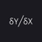
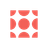
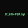
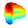
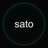
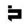
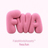

Protocol scorecards
Pinned blocks: Ethereum #26,458,556 · Base #59,903,224 · 37 Base EAS batches
Sorted by control-plane severity and capital exposure (DefiLlama TVL) across 316 protocols (189 Base-EAS verified). Select a row for the evidence.
Of 56 reviewed findings, 43 are Deltas (16 weaker protections, 16 other differences and 11 bookkeeping changes), 1 is Changed recently, 1 is Docs updated and 11 are Unresolved; these statuses use retained chain observations.
Aligned means the docs are accurate, not that the protocol is low-risk.
Control-strength graphicStrongModerateWeakNot determinedLonger, greener slices are stronger. Clockwise from the top: upgradeability, timelock floor, signer quorum, emergency scope, docs-vs-chain parity.
| Protocol | Docs vs chain | Control-strength graphic | What differs | Expand |
|---|---|---|---|---|
| ylstETHEthereum · $261M TVL | Delta | CIAN's stETH vault settings change via a Safe directly; the docs say they are time-locked | ||
Docs say: 'Fund allocation parameters are made transparent through multi-signature and time-lock mechanisms.' (docs.cian.app/llms-full.txt) Chain says: CIAN stETH Yield Layer vault 0xB13aa2d0345b0439b064f26B82D8dCf3f508775d (Ethereum): EIP-1967 proxy, implementation 0xA1Dc0B6A02AB091580DC57bDd5Fe8a9E577E0842; in its verified source the strategy position limits, market capacity, fee rates, rebalancer and fee receiver setters are onlyOwner. owner() = 0x261090afE1E7305474F4e3eEFCAca9964eBffFf5, a 3-of-4 Safe; the vault's ProxyAdmin 0xf24955E9D0a05222373d4555f8831f7A05e83F62 is owned by the same Safe. The TimeLock its contract table lists, 0x0CBee811C47C3A5cb4637f1E58d98B0Abbb4c54f (delay() = 86,400 s, admin() = 0x261090afE1E7305474F4e3eEFCAca9964eBffFf5), owns neither.
Reproduce on any archive node cast call 0xB13aa2d0345b0439b064f26B82D8dCf3f508775d \ "owner()" \ --block 26450616 --rpc-url "$ETH_RPC_URL" cast block 26450616 --field hash --rpc-url "$ETH_RPC_URL" # expect 0xd2df7ccb74a6772b51a5597c8f144f5cfae362efeabf193ecfc7c80f8ff37c35 | ||||
| Delta | uniBTC mints test 90% of existing supply vs reserves; docs say short reserves revert | |||
Docs say: 'Before any minting action occurs, the smart contract automatically checks reserve sufficiency using the on-chain Proof of Reserve feed. If reserves fall short, the mint transaction reverts.' (docs.bedrock.technology/security/secure-mint) Chain says: Bedrock VaultWithoutNative 0x047D41F2544B7F63A8e991aF2068a363d210d6Da (Ethereum): adequacyRatio() = 900, so checkReserve() evaluates existing supply * 900 / 1000 <= reserves before minting (feeders: reserve 0xc590D9fb8eE78a0909dFF341ccf717000b7b7fF2, supply 0xE542919E4b281f10b437F947c8Ba224DdfaBc716). The incoming mint amount is absent from this inequality, so ~111.1% is not a post-mint ceiling; separate per-asset caps and collateral-transfer checks in _mint() still apply, and uniBTC.mint() (0x004E9C3EF86bc1ca1f0bB5C7662861Ee93350568) performs no PoR check of its own. MANAGER_ROLE (setAdequacyRatio / setPoRFeeder) and PAUSER_ROLE are held by 0x9251fd3D79522bB2243a58FFf1dB43E25A495aaB, an account carrying 23-byte EIP-7702 delegation code. The vault and uniBTC share ProxyAdmin 0x029E4FbDAa31DE075dD74B2238222A08233978f6, owned by the 3-of-5 Safe 0xC9dA980fFABbE2bbe15d4734FDae5761B86b5Fc3, which also holds uniBTC's DEFAULT_ADMIN_ROLE. This record does not assert a reserve deficit.
Reproduce on any archive node cast call 0x047D41F2544B7F63A8e991aF2068a363d210d6Da \ "adequacyRatio()" \ --block 26449594 --rpc-url "$ETH_RPC_URL" cast block 26449594 --field hash --rpc-url "$ETH_RPC_URL" # expect 0xbe263d5b378dcb7c3c4e18bd8e388f0cb2dab1adacd83de2be58c9408b377287 | ||||
| Delta | One key can pause Gateway withdrawals, another can upgrade it; docs say trustless | |||
Docs say: 'Users have full control of their deposited assets. Funds can only move with their signature, and withdrawals are trustless.' (www.circle.com/gateway) Chain says: Circle GatewayWallet 0x77777777Dcc4d5A8B6E418Fd04D8997ef11000eE (Ethereum; the address the Gateway contract-addresses page lists): UUPS EIP-1967 proxy, implementation 0xF7a6D9D7Df917c072ac8987A820c58aA27A0e798 (GatewayWallet, verified source). owner() = 0x2A6A86466F181721ec8ff946967b56f1AA4758c5 and pauser() = 0x9812d5F0a0832d9A0a78a1ba728fACd87bC35b19, both accounts with no code (externally owned) at this pin; denylister() = 0x7359fD9aA258992eb4B6d9572c6f6c74Cf719a94, also without code. In the verified source _authorizeUpgrade, updateWithdrawalDelay and updatePauser are onlyOwner, pause() is onlyPauser, and both initiateWithdrawal() and withdraw() are whenNotPaused; no timelock sits in either path. withdrawalDelay() = 50,400 blocks; paused() = false. This record does not allege any misuse of these powers.
Reproduce on any archive node cast call 0x77777777Dcc4d5A8B6E418Fd04D8997ef11000eE \ "owner()" \ --block 26451608 --rpc-url "$ETH_RPC_URL" cast block 26451608 --field hash --rpc-url "$ETH_RPC_URL" # expect 0x0266af5bcad519d93b3be78e41b76a62985e22fbe4feef043ac3225f6f217a17 | ||||
| Ethereum · $40.2M TVL | Delta | Docs state a 6-of-8 multisig; the Zircuit Staking Safe is 4-of-6 | ||
Docs say: '`6/8` means at least six out of eight owners need to sign the message. * Multisig 1: `6/8`' (docs.zircuit.com/info/security/privileged-roles.md) Chain says: Zircuit Staking Safe 0xC463EaC02572CC964D43D2414023E2c6B62bAF38 (Ethereum): getThreshold() = 4 of getOwners() = 6 owners (Safe v1.3.0).
Reproduce on any archive node cast call 0xC463EaC02572CC964D43D2414023E2c6B62bAF38 \ "getThreshold()" \ --block 26441165 --rpc-url "$ETH_RPC_URL" cast block 26441165 --field hash --rpc-url "$ETH_RPC_URL" # expect 0x5182be2c61af5f48ed2ec43d3c177dedad257c4e966a7e384120829de73901d9 | ||||
| DOLA · INVEthereum · $18.7M TVL | Delta | sDOLA staleness limit reads 86,500 s, was 0 (check off); docs say typically 1-24 hours | ||
Docs say: Working-groups governance documentation lists 5-of-9 Policy Committee multisig. Chain says: GovernorMills (0xBeCCB6bb0aa4ab551966A7E4B97cec74bb359Bf6) guardian() wrapper (0x941c2699eC7E55a50Bde030d8E1e70649839259D) references Policy Committee Safe (0x4b6c63E6a94ef26E2dF60b89372db2d8e211F1B7) with getThreshold() = 4, getOwners().length = 7 (4-of-7 Gnosis Safe); GovernorMills.timelock() (0x926dF14a23BE491164dCF93f4c468A50ef659D5B) delay() = 172800s (48h).
Reproduce on any archive node cast call 0x4b6c63E6a94ef26E2dF60b89372db2d8e211F1B7 \ "getThreshold()" \ --block 26399876 --rpc-url "$ETH_RPC_URL" cast block 26399876 --field hash --rpc-url "$ETH_RPC_URL" # expect 0x8bf896b892683ff3267b88b367ab015a70cf5caf53542eb405f4f648f6bcde8a | ||||
| CELREthereum · $10.6M TVL | Delta | 3 cBridge governance keys can replace the pool signers after 7 days; docs: 2/3 stake | ||
Docs say: 'It is only when nodes with more than ⅔ of the total stake are malicious, that the fund pool will be at risk.' (cbridge-docs.celer.network/print.html) Chain says: cBridge Bridge 0x5427FEFA711Eff984124bFBB1AB6fbf5E3DA1820 (Ethereum, not a proxy; verified source): withdraw() and relay() accept a message signed by the stored signer set, and resetSigners(signers, powers) replaces that set onlyOwner, gated only by block.timestamp > resetTime (notifyResetSigners() sets it to now + noticePeriod()); noticePeriod() = 604,800 s, resetTime() = unset (max) at this pin. owner() = 0xF380166F8490F24AF32Bf47D1aA217FBA62B6575, a SimpleGovernance (verified source): 6 voters, all accounts with no code, powers 10000, 10000, 10000, 10000, 10000, 1; QuorumThreshold params(1) = 60% and FastPassThreshold params(2) = 40% of total power, so 3 of the 5 full-power voters pass a proposal it executes. delayPeriod() = 21,600 s (large-transfer delay). This record does not allege any misuse.
Reproduce on any archive node cast call 0x5427FEFA711Eff984124bFBB1AB6fbf5E3DA1820 \ "owner()" \ --block 26452373 --rpc-url "$ETH_RPC_URL" cast block 26452373 --field hash --rpc-url "$ETH_RPC_URL" # expect 0x63bfaa16f0019d8b37e757265d351bd135ad41e6ffa46207284198917123c55d | ||||
| Ethereum · $4.0M TVL | Delta | Pickle's MasterChef admin functions run from a Safe directly; docs: a 24-hour timelock | ||
Docs say: 'All key admin functions on the MasterChef contract, which controls the emission of PICKLEs to the Farms are controlled by a 24 hour timelock contract' (docs.pickle.finance/security/audits-and-timelock/timelocks-and-multisig) Chain says: Pickle MasterChef 0xbD17B1ce622d73bD438b9E658acA5996dc394b0d (Ethereum, not a proxy): its verified source makes add, set, setPicklePerBlock, setBonusEndBlock, setDevFundDivRate and the PICKLE mint path onlyOwner; MasterChef is owner() of the PICKLE token 0x429881672B9AE42b8EbA0E26cD9C73711b891Ca5. MasterChef owner() = 0x9d074E37d408542FD38be78848e8814AFB38db17, a 2-of-6 Safe (the page calls it a 2/5 multisig). The 24-hour Timelock the page links, 0x0040E05CE9A5fc9C0aBF89889f7b60c2fC278416 (delay() = 86,400 s, admin() = the same Safe), does not own MasterChef.
Reproduce on any archive node cast call 0xbD17B1ce622d73bD438b9E658acA5996dc394b0d \ "owner()" \ --block 26451608 --rpc-url "$ETH_RPC_URL" cast block 26451608 --field hash --rpc-url "$ETH_RPC_URL" # expect 0x0266af5bcad519d93b3be78e41b76a62985e22fbe4feef043ac3225f6f217a17 | ||||
| SEthereum · $3.3M TVL | Delta | Sonic Gateway's fail-safe opens after 200 days offline, not the documented 14 | ||
Docs say: 'In the highly unlikely event that the Gateway or the Sonic chain is down for 14 consecutive days, users are able to reclaim their bridged assets on Ethereum.' (docs.soniclabs.com/llms-full.txt) Chain says: Sonic Gateway TokenDeposit 0xa1E2481a9CD0Cb0447EeB1cbc26F1b3fff3bec20 (Ethereum): UUPS proxy, implementation 0xAdE2eF0101278fe11490F2EE2aaD7915a094ADe9. In its verified source, fetchDeadStatus() marks the bridge dead (unlocking withdrawals and deposit cancels while dead) only once the StateOracle's lastUpdateTime is older than TIME_UNTIL_DEAD = 200 days; the runtime code read at this pin holds that constant (17,280,000 s) and no 14-day constant. exitAdministrator() = 0x7390251Bf35AA7eA7C196fc4750bd5d6c5918329 (the mechanism is off while it is zero; the owner sets it). _authorizeUpgrade is onlyOwner, and owner() = 0x9Fe65a5418850015a9D8ad3Ca50d6a0B9769FbE0, a 3-of-4 Safe, so the period can be changed by an upgrade. Not dead at this pin (deadState zero; StateOracle 0xB7e8CC3F5FeA12443136f0cc13D81F109B2dEd7f lastUpdateTime 1795109183).
Reproduce on any archive node cast call 0xa1E2481a9CD0Cb0447EeB1cbc26F1b3fff3bec20 \ "exitAdministrator()" \ --block 26450616 --rpc-url "$ETH_RPC_URL" cast block 26450616 --field hash --rpc-url "$ETH_RPC_URL" # expect 0xd2df7ccb74a6772b51a5597c8f144f5cfae362efeabf193ecfc7c80f8ff37c35 | ||||
| BIOEthereum · $2.1M TVL | Delta | Existing BIO contract can mint; docs say growth needs a replacement contract | ||
Docs say: 'The supply is uncapped, meaning new BIO can be minted for future protocol or network growth. This requires deploying a new token contract to replace the current BIO token.' (docs.bio.xyz/bio/introduction/bio-token/basic-token-information.md) Chain says: BIO token 0xcb1592591996765Ec0eFc1f92599A19767ee5ffA (Ethereum, not a proxy; BioToken, verified source): mint(to, amount) is onlyRole(MINTER_ROLE) and the token has no supply cap. getRoleMemberCount(MINTER_ROLE) = 2: 0xd9C6Ee1547Fd6d48F8872dD866473893Bbe8A1Ab, a 5-of-11 Safe, and 0x1783E7d1F498321D7E15044d769621E1beDc7F4C, an ERC-1967 proxy to a Wormhole NttManager (implementation 0x2bBaCb406d043D93997344F28a74A25069f3e9E3) that mints for inbound bridge transfers. The same Safe is the only DEFAULT_ADMIN_ROLE member, the admin of MINTER_ROLE. totalSupply() = 2,914,432,394 BIO. The page says new BIO requires deploying a new token contract; the current contract can mint.
Reproduce on any archive node cast call 0xcb1592591996765Ec0eFc1f92599A19767ee5ffA \ "getRoleMember(bytes32,uint256)" 0x9f2df0fed2c77648de5860a4cc508cd0818c85b8b8a1ab4ceeef8d981c8956a6 0x0 \ --block 26451608 --rpc-url "$ETH_RPC_URL" cast block 26451608 --field hash --rpc-url "$ETH_RPC_URL" # expect 0x0266af5bcad519d93b3be78e41b76a62985e22fbe4feef043ac3225f6f217a17 | ||||
| BENDEthereum · $1.1M TVL | Delta | BendDAO's 7-day timelock over the BEND token proxy waits 24 hours | ||
Docs say: '| Incentive | 7 Days Timelock | 0x859f6e05410893fe64BC84d92BdA773fF798cf66 |' (raw.githubusercontent.com/BendDAO/bend-gitbook-portal/HEAD/risk/security-and-audits.md) Chain says: BEND token 0x0d02755a5700414B26FF040e1dE35D337DF56218 (Ethereum): EIP-1967 proxy, implementation 0x02863C14603C3b157379999F567DDECE151e9153, admin slot = ProxyAdmin 0x859f6e05410893fe64BC84d92BdA773fF798cf66 (the docs' 'Incentive' Proxy Admin). ProxyAdmin owner() = 0x4e4C314E2391A58775be6a15d7A05419ba7D2B6e, the docs' 'BendDAO Timelock 7D', an OpenZeppelin TimelockController (verified source): getMinDelay() = 86,400 s at this pin; the security page lists it at 7 days.
Reproduce on any archive node cast call 0x4e4C314E2391A58775be6a15d7A05419ba7D2B6e \ "getMinDelay()" \ --block 26451608 --rpc-url "$ETH_RPC_URL" cast block 26451608 --field hash --rpc-url "$ETH_RPC_URL" # expect 0x0266af5bcad519d93b3be78e41b76a62985e22fbe4feef043ac3225f6f217a17 | ||||
| 40AcresBase | Delta | Base AERO USDC Loan contract is upgradeable (2-of-3 Safe); intro says immutable | ||
Docs say: '40 Acres has completed four independent audits with Sherlock. Smart contracts are immutable and non-upgradeable post-deployment.' (docs.40acres.finance) Chain says: 40 Acres AERO USDC Loan proxy 0x87f18b377e625b62c708D5f6EA96EC193558EFD0 (Base): EIP-1967 implementation slot = 0xb43b30c405c61BC330227968635d130994450735; the implementation's proxiableUUID() = the EIP-1967 slot (UUPS), UPGRADE_INTERFACE_VERSION() = '5.0.0'; owner() = 0xfF16fd3D147220E6CC002a8e4a1f942ac41DBD23, a Safe 2-of-3.
Reproduce on any archive node cast storage 0x87f18b377e625b62c708D5f6EA96EC193558EFD0 \ 0x360894a13ba1a3210667c828492db98dca3e2076cc3735a920a3ca505d382bbc \ --block 59025642 --rpc-url "$BASE_RPC_URL" cast block 59025642 --field hash --rpc-url "$BASE_RPC_URL" # expect 0x8fc618f8e02aa1fd1c3bcf1300fd25e40291a0fcde351bd39ad8cb61781d5e12 | ||||
| SYRUP · syrupUSDCEthereum | Delta | PoolPermissionManager proxy admin is the 4-of-7 DAO Safe, not GovernorTimelock | ||
Docs say: Maple's Governor documentation places PoolPermissionManager implementation changes behind the Governor's delay; GovernorTimelock documentation specifies configurable delays with a 1-day minimum and discloses Security Admin exceptions; Maple's Token Transparency filing on Blockworks, section 3(b), states a 3-day GovernorTimelock for listed governance changes. Chain says: EIP-1967 admin slot holds 4-of-7 Maple DAO Safe (0xd6d4Bcde6c816F17889f1Dd3000aF0261B03a196); Globals.governor() (0x804a6F5F667170F545Bf14e5DDB48C70B788390C) points to GovernorTimelock (0x2eFFf88747EB5a3FF00d4d8d0f0800E306C0426b, defaultTimelockParameters() = 259200s / 3d); syrupUSDC (0x80ac24aA929eaF5013f6436cdA2a7ba190f5Cc0b) totalAssets = 898,551,580.57 units (6 dec).
Reproduce on any archive node cast storage 0xBe10aDcE8B6E3E02Db384E7FaDA5395DD113D8b3 \ 0xb53127684a568b3173ae13b9f8a6016e243e63b6e8ee1178d6a717850b5d6103 \ --block 26401540 --rpc-url "$ETH_RPC_URL" cast block 26401540 --field hash --rpc-url "$ETH_RPC_URL" # expect 0x49324aaf84b0ffd4e21026c5345272788bff377f0f86fcdb74280cdfc32a9641 | ||||
| Delta | OBOL mint has no enforced 500M cap; minter authority is a 2-of-3 Safe | |||
Docs say: docs.obol.org (token distribution; OBOL token): 'The total supply is capped at 500 million tokens.' / 'The official token contract address of the OBOL Token is 0x0B010000b7624eb9B3DfBC279673C76E9D29D5F7' Chain says: ObolToken 0x0B010000b7624eb9B3DfBC279673C76E9D29D5F7 (Sourcify exact match): totalSupply() = 500,000,000,000,000,103,303,500,000 (500,000,000.0000001033035 OBOL); mint() has no supply cap; MINTER_ROLE and DEFAULT_ADMIN_ROLE held by Safe 0x42D201CC4d9C1e31c032397F54caCE2f48C1FA72 (2-of-3, v1.3.0), not by the timelock.
Reproduce on any archive node cast call 0x0B010000b7624eb9B3DfBC279673C76E9D29D5F7 \ "totalSupply()" \ --block 26433001 --rpc-url "$ETH_RPC_URL" cast block 26433001 --field hash --rpc-url "$ETH_RPC_URL" # expect 0xa058ec92ccf0024822a76097f183d8e2d344d56e9539038c857e0cdaaa0ee5a7 | ||||
| Delta | TREE blacklisting has no delay; TREE and tETH owner paths keep 5-day timelocks | |||
Docs say: 'All Treehouse contracts are secured by a 5-day timelock, ensuring no critical action executes immediately and giving everyone a clear window to see and respond to upcoming updates.' (docs.treehouse.finance/protocol/tasset/security/timelock) / 'Token Contract: 0x77146784315Ba81904d654466968e3a7c196d1f3' (docs.treehouse.finance/protocol/tree-token); neither page names a blacklist or freeze role on TREE or the blacklister Safe. Pacta timelock radar brief treehouse-op-0x2f11 decoded the upgrade before it executed. Chain says: TREE 0x77146784315Ba81904d654466968e3a7c196d1f3 (Ethereum): EIP-1967 proxy, implementation 0x0fedcbfEBc293Ad8048726B0F887e6C1126EffA6 since the timelock operation 0x2f11dcc3… executed at #26,439,293; blacklister() = 0x22261B4D6F629D8cF946C3524df86bF7222901F6, a Safe with getThreshold() = 5 of getOwners() = 7 owners and no delay of its own (0 s), so blacklisting needs no timelock; owner() = timelock 0x2225DAbFfC7F862c99477381E971E8B1FDaB467e with getMinDelay() = 432000s (5 days).
Reproduce on any archive node cast call 0x77146784315Ba81904d654466968e3a7c196d1f3 \ "blacklister()" \ --block 26440048 --rpc-url "$ETH_RPC_URL" cast block 26440048 --field hash --rpc-url "$ETH_RPC_URL" # expect 0x2c6e70ac6ce978ce5c457208ea6d953e60e92ebf2151578f46cbdd070baa54c6 | ||||
| UNIEthereum | Delta | Voting period: docs 7 days · chain 5.6 days | ||
Docs say: developers.uniswap.org (governance process): '7-day voting period for the community to vote' / 'Duration: 2-day waiting period, 7-day voting period, 2-day timelock (if passed)' Chain says: GovernorBravoDelegator 0x408ED6354d4973f66138C91495F2f2FCbd8724C3: votingPeriod() = 40320 blocks = 483,840s (5.6 days) at 12-second slots; votingDelay() = 13140 blocks (~1.83 days).
Reproduce on any archive node cast call 0x408ED6354d4973f66138C91495F2f2FCbd8724C3 \ "votingPeriod()" \ --block 26431152 --rpc-url "$ETH_RPC_URL" cast block 26431152 --field hash --rpc-url "$ETH_RPC_URL" # expect 0xfe2ed4e127f30bb42dd30c6fc1460a82d8438cff3a717ec89210805e55199a46 | ||||
| Delta | DEFAULT_ADMIN handover delay: 1 second observed vs 3 days documented | |||
Docs say: tech.usual.money/overview/architecture/role-management states a delay of three days (259200s) before granting default admin to a new address. Chain says: defaultAdminDelay() = 1s (0x01); pendingDefaultAdminDelay() = (0, 0); defaultAdmin() = 0x6e9d65eC80D69b1f508560Bc7aeA5003db1f7FB7 (8-of-15 Gnosis Safe).
Reproduce on any archive node cast call 0x0D374775E962c3608B8F0A4b8B10567DF739bb56 \ "defaultAdminDelay()" \ --block 26401725 --rpc-url "$ETH_RPC_URL" cast block 26401725 --field hash --rpc-url "$ETH_RPC_URL" # expect 0xec3820f0a9db32c01728e66f78dc1958e410269e1077fd1db53df4fbce2ad7a1 | ||||
| POLEthereum · $2.15B TVL | Delta | Polygon's 5-of-9 Safe can upgrade the bridge with no delay; docs say it cannot censor | ||
Docs say: '4/8 Multisig 0x424bDE99FCfB68c5a1218fd3215caFfD031f19C4' (docs.polygon.technology/pos/reference/commit-chain-multisigs) Chain says: Polygon custom ChildERC20 mapping Safe 0x424bDE99FCfB68c5a1218fd3215caFfD031f19C4 (Ethereum): getThreshold() = 4 of 13 owners; the multisig page lists it as a 4/8 Multisig.
Reproduce on any archive node cast call 0x424bDE99FCfB68c5a1218fd3215caFfD031f19C4 \ "getThreshold()" \ --block 26449594 --rpc-url "$ETH_RPC_URL" cast block 26449594 --field hash --rpc-url "$ETH_RPC_URL" # expect 0xbe263d5b378dcb7c3c4e18bd8e388f0cb2dab1adacd83de2be58c9408b377287 | ||||
| Ethereum · $482M TVL | Delta | Docs say ProxyAdmin is generally 4-of-6 (no timelock disclosed); vault's is 2-of-3 | ||
Docs say: 'Upgrades to the vault's code are approved by the ProxyAdmin multisig. It is generally a 4 of 6 Gnosis Safe with two signers each from the asset issuer, Upshift and the curator, so no single party can upgrade a vault alone.' (docs.upshift.finance/vault-architecture/risk-controls) Chain says: Upshift vault 0xE9B725010A9E419412ed67d0fA5f3A5f40159D32 (Ethereum): EIP-1967 admin slot = ProxyAdmin 0xB5fBf201A35327Ddd89986FfA60CF5A675B2bDbc, whose owner() = Safe 0x4107557d726933f0BcA591A4218Afc92978457F7 with getThreshold() = 2 of getOwners() = 3 owners; the vault's owner() is a separate Safe 0x17ab7568Cd5386DF6C8E4552438E32794D057cC1 (2-of-3).
Reproduce on any archive node cast call 0x4107557d726933f0BcA591A4218Afc92978457F7 \ "getThreshold()" \ --block 26441165 --rpc-url "$ETH_RPC_URL" cast block 26441165 --field hash --rpc-url "$ETH_RPC_URL" # expect 0x5182be2c61af5f48ed2ec43d3c177dedad257c4e966a7e384120829de73901d9 | ||||
| HOPEthereum · $2.9M TVL | Delta | Hop's Bonder whitelist is set by a 2-of-3 key Safe, not the documented DAO | ||
Docs say: 'In summary, the Hop DAO controls every aspect of the protocol.' (docs.hop.exchange/governance/into-to-hop-dao); '0xeeA8422a08258e73c139Fc32a25e10410c14bd7a' (docs.hop.exchange/governance/important-links); 'l1Bridge: '0xb8901acB165ed027E32754E0FFe830802919727f'' (raw.githubusercontent.com/hop-protocol/hop/develop/packages/sdk/src/addresses/mainnet.ts) Chain says: Hop L1_ETH_Bridge 0xb8901acB165ed027E32754E0FFe830802919727f (Ethereum, not a proxy; verified source; the SDK's Ethereum ETH l1Bridge): addBonder(), removeBonder(), setGovernance(), setChallengePeriod(), setChainIdDepositsPaused() and rescueTransferRoot() are onlyGovernance, and governance() = 0x22e3F828b3f47dAcFACd875D20bd5cc0879C96e7, a Compound-style Timelock (verified) with delay() = 86,400 s, pendingAdmin() empty and admin() = Safe 0x1ec078551A5ac8F0f51fAc57Ffc48Ea7d9A86E9d: getThreshold() = 2 of getOwners() = 3; guard slot empty; getModulesPaginated() lists no module; all 3 owners are accounts with no code. Neither the DAO Governor 0xed8Bdb5895B8B7f9Fdb3C087628FD8410E853D48 nor the DAO Timelock 0xeeA8422a08258e73c139Fc32a25e10410c14bd7a (both on the governance links page) is in this path: 2 keys queue and execute any onlyGovernance call after 24 hours.
Reproduce on any archive node cast call 0xb8901acB165ed027E32754E0FFe830802919727f \ "governance()" \ --block 26453551 --rpc-url "$ETH_RPC_URL" cast block 26453551 --field hash --rpc-url "$ETH_RPC_URL" # expect 0x51e9967ffd6a84012d0dad44204d523b8ac43928e69de2801d2e72dbf8767129 | ||||
| Delta | Voter emergency council and epoch governor are the AerodromeMigration contract | |||
Docs say: github.com/aerodrome-finance/contracts (README): 'EpochGovernor.sol A simple epoch-based governance contract used exclusively for adjusting emissions.' / SPECIFICATION.md: 'Managed NFTs can be deactivated, a process which prevents the NFT from voting and from receiving deposits (requires emergency council).' Chain says: Voter 0x16613524e02ad97eDfeF371bC883F2F5d6C480A5: emergencyCouncil() = epochGovernor() = AerodromeMigration 0x22a2F7340a3fB4C7C389D91eE954766B12476721 (Sourcify match; MIGRATION_OPEN() = 1792620000), owned by Safe 0x42255e3C2d0b71a0b006243148fdF1a71d054cE0 (3-of-7, v1.5.0, the same 7 signers as the governor Safe 0xE6A41fE61E7a1996B59d508661e3f524d6A32075).
Reproduce on any archive node cast call 0x16613524e02ad97eDfeF371bC883F2F5d6C480A5 \ "emergencyCouncil()" \ --block 58203774 --rpc-url "$BASE_RPC_URL" cast block 58203774 --field hash --rpc-url "$BASE_RPC_URL" # expect 0x619b45ca763563ff11fc3246da1d039a7d0ab2780bedff6cb0428c9290a2cb10 | ||||
| Delta | Base vault-owner timelock has zero delay; strategy-owner changes keep 6 hours | |||
Docs say: docs.beefy.finance (contracts and timelocks): 'Beefy ensures that all privileged functions and upgrades are protected by standardised smart contract timelocks.' and 'By default, a 6-hour timelock is configured for all strategy changes and upgrades.' / Base address book: 'vaultOwner: '0x09D19184F46A32213DF06b981122e06882B61309',' Chain says: vaultOwner timelock 0x09D19184F46A32213DF06b981122e06882B61309: getMinDelay() = 0s; the dev multisig 0x6FfaCA7C3B38Ec2d631D86e15f328ee6eF6C6226 holds PROPOSER_ROLE, EXECUTOR_ROLE and CANCELLER_ROLE, so an operation it schedules can execute in the same block; the timelock is its own admin (Sourcify exact match).
Reproduce on any archive node cast call 0x09D19184F46A32213DF06b981122e06882B61309 \ "getMinDelay()" \ --block 58315414 --rpc-url "$BASE_RPC_URL" cast block 58315414 --field hash --rpc-url "$BASE_RPC_URL" # expect 0x5092b494a9f8555faecfaa0f49202536e0edcf26f2bdc6e25a563442258119cd | ||||
| CCIP · LINKEthereum | Delta | Docs: only the MCMS proposes · chain: a 6-of-12 Safe can also propose | ||
Docs say: docs.chain.link (CCIP upgradability): 'All proposals originate from a ManyChainMultiSig (MCMS), which requires multiple independent signers to sign off.' / 'For example, you can view the Ethereum mainnet MCMS on Etherscan.' Chain says: RBACTimelock 0x44835bBBA9D40DEDa9b64858095EcFB2693c9449: getRoleMemberCount(PROPOSER_ROLE) = 3: ManyChainMultiSig 0xE53289F32c8E690b7173aA33affE9B6B0CB0012F (the MCMS the docs link), GnosisSafeProxy 0xD6597750bf74DCAEC57e0F9aD2ec998D837005bf (Safe v1.3.0, 6-of-12; also a canceller) and ManyChainMultiSig 0xD9757aA52907798d1aF2FDa7A6C0cC733E5aCf7e.
Reproduce on any archive node cast call 0x44835bBBA9D40DEDa9b64858095EcFB2693c9449 \ "getRoleMemberCount(bytes32)" 0xb09aa5aeb3702cfd50b6b62bc4532604938f21248a27a1d5ca736082b6819cc1 \ --block 26433001 --rpc-url "$ETH_RPC_URL" cast block 26433001 --field hash --rpc-url "$ETH_RPC_URL" # expect 0xa058ec92ccf0024822a76097f183d8e2d344d56e9539038c857e0cdaaa0ee5a7 | ||||
| Delta | crvUSD factory admin is a LendingOwnerProxy; docs name the OwnershipAgent | |||
Docs say: curvefi/docs docs/developer/crvusd/factory.md states 'Only its admin, the CurveOwnershipAgent, can call to add a market'; LendingOwnerProxy intermediate wrapper added at block 26300155. Chain says: ControllerFactory (0xC9332fdCB1C491Dcc683bAe86Fe3cb70360738BC) admin() = LendingOwnerProxy (0xeDA020b067872717901916a3B8C724C21f6080d1), where dao() = CurveOwnershipAgent (0x40907540d8a6C65c637785e8f8B742ae6b0b9968, Aragon voteTime = 604800s / 7d on 0xE478de485ad2fe566d49342Cbd03E49ed7DB3356) and emergency_dao() = 5-of-9 EmergencyDAO Safe (0x467947EE34aF926cF1DCac093870f613C96B1E0c); crvUSD (0xf939E0A03FB07F59A73314E73794Be0E57ac1b4E) minter() = ControllerFactory, totalSupply = 2,134,809,204.98 crvUSD; debt_ceiling(0x370a449FeBb9411c95bf897021377fe0B7D100c0) = 1,000,000,000 crvUSD.
Reproduce on any archive node cast call 0xC9332fdCB1C491Dcc683bAe86Fe3cb70360738BC \ "admin()" \ --block 26403523 --rpc-url "$ETH_RPC_URL" cast block 26403523 --field hash --rpc-url "$ETH_RPC_URL" # expect 0xfc7beaa2338e8054577c0b101b641bc42afca2af39cb85d3fc13cbee32d4681a | ||||
| Delta | Admin timelock minimum is one day; core-function docs say seven days | |||
Docs say: key-trust-assumptions.md lists 7-day time-locks and 7 signatures (key-addresses.md lists 5/11); Risk Committee forum topic 810 (Jul 2026) notes 1-day delay. Chain says: getMinDelay() = 86400s (1 day); Dev Multisig (0x3B0AAf6e6fCd4a7cEEf8c92C32DFeA9E64dC1862) getThreshold() = 5, getOwners().length = 10 (5-of-10 Gnosis Safe).
Reproduce on any archive node cast call 0xE8Dc0Fab349EA169283C48Ccfd09d797E6DB7c94 \ "getMinDelay()" \ --block 26401638 --rpc-url "$ETH_RPC_URL" cast block 26401638 --field hash --rpc-url "$ETH_RPC_URL" # expect 0xe62ad2969617ad07c23bec298c3d5e197ea7c3084f7f66c90d2eb51d04c6273e | ||||
| fxUSD · FXNEthereum | Delta | V2 Router owner is the 6-of-9 operational Safe; separate timelock keeps 3 days | ||
Docs say: 'Once queued, every transaction enter a mandatory 3-day public timelock before execution giving the community time to review, question, or flag concerns.' (fxprotocol.gitbook.io/fx-docs/more/resources/multisig) Chain says: f(x) V2 Router 0x33636D49FbefBE798e15e7F356E8DBef543CC708 (Ethereum, an EIP-2535 Diamond): owner() = Safe 0x26B2ec4E02ebe2F54583af25b647b1D619e67BbF with getThreshold() = 6 of getOwners() = 9 owners (Safe v1.3.0), no Safe guard; facetAddress(diamondCut 0x1f931c1c) = 0x221ffB180AD01213FF882ab7DE9c75E23F9efA63. The timelock the docs name, 0x68863fb8855b04509a835082478D6E3D0bE4E61a, reads getMinDelay() = 259,200 s and is not the Router's owner.
Reproduce on any archive node cast call 0x33636D49FbefBE798e15e7F356E8DBef543CC708 \ "owner()" \ --block 26448221 --rpc-url "$ETH_RPC_URL" cast block 26448221 --field hash --rpc-url "$ETH_RPC_URL" # expect 0xa7818c0e1b8807aac0c999c2dc9aeeea40b91b4f19b1b76a62ad02d8d17607c8 | ||||
| Delta | Migration auth is live on four vaults, beyond the documented multisig scope | |||
Docs say: fluid-permissions-and-mutability.md describes narrow fee/reward/magnifier team multisig scope outside migration grants. Chain says: isVaultAuth(vault, 0x4F6F977aCDD1177DCD81aB83074855EcB9C2D49e) returns true on Vault 76 (0x7FE0B032cB5982Af72498F96be3DD6566F7B7de8), Vault 110 (0xee327311D8640156E87eC33ea55FcbF2309e0ce6), Vault 111 (0x984636a30ed2B4A61FB7150CED644096349275d3), and Vault 144 (0x0e19B64F3A79FeeE12Df1b6f239929c6ab6C7ED0) per IGP-98 / IGP-126 migration configuration.
Reproduce on any archive node cast call 0x324c5Dc1fC42c7a4D43d92df1eBA58a54d13Bf2d \ "isVaultAuth(address,address)" 0x7FE0B032cB5982Af72498F96be3DD6566F7B7de8 0x4F6F977aCDD1177DCD81aB83074855EcB9C2D49e \ --block 26401405 --rpc-url "$ETH_RPC_URL" cast block 26401405 --field hash --rpc-url "$ETH_RPC_URL" # expect 0x26e155e1569d436406a52ecee31c94d8d8ef2ca4c45d82211a84c8c802be1510 | ||||
| Delta | LegacyTimelock 36h vs 2-day docs; InstanceManager owner is a 4-of-21 Safe | |||
Docs say: docs.gearbox.finance states technical changes are 'behind a 2-day timelock' (172800s) and lists InstanceManager multisig as '4-of-12 (Subject to chain-specific configuration)'; the Veto Guard Safe (0xbb803559B4D58b75E12dd74641AB955e8B0Df40E) is documented at 4-of-12. Chain says: LegacyTimelock (0xa133C9A92Fb8dDB962Af1cbae58b2723A0bdf23b) delay() = 129600s (36 hours, GIP-104), admin() = LegacyGovernor (0x29B97F37B3E0C704bCFD785F5b7bBa2A0B7df2c7); InstanceManager (0x77777777144339Bdc3aCceE992D8d4D31734CB2e) owner() = 4-of-21 Gnosis Safe (0x1E9ec044853611F4bCD4BBcFE7657508BD1c53D3); Tech (0xA7D5DDc1b8557914F158076b228AA91eF613f1D5, 6-of-12), Veto (0xbb803559B4D58b75E12dd74641AB955e8B0Df40E, 4-of-12), Treasury (0x7b065Fcb0760dF0CEA8CFd144e08554F3CeA73D1, 5-of-10), and Fee (0x3E965117A51186e41c2BB58b729A1e518A715e5F, 5-of-10) Guard Safes match documented thresholds.
Reproduce on any archive node cast call 0xa133C9A92Fb8dDB962Af1cbae58b2723A0bdf23b \ "delay()" \ --block 26403523 --rpc-url "$ETH_RPC_URL" cast block 26403523 --field hash --rpc-url "$ETH_RPC_URL" # expect 0xfc7beaa2338e8054577c0b101b641bc42afca2af39cb85d3fc13cbee32d4681a | ||||
| Delta | Curator Safe: docs 3-of-6 · chain 3-of-5 | |||
Docs say: lidofinance/docs (earn/deployment-contracts.md line 199) lists 3/6 multisig; Mellow Core Vault docs describe bounded curator permissions. Chain says: getThreshold() = 3, getOwners().length = 5 (3-of-5 Gnosis Safe); DEFAULT_ADMIN_ROLE (0x00) on earnETH (0x6a37725ca7f4CE81c004c955f7280d5C704a249e) and earnUSD (0x014e6DA8F283C4aF65B2AA0f201438680A004452) held by 5-of-8 Lazy Vault Admin Safe (0x0Dd73341d6158a72b4D224541f1094188f57076E, Timelock 0x363Ba8843d06BA5968f55C26aB055162eDd62189 getMinDelay = 0s), where all 5 Curator signers are Lazy Vault Admin owners.
Reproduce on any archive node cast call 0xe5abcc40196174Ae0d12153dE286F0D8E401769d \ "getThreshold()" \ --block 26401312 --rpc-url "$ETH_RPC_URL" cast block 26401312 --field hash --rpc-url "$ETH_RPC_URL" # expect 0x95866ea3ef8f9a0567ce000bc8075f6dc5fb0f1e80cb4e9999ae624a2f0dc109 | ||||
| Delta | Base pause guardian is a 2-of-4 Safe (Oct MIP-X71); older constitution says 3-of-5 | |||
Docs say: Moonwell DAO Constitution 8.1: 'The Security Council has the power to execute any pause functionality, or perform other required actions with no delay ... Performing any Emergency Action requires a 3-of-5 approval from the Security Council.' Chain says: Unitroller (0xfBb21d0380beE3312B33c4353c8936a0F13EF26C).pauseGuardian() = 2-of-4 Safe 0x5B710010586C1b728B047c3E42473c700eeA4026 (v1.4.1); 1 of its 4 owner addresses is also an owner of the 3-of-5 Security Council Safe 0x446342AF4F3bCD374276891C6bb3411bf2F8779E. borrowCapGuardian() = supplyCapGuardian() = 2-of-4 Safe 0x08eDEbFFaE68970DCf751baa826182b3a4aCFC05.
Reproduce on any archive node cast call 0xfBb21d0380beE3312B33c4353c8936a0F13EF26C \ "pauseGuardian()" \ --block 57842915 --rpc-url "$BASE_RPC_URL" cast block 57842915 --field hash --rpc-url "$BASE_RPC_URL" # expect 0x7ae27f2be8e931c33ac284c8d5c548c8fd7a68f08e18bb372c70e2ca3b4bd129 | ||||
| Delta | OUSG instant mint limit: docs $50M · chain $100M per day | |||
Docs say: docs.ondo.finance/qualified-access-products/ousg/instant-limits.md states 'Instant minting has a $50M Global Limit' and 'Instant redemptions have a $50M Global Limit'; Flux docs specify 1-day Timelock governance. Chain says: RateLimiter (0x98Db502215Da1ad9F626D4a0090A8A2f4971003c) globalSubscriptionLimits(0x1B19C19393e2d034D8Ff31ff34c81252FcBbee92) word [2] = 100,000,000,000,000,000,000,000,000 ($100M per 86400s window), globalRedemptionLimits(OUSG) word [2] = 50,000,000,000,000,000,000,000,000 ($50M per 86400s); Flux Comptroller (0x95Af143a021DF745bc78e845b54591C53a8B3A51) admin() = FluxTimelock (0x2c5898da4DF1d45EAb2B7B192a361C3b9EB18d9c, delay() = 86400s / 1d, admin() = 0x336505EC1BcC1A020EeDe459f57581725D23465A); OUSG totalSupply = 1,110,569.33 OUSG.
Reproduce on any archive node cast call 0x98Db502215Da1ad9F626D4a0090A8A2f4971003c \ "globalSubscriptionLimits(address)" 0x1B19C19393e2d034D8Ff31ff34c81252FcBbee92 \ --block 26403121 --rpc-url "$ETH_RPC_URL" cast block 26403121 --field hash --rpc-url "$ETH_RPC_URL" # expect 0x71acee2313a2c8eacd7d2c87667dc505310b3e9224d84eaebb71d5a890ef9d1c | ||||
| Delta | Council leave notice: chain 28 days · RPIP-33 bound under 14 days | |||
Docs say: rpips.rocketpool.net RPIP-33 parameter table, members.leave.time: 'How long a member must give notice for before manually leaving the security council' with the bound '< 14 days' Chain says: RocketDAOProtocolSettingsSecurity (0xC9D771AaF504F33bB3C8a7E67eA9f1881F837cFf).getLeaveTime() = 2419200s (28 days). The security council has 1 member, Safe 0x6C565aF34f15dE064b56afEdF7B0F59C15bB20FE (2-of-3).
Reproduce on any archive node cast call 0xC9D771AaF504F33bB3C8a7E67eA9f1881F837cFf \ "getLeaveTime()" \ --block 26422243 --rpc-url "$ETH_RPC_URL" cast block 26422243 --field hash --rpc-url "$ETH_RPC_URL" # expect 0xbbe80f9ef9966a9d04cea23db216847f8c8fcc8d66f87c215dc7f712f0743410 | ||||
| SDTEthereum | Delta | Timelock: docs 2 days · chain 5 days; Treasury Safe 3-of-5, not 4-of-7 | ||
Docs say: docs.stakedao.org (timelock, role structure): Executor 'Can execute operations after delay (permissionless)'; Proposer 'Can schedule operations (governance multisig)' Chain says: ProtocolTimelock 0xb27afc7844988948FBd6210AeF4E1362bC2d8E6a: hasRole(EXECUTOR_ROLE, address(0)) = false, so execution is permissioned, not permissionless; the Governance Safe 0xB0552b6860CE5C0202976Db056b5e3Cc4f9CC765 (3-of-5, Safe v1.3.0, 3 modules enabled) holds EXECUTOR_ROLE, PROPOSER_ROLE, CANCELLER_ROLE and GUARDIAN_ROLE; the timelock is its own admin and does not hold EXECUTOR_ROLE (AccessControl without enumeration: other holders are not excluded).
Reproduce on any archive node cast call 0xb27afc7844988948FBd6210AeF4E1362bC2d8E6a \ "hasRole(bytes32,address)" 0xd8aa0f3194971a2a116679f7c2090f6939c8d4e01a2a8d7e41d55e5351469e63 0x0000000000000000000000000000000000000000 \ --block 26429396 --rpc-url "$ETH_RPC_URL" cast block 26429396 --field hash --rpc-url "$ETH_RPC_URL" # expect 0x3fb83aa053c26ac6b98d634858da1b3c23bb65bae7a12f8f14d72d8273e16d71 | ||||
| Delta | Docs name another L1 ProxyAdmin Owner; owner() is a different 2-of-2 Safe | |||
Docs say: 'Authorized to update the L1 Proxy Admin.' (docs.base.org/specifications/reference/configuration, row L1 ProxyAdmin Owner: 0x5a0Aae59D09fccBdDb6C6CcEB07B7279367C3d2A) Chain says: Base L1 ProxyAdmin 0x0475cBCAebd9CE8AfA5025828d5b98DFb67E059E (Ethereum): owner() = Safe 0x7bB41C3008B3f03FE483B28b8DB90e19Cf07595c with getThreshold() = 2 of getOwners() = 2 owners: 0x9855054731540A48b28990B63DcF4f33d8AE46A1 (3-of-6 Safe), 0x20AcF55A3DCfe07fC4cecaCFa1628F788EC8A4Dd (8-of-11 Safe). The address the configuration page names as L1 ProxyAdmin Owner, 0x5a0Aae59D09fccBdDb6C6CcEB07B7279367C3d2A, is a 2-of-2 Safe, not one of those owners.
Reproduce on any archive node cast call 0x0475cBCAebd9CE8AfA5025828d5b98DFb67E059E \ "owner()" \ --block 26448221 --rpc-url "$ETH_RPC_URL" cast block 26448221 --field hash --rpc-url "$ETH_RPC_URL" # expect 0xa7818c0e1b8807aac0c999c2dc9aeeea40b91b4f19b1b76a62ad02d8d17607c8 | ||||
| Delta | Manager Safe: docs 3-of-5 · chain 3-of-6 | |||
Docs say: staderlabs.gitbook.io/ethereum states 'The Manager multisig is a 3-of-5 and is tasked with maintaining the protocol' and specifies a 7-day minimum delay on contract upgrades. Chain says: Manager Safe (0xAAfb31780e4b9c95Bc920e388f4925A874cd07AF) getThreshold() = 3, getOwners().length = 6 (3-of-6 Gnosis Safe); ETHx (0xA35b1B31Ce002FBF2058D22F30f95D405200A15b) EIP-1967 admin slot = ProxyAdmin (0x67B12264Ca3e0037Fc7E22F2457b42643a04C86e), owner() = TimelockController (0x1112D5C55670Cb5144BF36114C20a122908068B9, getMinDelay() = 604800s / 7d, PROPOSER_ROLE held by 6-of-9 Community Safe 0x45B977CeCB9Dfaa17dFcBa88826ef684b8489fF6), which also holds DEFAULT_ADMIN_ROLE on ETHx and StaderConfig (0x4ABEF2263d5A5ED582FC9A9789a41D85b68d69DB); ETHx MINTER_ROLE held by StakePoolsManager (0xcf5EA1b38380f6aF39068375516Daf40Ed70D299), totalSupply = 58,434.16 ETHx (18 dec).
Reproduce on any archive node cast call 0xAAfb31780e4b9c95Bc920e388f4925A874cd07AF \ "getThreshold()" \ --block 26403676 --rpc-url "$ETH_RPC_URL" cast block 26403676 --field hash --rpc-url "$ETH_RPC_URL" # expect 0xf4246ca23c4c38d520de16080a11b5186d04c8242b2c85edcb04c455d291c3ae | ||||
| VSPEthereum · $65.8M TVL | Delta | Docs state a 3-of-5 Vesper multisig; the governor Safe is 3-of-6 | ||
Docs say: 'Multisig is a contract where n people vote on transaction before it gets executed. The Vesper multisig has 5 signers and requires 3 yes votes for a transaction to execute.' (docs.vesper.finance/vesper-pools-and-strategies/vespers-modular-pool-architecture) Chain says: Vesper governor Safe 0x9520b477Aa81180E6DdC006Fc09Fb6d3eb4e807A (Ethereum): getThreshold() = 3 of getOwners() = 6 owners (Safe v1.3.0); governor() of the Vesper pools 0xd1C117319B3595fbc39b471AB1fd485629eb05F2, 0x3aEd4dd0b5ba616156Fa352274670c18D2Ec2A81, 0x025a05f1967521806BB4c8a10Ba4b8c00A794F65 is this Safe, which is also the published controller of the VSP token record.
Reproduce on any archive node cast call 0x9520b477Aa81180E6DdC006Fc09Fb6d3eb4e807A \ "getThreshold()" \ --block 26441165 --rpc-url "$ETH_RPC_URL" cast block 26441165 --field hash --rpc-url "$ETH_RPC_URL" # expect 0x5182be2c61af5f48ed2ec43d3c177dedad257c4e966a7e384120829de73901d9 | ||||
| RSUP · sreUSDEthereum · $39.6M TVL | Delta | Safe threshold: docs 3-of-4 · chain 3-of-5 | ||
Docs say: docs.resupply.finance (multisig and admin permissions): 'Multisig Members (3 of 4)' / contract addresses: 'Multisig (3-of-4) | `0xFE11a5009f2121622271e7dd0FD470264e076af6`' Chain says: Main Multisig 0xFE11a5009f2121622271e7dd0FD470264e076af6: 3-of-5 (getThreshold() = 3, getOwners() = 5 owners; Safe v1.4.1, no modules).
Reproduce on any archive node cast call 0xFE11a5009f2121622271e7dd0FD470264e076af6 \ "getThreshold()" \ --block 26429396 --rpc-url "$ETH_RPC_URL" cast block 26429396 --field hash --rpc-url "$ETH_RPC_URL" # expect 0x3fb83aa053c26ac6b98d634858da1b3c23bb65bae7a12f8f14d72d8273e16d71 | ||||
| Delta | Docs state a 2-of-3 YNDelegator; the YieldNest Safe is 2-of-4 | |||
Docs say: 'YNDelegator 2/3 0xDF51B7843817F76220C0970eF58Ba726630028eF' / 'Delegates the EigenPods to the operators' (docs.yieldnest.finance/security/roles.md) Chain says: YNDelegator Safe 0xDF51B7843817F76220C0970eF58Ba726630028eF (Ethereum): getThreshold() = 2 of getOwners() = 4 owners (Safe v1.3.0).
Reproduce on any archive node cast call 0xDF51B7843817F76220C0970eF58Ba726630028eF \ "getThreshold()" \ --block 26438867 --rpc-url "$ETH_RPC_URL" cast block 26438867 --field hash --rpc-url "$ETH_RPC_URL" # expect 0x6c477521320837df8611249a255cb7142052874937cddb9fe568f685763458ff | ||||
| BR · uniETHEthereum · $16.9M TVL | Delta | Docs list an older restaking implementation; uniETH upgrades via a 3-of-5 Safe ProxyAdmin | ||
Docs say: docs.bedrock.technology (uniETH contracts): 'Restaking proxy contract: https://etherscan.io/address/0x3f4eaceb930b0edfa78a1dfcbae5c5494e6e9850' / 'Restaking implementation: https://etherscan.io/address/0x9609af0490b96d7add7eea3554b1a944ee440262#code' Chain says: Restaking proxy 0x3F4eaCeb930b0Edfa78a1DFCbaE5c5494E6e9850: EIP-1967 implementation = 0x1e4D0A963953e7c08Fc7602B01e683547Fc4E518 (Sourcify match), not the documented 0x9609Af0490b96D7AdD7EEa3554b1a944ee440262; admin = ProxyAdmin 0xa5F2B6AB5B38b88Ba221741b3A189999b4c889C6.
Reproduce on any archive node cast storage 0x3F4eaCeb930b0Edfa78a1DFCbaE5c5494E6e9850 \ 0x360894a13ba1a3210667c828492db98dca3e2076cc3735a920a3ca505d382bbc \ --block 26434786 --rpc-url "$ETH_RPC_URL" cast block 26434786 --field hash --rpc-url "$ETH_RPC_URL" # expect 0xb712439847099ec3e8b1617aafd1bc7ece29e22a88dc4e7c8afcf05e6944d987 | ||||
| SPELLEthereum · $3.5M TVL | Delta | Docs state a 5-of-10 multisig; the Abracadabra Spell Safe is 5-of-11 | ||
Docs say: 'The 5/10 multisign is composed of:' (docs.abracadabra.money/llms-full.txt) Chain says: Abracadabra Spell Safe 0x5f0DeE98360d8200b20812e174d139A1a633EDd2 (Ethereum): getThreshold() = 5 of getOwners() = 11 owners (Safe v1.3.0); it controls MagicInternetMoneyV1 0x99D8a9C45b2ecA8864373A26D1459e3Dff1e17F3.
Reproduce on any archive node cast call 0x5f0DeE98360d8200b20812e174d139A1a633EDd2 \ "getThreshold()" \ --block 26449594 --rpc-url "$ETH_RPC_URL" cast block 26449594 --field hash --rpc-url "$ETH_RPC_URL" # expect 0xbe263d5b378dcb7c3c4e18bd8e388f0cb2dab1adacd83de2be58c9408b377287 | ||||
| GFIEthereum · $2.0M TVL | Delta | Docs state a 6-of-10 multisig; the Goldfinch Safe is 6-of-12 | ||
Docs say: 'The Goldfinch Council is a 6-of-10 multisig with 10 members who represent all stakeholders of the protocol' (docs.goldfinch.finance/goldfinch/goldfinch-v1/governance.md) Chain says: Goldfinch Safe 0xBEb28978B2c755155f20fd3d09Cb37e300A6981f (Ethereum): getThreshold() = 6 of getOwners() = 12 owners (Safe v1.1.1).
Reproduce on any archive node cast call 0xBEb28978B2c755155f20fd3d09Cb37e300A6981f \ "getThreshold()" \ --block 26449594 --rpc-url "$ETH_RPC_URL" cast block 26449594 --field hash --rpc-url "$ETH_RPC_URL" # expect 0xbe263d5b378dcb7c3c4e18bd8e388f0cb2dab1adacd83de2be58c9408b377287 | ||||
| AXLEthereum | Delta | Deployment config lists an older gateway implementation; 3-day timelock with operator path | ||
Docs say: axelar-contract-deployments (mainnet config, chains.ethereum, linked from docs.axelar.dev): '"implementation": "0x99B5FA03a5ea4315725c43346e55a6A6fbd94098"' / '"authModule": "0xE3B83f79Fbf01B25659f8A814945aB82186A8AD0"' Chain says: AxelarGateway 0x4F4495243837681061C4743b74B3eEdf548D56A5: implementation() = 0x16C22cbDD77350b1AC88AdDA344F691c12f41960, authModule() = 0x3d3C73E91B1b0C243f1437F2d8363b1D5B093BD0 (whose owner() is the gateway); the deployment config lists implementation 0x99B5FA03a5ea4315725c43346e55a6A6fbd94098 and auth module 0xE3B83f79Fbf01B25659f8A814945aB82186A8AD0.
Reproduce on any archive node cast call 0x4F4495243837681061C4743b74B3eEdf548D56A5 \ "authModule()" \ --block 26434786 --rpc-url "$ETH_RPC_URL" cast block 26434786 --field hash --rpc-url "$ETH_RPC_URL" # expect 0xb712439847099ec3e8b1617aafd1bc7ece29e22a88dc4e7c8afcf05e6944d987 | ||||
| DFS · DeFiSaverEthereum | Delta | Docs state a 2/3 Admin multisig; the Safe is 3-of-6 | ||
Docs say: 'Automation contracts are upgradeable, with any upgrades being locked behind a 24h timelock which can be activated by a 2/3 multisig (Admin) with actual upgrades initiable by a different 3/5 multisig (Owner).' (docs.defisaver.com/protocol/security-and-audits/admin-access-control) Chain says: DFSRegistry 0x287778F121F134C66212FB16c9b53eC991D32f5b adminVault() = AdminVault 0xCCf3d848e08b94478Ed8f46fFead3008faF581fD; AdminVault.owner() = Safe 0xBc841B0dE0b93205e912CFBBd1D0c160A1ec6F00 (Ethereum) with getThreshold() = 3 of getOwners() = 6 owners (Safe v1.3.0).
Reproduce on any archive node cast call 0xBc841B0dE0b93205e912CFBBd1D0c160A1ec6F00 \ "getThreshold()" \ --block 26441165 --rpc-url "$ETH_RPC_URL" cast block 26441165 --field hash --rpc-url "$ETH_RPC_URL" # expect 0x5182be2c61af5f48ed2ec43d3c177dedad257c4e966a7e384120829de73901d9 | ||||
| Delta | Community multisig: docs 3-of-6 · chain 3-of-7 | |||
Docs say: docs.puffer.fi (multisig): 'Puffer's Community Multisig is a 3-of-6 multisig composed of reputable and aligned Ethereum community members and auditing firms.' Chain says: Safe 0x446d4d6b26815f9bA78B5D454E303315D586Cb2a (= Timelock COMMUNITY_MULTISIG()): getThreshold() = 3 with 7 owners (v1.3.0); holds AccessManager role 1 (upgrader) with execution delay 0.
Reproduce on any archive node cast call 0x446d4d6b26815f9bA78B5D454E303315D586Cb2a \ "getThreshold()" \ --block 26425374 --rpc-url "$ETH_RPC_URL" cast block 26425374 --field hash --rpc-url "$ETH_RPC_URL" # expect 0xfa22e277760f1df7134b0af20499d6305ee4e017219a917a61a78aa76e89382d | ||||
| YFIEthereum · $127M TVL | Changed recently | yChad signer roster changed; the Safe keeps its 6-of-9 threshold | ||
Docs say: '| [0x6F2A8Ee9452ba7d336b3fba03caC27f7818AeAD6](https://etherscan.io/address/0x6F2A8Ee9452ba7d336b3fba03caC27f7818AeAD6) | Mariano Conti (nanexcool.com, prev. MakerDAO) |' (raw.githubusercontent.com/yearn/yearn-devdocs/master/docs/developers/security/multisig.md) Chain says: yChad Safe 0xFEB4acf3df3cDEA7399794D0869ef76A6EfAff52 (Ethereum): getThreshold() = 6 of getOwners() = 9 owners; 0x6F2A8Ee9452ba7d336b3fba03caC27f7818AeAD6 is not among getOwners().
Reproduce on any archive node cast call 0xFEB4acf3df3cDEA7399794D0869ef76A6EfAff52 \ "getOwners()" \ --block 26441165 --rpc-url "$ETH_RPC_URL" cast block 26441165 --field hash --rpc-url "$ETH_RPC_URL" # expect 0x5182be2c61af5f48ed2ec43d3c177dedad257c4e966a7e384120829de73901d9 | ||||
| trUSDEthereum · $77.3M TVL | Docs updated | Retrieved roles page names the retained trUSD controller; chain re-read pending | ||
Docs say: Prior snapshot: 'It holds the Timelock Admin role on the core contracts' (docs.tori.finance/security/roles.md, captured 19 November 2026, naming 0xA952453E39F77108Ee37C1b92de593F1C59A6ef4). Tori Finance's roles page retrieved 21 November 2026 names 0xcd3c66e73abF927EAAF1238aEB5F251b4f2f667b (86,400 seconds), the controller Pacta observed; pending a fresh finalized-block chain read. Chain says: Tori trUSD 0xd0580192E98eA6CEB9c7b6191Ed2E27560911697 (Ethereum, EIP-1967 proxy, implementation 0xb1d133fE29255EB4Ac9B05d647d49cd7F05ff631): hasRole(TIMELOCK_ADMIN_ROLE 0x5f58e3a2316349923ce3780f8d587db2d72378aed66a8261c916544fa6846ca5, 0xcd3c66e73abF927EAAF1238aEB5F251b4f2f667b) = true and hasRole(TIMELOCK_ADMIN_ROLE, 0xA952453E39F77108Ee37C1b92de593F1C59A6ef4) = false at this pin; the reverse at Pacta's published pin #26,448,221. 0xA952453E39F77108Ee37C1b92de593F1C59A6ef4 is the timelock the roles page named in its 19 November 2026 snapshot (the page retrieved 21 November 2026 names 0xcd3c66e73abF927EAAF1238aEB5F251b4f2f667b); 0xcd3c66e73abF927EAAF1238aEB5F251b4f2f667b is a second ToriTimelock (verified source; renounceRole disabled). Both have getMinDelay() = 86,400 s and the 3-of-5 Safe 0x0C6Bbfd2d5666d44bf28580eDEec0263692C8316 holds PROPOSER_ROLE on both: At the retained pin, trUSD used a different 24-hour controller from the 19 November documentation snapshot; the roles page retrieved 21 November now names that controller, pending a fresh chain read.
Reproduce on any archive node cast call 0xd0580192E98eA6CEB9c7b6191Ed2E27560911697 \ "hasRole(bytes32,address)" 0x5f58e3a2316349923ce3780f8d587db2d72378aed66a8261c916544fa6846ca5 0xcd3c66e73abF927EAAF1238aEB5F251b4f2f667b \ --block 26451608 --rpc-url "$ETH_RPC_URL" cast block 26451608 --field hash --rpc-url "$ETH_RPC_URL" # expect 0x0266af5bcad519d93b3be78e41b76a62985e22fbe4feef043ac3225f6f217a17 | ||||
| Unresolved | ctDeltaWeETH owner/manager share a 1-of-2 Safe; single-key drain not established | |||
Docs say: docs.concrete.xyz (risks and safety), 16 November 2026 snapshot: 'Separated roles. Vault operations are split across distinct roles. No single key has full control or can drain a vault.' The page's current wording could not be verified, and this role assignment alone does not establish single-key full control or vault draining. Chain says: Safe 0x8F5f1d40243b259cEB7aB44bA421Ff191bCD3381: getThreshold() = 1 with 2 owners; it is the vault owner() (the gate for factory-driven vault upgrades), the only VAULT_MANAGER member and the factory's getFactoryManager().
Reproduce on any archive node cast call 0x8F5f1d40243b259cEB7aB44bA421Ff191bCD3381 \ "getThreshold()" \ --block 26425374 --rpc-url "$ETH_RPC_URL" cast block 26425374 --field hash --rpc-url "$ETH_RPC_URL" # expect 0xfa22e277760f1df7134b0af20499d6305ee4e017219a917a61a78aa76e89382d | ||||
| Unresolved | Legacy cbBTC beacon upgrades have no delay; 24h Opt-in doc coverage unverified | |||
Docs say: 'Every upgrade is subject to a mandatory waiting period before it takes effect. This gives investors time to evaluate the incoming change and exit the vault if needed.' and 'The delay window is configurable by the vault admin , within the protocol bounds of 24 hours (minimum) to 30 days (maximum).' (docs.lagoon.finance/vault/upgradability-and-opt-in-proxy) Chain says: Lagoon cbBTC vault 0xB09F761Cb13baCa8eC087Ac476647361b6314F98 (Ethereum) is an EIP-1967 BeaconProxy: beacon slot = UpgradeableBeacon 0x707D622cdA4b5459e7DcEe8Ba8E429F154f96A27 (implementation() = 0x6C77c47FB8168E22976C3B0338CB1769c952249f), admin slot empty. The beacon's owner() = Safe 0x6D46e28aB34622d9A39d0F306a37a8dC270951aF with getThreshold() = 3 of getOwners() = 6 owners (Safe v1.3.0), no Safe guard; the beacon exposes no delay(). An upgrade of the beacon applies to the vault at once.
Reproduce on any archive node cast call 0x707D622cdA4b5459e7DcEe8Ba8E429F154f96A27 \ "owner()" \ --block 26448221 --rpc-url "$ETH_RPC_URL" cast block 26448221 --field hash --rpc-url "$ETH_RPC_URL" # expect 0xa7818c0e1b8807aac0c999c2dc9aeeea40b91b4f19b1b76a62ad02d8d17607c8 | ||||
| Unresolved | MINOR_ROLES_MANAGER administers PAUSE/UNPAUSE; current roles page unverified | |||
Docs say: docs.infinifi.xyz (roles documentation): 'PAUSE / Pause protocol functions / GOVERNOR / UNPAUSE / Unpause functions / GOVERNOR' Chain says: InfiniFiCore 0xF6d48735EcCf12bDC1DF2674b1ce3fcb3bD25490: getRoleAdmin(UNPAUSE) = getRoleAdmin(PAUSE) = keccak256("MINOR_ROLES_MANAGER") (0x9849206c..6512), whose members are the Team Multisig 0x80608f852D152024c0a2087b16939235fEc2400c and the Long Timelock; GOVERNOR is not the admin of either role.
Reproduce on any archive node cast call 0xF6d48735EcCf12bDC1DF2674b1ce3fcb3bD25490 \ "getRoleAdmin(bytes32)" 0xe7276a2a84d8de556657ec9cf93a55a7d66f096e529d0582ed08e9e2208b92b5 \ --block 26425374 --rpc-url "$ETH_RPC_URL" cast block 26425374 --field hash --rpc-url "$ETH_RPC_URL" # expect 0xfa22e277760f1df7134b0af20499d6305ee4e017219a917a61a78aa76e89382d | ||||
| yoETH · yoUSDBase · $26.9M TVL | Unresolved | Approval Registry owned by the Admin Safe; sampled vault upgrades keep 48 hours | ||
Docs say: docs.yo.xyz (YO V2 Security Framework): 'Approval Registry: Onchain, timelocked caps on how much of each asset a vault may approve to each contract' and 'Every path a dollar can take is written into immutable adapters and timelocked registries' Chain says: YoApprovalRegistry 0xB4b3F5C964A360bBd7201f72a55D0c48B8aD7021: owner() = YO Admin Multisig 0x67b6F699F1c8040414032a3C2C88a54db144FCd2 (4-of-6 Safe, v1.4.1, no modules), not the YO Timelock 0x38cE5e45D0f5d03E83863bb19B3b1A272C186F48; pendingOwner() = 0; not a proxy (Sourcify exact match). It is the approvalRegistry() of yoETH 0x3A43AEC53490CB9Fa922847385D82fe25d0E9De7 and yoUSD 0x0000000f2eB9f69274678c76222B35eEc7588a65; the Pool, BridgeRoute, MorphoMarket, SwapPair and ERC4626Vault registries are also owned directly by the Admin Multisig.
Reproduce on any archive node cast call 0xB4b3F5C964A360bBd7201f72a55D0c48B8aD7021 \ "owner()" \ --block 58315414 --rpc-url "$BASE_RPC_URL" cast block 58315414 --field hash --rpc-url "$BASE_RPC_URL" # expect 0x5092b494a9f8555faecfaa0f49202536e0edcf26f2bdc6e25a563442258119cd | ||||
| HAKKAEthereum · $3.6M TVL | Unresolved | HAKKA owner Safe is 2-of-4; current documented roster unverified | ||
Docs say: 'The keyholders are as follows.' (hakkafinance.gitbook.io/hakka-wiki/governance/multi-sig.md) Chain says: Hakka multi-sig 0xF2B8f214Dc81b849ed3BDCAEdA6c8c39625c500A (Ethereum Safe, the address the page gives): getThreshold() = 2 of getOwners() = 4; guard slot empty; getModulesPaginated() lists no module. Owners: 0x9033c3677E6C63FC252E9546AD5b5E7d66Fc0926, 0x1D075f1F543bB09Df4530F44ed21CA50303A65B2, 0xF9aCeFD1A4e4360eE3A534Cb3485Bce36F5F05A4, 0x784e010430a923Ce2a3Ff9846C4010694Bb7BEfb, all accounts with no code; the three documented keyholders are owners, and 0x9033c3677E6C63FC252E9546AD5b5E7d66Fc0926 is an owner the page does not name. With a threshold of 2, that key and any one documented keyholder can execute. HAKKA token 0x0E29e5AbbB5FD88e28b2d355774e73BD47dE3bcd owner() = this Safe.
Reproduce on any archive node cast call 0xF2B8f214Dc81b849ed3BDCAEdA6c8c39625c500A \ "getOwners()" \ --block 26453551 --rpc-url "$ETH_RPC_URL" cast block 26453551 --field hash --rpc-url "$ETH_RPC_URL" # expect 0x51e9967ffd6a84012d0dad44204d523b8ac43928e69de2801d2e72dbf8767129 | ||||
| TAIKOEthereum · $1.7M TVL | Unresolved | Emergency council 4-of-5, standard route 3 approvals; current guides unverified | ||
Docs say: 'The proposal must receive 6 approvals within 14 days from Security Council members to be executable.' (dao-docs.taiko.xyz/guides/making-an-emergency-proposal); 'The proposal must receive 5 approvals within 14 days from Security Council members to move to the public stage' (dao-docs.taiko.xyz/guides/making-a-standard-proposal); '- Owner (Taiko DAO): `0x9CDf589C941ee81D75F34d3755671d614f7cf261`' (raw.githubusercontent.com/taikoxyz/taiko-mono/main/packages/protocol/deployments/mainnet-contract-logs-L1.md) Chain says: Taiko DAO 0x9CDf589C941ee81D75F34d3755671d614f7cf261 (owner of controller.taiko.eth in the taiko-mono deployment log): hasPermission() grants EXECUTE_PERMISSION on the DAO to the OptimisticTokenVoting plugin 0x989E348275b659d36f8751ea1c10D146211650BE (and not to either council plugin), and PROPOSER_PERMISSION on that plugin to the Emergency Multisig 0x2AffADEb2ef5e1F2a7F58964ee191F1e88317ECd and the Multisig 0xD7dA1C25E915438720692bC55eb3a7170cA90321; all three return dao() = the DAO (EIP-1967 proxies, implementations 0x437E450452E8Bc142bd5317199296EcB187c514b, 0x8510d389236d7213eE9B9C38CAaBc0aD24853C25, 0x5B0Da2FB08754a5dDf32e28887D2F5437485f085, verified). EmergencyMultisig multisigSettings() = (onlyListed true, minApprovals 4, signerList 0x0F95E6968EC1B28c794CF1aD99609431de5179c2, proposalExpirationPeriod 1,209,600 s); the SignerList addresslistLength() = 5. Its execute() needs approvals >= minApprovals and calls createProposal(..., duration 0) on the destination plugin, which executes the actions on the DAO immediately when the duration is 0 (governanceSettings() minDuration = 0): 4 of the 5 listed signers make an emergency proposal executable. Multisig (standard) multisigSettings() = (onlyListed true, minApprovals 3, destinationProposalDuration 864,000 s, same signerList, proposalExpirationPeriod 1,209,600 s): 3 approvals move a standard proposal to the public veto stage (timelockPeriod 604,800 s, as documented).
Reproduce on any archive node cast call 0x2AffADEb2ef5e1F2a7F58964ee191F1e88317ECd \ "multisigSettings()" \ --block 26453551 --rpc-url "$ETH_RPC_URL" cast block 26453551 --field hash --rpc-url "$ETH_RPC_URL" # expect 0x51e9967ffd6a84012d0dad44204d523b8ac43928e69de2801d2e72dbf8767129 | ||||
| Ethereum · $574K TVL | Unresolved | Sampled Whales Market proxy is upgradeable; escrow doc coverage is unverified | ||
Docs say: 'Your deposited funds will be sent to and stored in an escrow secured by an immutable smart contract,' (docs.whales.market/llms-full.txt) Chain says: Whales Market TransparentUpgradeableProxy 0x1eCdB32e59e948C010a189a0798C674a2d0c6603 (Ethereum): EIP-1967 implementation slot = 0x623620b3Eff4e1A30e9f1154f88198Ab26952EeB, admin slot = 0xeB5E772919661F455619A4cABd9B2b64715505E6; upgradeable (EIP-1967 implementation + admin slot (transparent proxy)).
Reproduce on any archive node cast storage 0x1eCdB32e59e948C010a189a0798C674a2d0c6603 \ 0x360894a13ba1a3210667c828492db98dca3e2076cc3735a920a3ca505d382bbc \ --block 26441165 --rpc-url "$ETH_RPC_URL" cast block 26441165 --field hash --rpc-url "$ETH_RPC_URL" # expect 0x5182be2c61af5f48ed2ec43d3c177dedad257c4e966a7e384120829de73901d9 | ||||
| Unresolved | Re7 WETH has no guardian while Re7 USDT does; no parity promise was verified | |||
Docs say: Re7 USDT (0x95EeF579155cd2C5510F312c8fA39208c3Be01a8) sets an Aragon guardian; no Re7 documentation promising matching vault configurations was verified, so this is a peer-vault configuration comparison, not a broken documentation promise. Chain says: Re7 WETH owner() = 0xE86399fE6d7007FdEcb08A2ee1434Ee677a04433 (2-of-4 Safe), timelock() = 259200s (3d), guardian() = 0x0000000000000000000000000000000000000000, pendingGuardian() = (0x0, 0); peer Re7 USDT (0x95EeF579155cd2C5510F312c8fA39208c3Be01a8) sets guardian() = 0x2F80ba89362f86a9acC71BFfE5EcF4997F52BDd4 (Aragon Guardian).
Reproduce on any archive node cast call 0x78Fc2c2eD1A4cDb5402365934aE5648aDAd094d0 \ "guardian()" \ --block 26401405 --rpc-url "$ETH_RPC_URL" cast block 26401405 --field hash --rpc-url "$ETH_RPC_URL" # expect 0x26e155e1569d436406a52ecee31c94d8d8ef2ca4c45d82211a84c8c802be1510 | ||||
| Ethereum | Unresolved | Six ProxyAdmins share a 2-of-4 owner Safe; current governor docs unverified | ||
Docs say: 'Control of upgrades and emergency actions rests with a designated governor, currently managed through a secure multi-signature wallet (3/5).' (docs.odyssey.finance/architecture/protocol.md); '## Mainnet' (docs.odyssey.finance/resources/contracts.md) Chain says: PositionRegistry 0xeE156D8ea7b96a5524CcC3CF9283ab85E80E9534 (Ethereum; the contracts page lists it as PositionRegistry_Proxy for Mainnet and Base): TransparentUpgradeableProxy whose EIP-1967 admin slot = 0x3F6da0A118B3A0ddfdbaB4690cC96b2cF73B488D, the PositionRegistry_ProxyAdmin the page lists (OZ 5 ProxyAdmin, verified on Sourcify, exact match; upgradeAndCall onlyOwner). owner() of that ProxyAdmin and of the five other *_ProxyAdmin contracts the page lists (ApyTieredFeePolicy_1000_5_5_ProxyAdmin, ApyTieredFeePolicy_600_5_5_ProxyAdmin, PerformanceFeePolicy_1000_5_5_ProxyAdmin, PerformanceFeePolicy_600_5_5_ProxyAdmin, ProtocolTieredFeePolicy_5_5_ProxyAdmin) = 0xd44A3e93A256c445F17a12f35A0ffEf975ec6817; PositionRegistry's own owner() = the same Safe (its verified source makes addStrategy, addKeeper, removeKeeper, updateFeePolicy, updateImplementation, updateIsActive, updateFeeCollector, updateSwapAggregator, addCalldataToWhitelist and removeCalldataFromWhitelist onlyOwner; updateIsActive is the documented emergency restriction). Every upgrade and emergency controller read for this record is that one Safe: getThreshold() = 2 of getOwners() = 4; guard slot empty; getModulesPaginated() lists no module; its owners have no code (keys). On Base, at the Sprint Base pin, the same addresses read the same way: the registry's admin slot is the same ProxyAdmin (runtime code identical to the Ethereum one), all six ProxyAdmins and the registry are owned by 0xd44A3e93A256c445F17a12f35A0ffEf975ec6817, a Safe there too: getThreshold() = 2 of getOwners() = 4; guard slot empty; getModulesPaginated() lists no module. The protocol page names no address; this record binds its statement about the governor to the one Safe all listed controllers resolve to. The docs state the governor is a 3/5 multi-signature wallet; on chain 2 signatures of 4 owners execute an upgrade or an emergency restriction, with no timelock in the path. This record does not allege any misuse of these powers.
Reproduce on any archive node cast call 0x3F6da0A118B3A0ddfdbaB4690cC96b2cF73B488D \ "owner()" \ --block 26458556 --rpc-url "$ETH_RPC_URL" cast block 26458556 --field hash --rpc-url "$ETH_RPC_URL" # expect 0xe258bb1cbcc988e2dfdba4ba173f9f8690520dba3647cdcae18e0651822769d2 | ||||
| ezETH · REZEthereum | Unresolved | DepositQueue feeBasisPoints reads 10,000 bps; effective fee and routing unverified | ||
Docs say: 'Renzo charges a 10% fee on rewards generated via restaking.' (docs.renzoprotocol.com/docs/products/staking-suite/ezeth) Chain says: Renzo DepositQueue 0xf2F305D14DCD8aaef887E0428B3c9534795D0d60 (Ethereum): feeBasisPoints() = 10,000 (100% in basis points) at this pin; 1,500 at Pacta's published pin #26,401,725. feeAddress() = 0x10586b9b7Ff0F842913a57539f8167CE143C3011 and the EIP-1967 implementation 0x24Aa958C90b7973DC16c63C9992f69E1767377Ae are the same at both pins.
Reproduce on any archive node cast call 0xf2F305D14DCD8aaef887E0428B3c9534795D0d60 \ "feeBasisPoints()" \ --block 26448221 --rpc-url "$ETH_RPC_URL" cast block 26448221 --field hash --rpc-url "$ETH_RPC_URL" # expect 0xa7818c0e1b8807aac0c999c2dc9aeeea40b91b4f19b1b76a62ad02d8d17607c8 | ||||
| SEAMBase | Unresolved | Community Guardian Safe is 2-of-3; current guardian page unverified | ||
Docs say: 'The Community Guardian Multi-Sig currently has ownership over both the Governance Guardian and Protocol Guardian functions.' (raw.githubusercontent.com/seamless-protocol/gitbook/main/governance/seamless-guardians.md); '>0xA1b5f2cc9B407177CD8a4ACF1699fa0b99955A22<' (raw.githubusercontent.com/seamless-protocol/gitbook/main/technical/smart-contracts.md) Chain says: Guardian 0xA1b5f2cc9B407177CD8a4ACF1699fa0b99955A22 (Base Safe, the address the smart-contracts page lists): getThreshold() = 2 of getOwners() = 3; guard slot empty; getModulesPaginated() lists no module. It holds CANCELLER_ROLE on the governance timelock the same page lists as Timelock short (0x639d2dD24304aC2e6A691d8c1cFf4a2665925fee; hasRole = true), a Governance Guardian function. The docs state the Community Guardian Multi-Sig is a 3/6 multi-sig; on chain 2 signatures of 3 owners execute.
Reproduce on any archive node cast call 0xA1b5f2cc9B407177CD8a4ACF1699fa0b99955A22 \ "getThreshold()" \ --block 59847352 --rpc-url "$BASE_RPC_URL" cast block 59847352 --field hash --rpc-url "$BASE_RPC_URL" # expect 0x58e5d7f07aaf27ccbf361f122a24120a821b455bb9dae30f4478a7da1381f3e8 | ||||
| reUSD · reUSDeEthereum · $461M TVL | Protective | Vault admin role sits only behind the timelock; docs say the Safe holds it too | ||
Docs say: docs.re.xyz (ICL permissions note): 'The Safe holds DEFAULT_ADMIN_ROLE on every ICL (Ethereum reUSD and reUSDe, Avalanche, Arbitrum, Base), alongside the chain's timelock.' and '... so the Safe can grant itself ICL UPGRADER_ROLE with no delay' Chain says: ICL 0x4691C475bE804Fa85f91c2D6D0aDf03114de3093 (shareToken() = reUSD): hasRole(DEFAULT_ADMIN_ROLE, Safe 0x8eec10616802Ef639CA55c98ac856553fAdEfBaD) = false; the Timelock 0x69dDEa332723cF5407151aAF68B9b076557FCA93 holds DEFAULT_ADMIN_ROLE and UPGRADER_ROLE; getRoleAdmin(UPGRADER_ROLE) = DEFAULT_ADMIN_ROLE, so granting UPGRADER_ROLE on this ICL waits the 48-hour delay.
Reproduce on any archive node cast call 0x5086bf358635B81D8C47C66d1C8b9E567Db70c72 \ "hasRole(bytes32,address)" 0x0000000000000000000000000000000000000000000000000000000000000000 0x69dDEa332723cF5407151aAF68B9b076557FCA93 \ --block 26427612 --rpc-url "$ETH_RPC_URL" cast block 26427612 --field hash --rpc-url "$ETH_RPC_URL" # expect 0x1c5ef52eb0b586e49da2a11dc9f905cae4125008dc814d6781f53a142f6555ac | ||||
| ENA · USDtbEthereum · $315M TVL | Protective | USDtb PSM is owned by a 24-hour timelock, not the Dev multisig directly | ||
Docs say: docs.ethena.fi key addresses (Dev multisig): '5/11 signers.' and 'Owner of Ethena's deployed mainnet smart contracts & able to modify contract parameters.' Chain says: PSM (0x73E35C5c35A274E34AdE6EB13cC7f62aEE323728).owner() = EthenaTimelockController 0xE8Dc0Fab349EA169283C48Ccfd09d797E6DB7c94 (getMinDelay() = 86400s), which also holds the PSM DEFAULT_ADMIN_ROLE (the Dev multisig does not); the Dev multisig 0x3B0AAf6e6fCd4a7cEEf8c92C32DFeA9E64dC1862 (5-of-10, v1.3.0) holds PROPOSER_ROLE, CANCELLER_ROLE and EXECUTOR_ROLE on the timelock; asset() = USDtb, isSwapEnabled() = true.
Reproduce on any archive node cast call 0x73E35C5c35A274E34AdE6EB13cC7f62aEE323728 \ "owner()" \ --block 26422243 --rpc-url "$ETH_RPC_URL" cast block 26422243 --field hash --rpc-url "$ETH_RPC_URL" # expect 0xbbe80f9ef9966a9d04cea23db216847f8c8fcc8d66f87c215dc7f712f0743410 | ||||
| cUSD · stcUSDEthereum · $132M TVL | Protective | Access-control admin is a Timelock, not the multisig the docs name | ||
Docs say: docs.cap.app (access controls): 'Roles are managed by the Access Control admin, currently set to Cap's multisig address' Chain says: AccessControl 0x7731129a10d51e18cDE607C5C115F26503D2c683: the only DEFAULT_ADMIN_ROLE member, and the only grantAccess / revokeAccess holder, is the Timelock 0xD8236031d8279d82E615aF2BFab5FC0127A329ab; the Developer multisig 0xb8FC49402dF3ee4f8587268FB89fda4d621a8793 does not hold DEFAULT_ADMIN_ROLE, so role changes wait the 1-day delay.
Reproduce on any archive node cast call 0xD8236031d8279d82E615aF2BFab5FC0127A329ab \ "getMinDelay()" \ --block 26425374 --rpc-url "$ETH_RPC_URL" cast block 26425374 --field hash --rpc-url "$ETH_RPC_URL" # expect 0xfa22e277760f1df7134b0af20499d6305ee4e017219a917a61a78aa76e89382d | ||||
| Protective | Timelock delay: docs none · chain 7 days (stricter) | |||
Docs say: specs.enzyme.finance (fund lifecycle): 'MigratorA waits for the `migrationTimelock` defined on the `Dispatcher` to pass. [NOTE: This is no longer used and is set to `0`]'; access-control handoff: 'The owner is already the Enzyme Council.' (no Council address or threshold is published). Chain says: Dispatcher (0xC3DC853dD716bd5754f421ef94fdCbac3902ab32, Sourcify exact_match) getMigrationTimelock() = 604800s (7d), enforced by signalMigration (executableTimestamp = block.timestamp + migrationTimelock). getOwner() = 3-of-5 Safe 0xb270FE91e8E4b80452fBF1b4704208792A350f53 (getNominatedOwner() = 0), which also owns the live FundDeployer 0x4f1C53F096533C04d8157EFB6Bca3eb22ddC6360 (getCurrentFundDeployer()); setCurrentFundDeployer and setMigrationTimelock are onlyOwner with no delay.
Reproduce on any archive node cast call 0xC3DC853dD716bd5754f421ef94fdCbac3902ab32 \ "getMigrationTimelock()" \ --block 26421541 --rpc-url "$ETH_RPC_URL" cast block 26421541 --field hash --rpc-url "$ETH_RPC_URL" # expect 0xfc2e93c53812cd390b29924a4e217bd4f75d77725bd2882968fb5b087a17150d | ||||
| Protective | 10-day upgrade timelock; a queued LayerZero delegate change moves behind it | |||
Docs say: Public pre-execution brief https://pacta.wtf/briefs/etherfi-op-0x244e/ (decoded calldata, storage-layout and delegate trace). Chain says: getMinDelay() = 864000s (10d); operation 0x244e3f6c3df722246c471cee58804dd34c7703fce9cee1eadc1c5a85f171359f: isOperationPending() = true, getTimestamp() = 1795193651 (2026-11-20 16:54:11 UTC). The scheduled call EtherfiL1SyncPoolETH (0xD789870beA40D056A4d26055d0bEFcC8755DA146).setDelegate(EtherFiTimelock) puts the LayerZero V2 endpoint delegate behind the 10-day timelock.
Reproduce on any archive node cast call 0x9f26d4C958fD811A1F59B01B86Be7dFFc9d20761 \ "getMinDelay()" \ --block 26401638 --rpc-url "$ETH_RPC_URL" cast block 26401638 --field hash --rpc-url "$ETH_RPC_URL" # expect 0xe62ad2969617ad07c23bec298c3d5e197ea7c3084f7f66c90d2eb51d04c6273e | ||||
| COOK · mETHEthereum | Protective | Timelock delay: docs none · chain 3 days (stricter) | ||
Docs say: docs.mantle.xyz/meth/concepts/risk-management/upgradability-and-timelock.md previously noted 'The timelock is configured with a default delay of 0' (live deployment enforces stricter 3-day UpgradeTimelock). Chain says: mETH (0xd5F7838F5C461fefF7FE49ea5ebaF7728bB0ADfa) & Staking (0xe3cBd06D7dadB3F4e6557bAb7EdD924CD1489E8f) EIP-1967 admin slots point to UpgradeTimelock (0xc26016f1166bE7b6c5611AAB104122E0f6c2aCE2) with getMinDelay() = 259200s (3 days) and PROPOSER_ROLE held by 6-of-14 Security Council Safe (0x4e59e778a0fb77fBb305637435C62FaeD9aED40f); mETH totalSupply = 217,256.94 mETH.
Reproduce on any archive node cast call 0xc26016f1166bE7b6c5611AAB104122E0f6c2aCE2 \ "getMinDelay()" \ --block 26403121 --rpc-url "$ETH_RPC_URL" cast block 26403121 --field hash --rpc-url "$ETH_RPC_URL" # expect 0x71acee2313a2c8eacd7d2c87667dc505310b3e9224d84eaebb71d5a890ef9d1c | ||||
| SOLVEthereum | Protective | Beacon upgrades already wait 3 days in a timelock the docs say will be added | ||
Docs say: docs.solv.finance/llms-full.txt: 'The admin privileges for upgrades are assigned to a Gnosis Safe multi-signature address ... The timelock mechanism will be added to further enhance security by introducing a delay between the upgrade proposal and execution.' Chain says: SolvBTC is a beacon proxy: EIP-1967 beacon slot = UpgradeableBeacon 0xFc335FdA7E6a33329A83F4d5F578eC7d8A43DC4A (implementation() = 0xA4b6cf2BAaA235ab7Fe10EADB84b82460165B38F), whose owner() = SolvBTCFactory 0x443628281E4f3E5b5A5D029B9a0D13900ae41578 (getBeacon('Solv BTC') = that beacon). The factory's admin() = TimelockController 0xfd4B809AD88db6Ca9dbB295A4B9d23bB0093f497 (pendingAdmin() = 0) with getMinDelay() = 259200s (3d); governor() = the 3-of-5 Safe 0x0c2Bc4d2698820e12E6eBe863E7b9E2650CD5b7D (pendingGovernor() = 0), which holds the timelock's PROPOSER_ROLE, EXECUTOR_ROLE and CANCELLER_ROLE but not DEFAULT_ADMIN_ROLE (held by the timelock itself; EXECUTOR_ROLE not open). Verified source pinned to runtime code: SolvBTCFactory is a Sourcify exact_match and every beacon-mutating path (setImplementation -> upgradeTo, transferBeaconOwnership, importBeacon) and transferAdmin is onlyAdmin, while onlyGovernor only deploys new beacon proxies; the timelock (SolvTimelock is OpenZeppelin v5.0.0 TimelockController, fully verified on Blockscout, not on Sourcify) reverts schedule when delay < getMinDelay() and only lets itself call updateDelay.
Reproduce on any archive node cast call 0x7A56E1C57C7475CCf742a1832B028F0456652F97 \ "owner()" \ --block 26418060 --rpc-url "$ETH_RPC_URL" cast block 26418060 --field hash --rpc-url "$ETH_RPC_URL" # expect 0x8914f5134a4488a812b61c1c7f479c3082d80f6fbe2f181abb9e5ef4ff973f3c | ||||
| ZROEthereum · $18.0B TVL | Aligned | Endpoint is immutable; a 5-of-9 multisig sets the message defaults, as documented | ||
Docs say: docs.layerzero.network (endpoint): 'The LayerZero Endpoint is the immutable, permissionless protocol entrypoint for sending and receiving omnichain messages.' / 'The LayerZero Endpoint is the single, immutable entry and exit point for cross‑chain messaging, built on five core modules:' Chain says: EndpointV2 0x1a44076050125825900e736c501f859c50fE728c (Ethereum; Sourcify match): EIP-1967 implementation slot = 0x0 (not a proxy); the Base endpoint at the same address is also not a proxy.
Reproduce on any archive node cast storage 0x1a44076050125825900e736c501f859c50fE728c \ 0x360894a13ba1a3210667c828492db98dca3e2076cc3735a920a3ca505d382bbc \ --block 26434786 --rpc-url "$ETH_RPC_URL" cast block 26434786 --field hash --rpc-url "$ETH_RPC_URL" # expect 0xb712439847099ec3e8b1617aafd1bc7ece29e22a88dc4e7c8afcf05e6944d987 | ||||
| Aligned | ACL admin role, executor delay and Guardian Safe match the docs | |||
Docs say: Aave V3 & Governance v3 address book specifies Level 1 Short Executor (1-day execution delay) and 4-of-7 Protocol Guardian Safe. Chain says: ACLManager hasRole(DEFAULT_ADMIN_ROLE, 0x5300A1a15135EA4dc7aD5a167152C01EFc9b192A) = true; PayloadsController (0xdAbad81aF85554E9ae636395611C58F7eC1aAEc5) getExecutorSettingsByAccessControl(1) = (0x5300A1a15135EA4dc7aD5a167152C01EFc9b192A, 86400s / 1d); EMERGENCY_ADMIN held by 4-of-7 Protocol Guardian Safe (0x2CFe3ec4d5a6811f4B8067F0DE7e47DfA938Aa30); GHO (0x40D16FC0246aD3160Ccc09B8D0D3A2cD28aE6C2f) totalSupply = 699,000,000 GHO.
Reproduce on any archive node cast call 0xc2aaCf6553D20d1e9d78E365AAba8032af9c85b0 \ "hasRole(bytes32,address)" 0x0000000000000000000000000000000000000000000000000000000000000000 0x5300A1a15135EA4dc7aD5a167152C01EFc9b192A \ --block 26402160 --rpc-url "$ETH_RPC_URL" cast block 26402160 --field hash --rpc-url "$ETH_RPC_URL" # expect 0xd04a5e8aa3500c5b60d90c25a810ef28eb9d1bfffadf28f1da58a31ed90582dc | ||||
| Aligned | SSVNetwork owner is the DAO governance multisig, as documented | |||
Docs say: docs.ssv.network (governance): 'The first is execution of governance functions controlled by the governance multisig.' / smart contracts: 'SSV DAO Treasury 0xb35096b074fdb9bBac63E3AdaE0Bbde512B2E6b6' Chain says: SSVNetwork 0xDD9BC35aE942eF0cFa76930954a156B3fF30a4E1: owner() = SSV DAO Treasury 0xb35096b074fdb9bBac63E3AdaE0Bbde512B2E6b6, a 5-of-9 Safe (v1.3.0, no modules); pendingOwner() = 0; SSVNetworkViews 0xafE830B6Ee262ba11cce5F32fDCd760FFE6a66e4 has the same owner(); both are UUPS proxies (empty EIP-1967 admin slot).
Reproduce on any archive node cast call 0xDD9BC35aE942eF0cFa76930954a156B3fF30a4E1 \ "owner()" \ --block 26427612 --rpc-url "$ETH_RPC_URL" cast block 26427612 --field hash --rpc-url "$ETH_RPC_URL" # expect 0x1c5ef52eb0b586e49da2a11dc9f905cae4125008dc814d6781f53a142f6555ac | ||||
| GROVE · stGROVEEthereum · $1.07B TVL | Aligned | Allocator custody role admin is the Grove SubProxy under Sky governance | ||
Docs say: docs.grove.finance (allocator permissions, governance addresses): 'DEFAULT_ADMIN_ROLE Grants and revokes all other roles.' / 'Grove SubProxy ( GROVE_PROXY) 0x1369f7b2b38c76B6478c0f0E66D94923421891Ba' Chain says: ALMProxy 0x491EDFB0B8b608044e227225C715981a30F3A44E, MainnetController 0xfd9dEA9a8D5B955649579Af482DB7198A392A9F5 and RateLimits 0x5F5cfCB8a463868E37Ab27B5eFF3ba02112dF19a: hasRole(DEFAULT_ADMIN_ROLE, Grove SubProxy 0x1369f7b2b38c76B6478c0f0E66D94923421891Ba) = true; CONTROLLER on the ALMProxy and RateLimits = the MainnetController; none of the three is a proxy.
Reproduce on any archive node cast call 0x491EDFB0B8b608044e227225C715981a30F3A44E \ "hasRole(bytes32,address)" 0x0000000000000000000000000000000000000000000000000000000000000000 0x1369f7b2b38c76B6478c0f0E66D94923421891Ba \ --block 26427612 --rpc-url "$ETH_RPC_URL" cast block 26427612 --field hash --rpc-url "$ETH_RPC_URL" # expect 0x1c5ef52eb0b586e49da2a11dc9f905cae4125008dc814d6781f53a142f6555ac | ||||
| Aligned | Owner is the 2-day governance Timelock run by GovernorBravo, as documented | |||
Docs say: developers.uniswap.org (v4 deployments, governance reference): 'Ethereum: 1 Contract Address PoolManager 0x000000000004444c5dc75cB358380D2e3dE08A90' / 'The contracts below are actively deployed on Ethereum mainnet.' / 'Timelock 0x1a9C8182C09F50C8318d769245beA52c32BE35BC' / 'Uniswap Governance has specific controls under its domain, including: Spend funds from the treasury Set and activate the protocol fee' Chain says: PoolManager 0x000000000004444c5dc75cB358380D2e3dE08A90 (Sourcify match): owner() = Timelock 0x1a9C8182C09F50C8318d769245beA52c32BE35BC: delay() = 172800s (2 days) = MINIMUM_DELAY(), admin() = GovernorBravoDelegator 0x408ED6354d4973f66138C91495F2f2FCbd8724C3.
Reproduce on any archive node cast call 0x000000000004444c5dc75cB358380D2e3dE08A90 \ "owner()" \ --block 26433001 --rpc-url "$ETH_RPC_URL" cast block 26433001 --field hash --rpc-url "$ETH_RPC_URL" # expect 0xa058ec92ccf0024822a76097f183d8e2d344d56e9539038c857e0cdaaa0ee5a7 | ||||
| LISTAEthereum · $767M TVL | Aligned | Lista's Moolah upgrades sit behind its Admin TimeLock (24 h), as documented | ||
Docs say: 'Upgrade authority sits behind an OpenZeppelin `TimelockController`' (docs.bsc.lista.org/for-developer/lista-lending/contract-reference.md) Chain says: Lista Moolah 0xf820fB4680712CD7263a0D3D024D5b5aEA82Fd70 (Ethereum): EIP-1967 proxy, implementation 0xD7C983093065E0169e955c44ab8370110231D3cf; in its verified source _authorizeUpgrade is onlyRole(DEFAULT_ADMIN_ROLE). getRoleMemberCount(DEFAULT_ADMIN_ROLE) = 1 and its member is 0xa18ae79AEDA3e711E0CD64cfe1Cd06402d400D61, the 'Admin TimeLock' of the Ethereum contract table: a TimelockController (verified source) with getMinDelay() = 86,400 s.
Reproduce on any archive node cast call 0xf820fB4680712CD7263a0D3D024D5b5aEA82Fd70 \ "getRoleMember(bytes32,uint256)" 0x0000000000000000000000000000000000000000000000000000000000000000 0x0 \ --block 26451608 --rpc-url "$ETH_RPC_URL" cast block 26451608 --field hash --rpc-url "$ETH_RPC_URL" # expect 0x0266af5bcad519d93b3be78e41b76a62985e22fbe4feef043ac3225f6f217a17 | ||||
| CVX · cvxCRVEthereum · $399M TVL | Aligned | Booster governance ownership chain matches the docs | ||
Docs say: Convex Booster governance ownership hierarchy documentation. Chain says: Convex Booster (0xF403C135812408BFbE8713b5A23a04b3D48AAE31) owner() resolves via 0x3cE6408F923326f81A7D7929952947748180f1E6 -> 0x256e1bbA846611C37CF89844a02435E6C098b86D -> 3-of-5 DAO Multisig (0xa3C5A1e09150B75ff251c1a7815A07182c3de2FB) at block 26401312.
Reproduce on any archive node cast call 0xF403C135812408BFbE8713b5A23a04b3D48AAE31 \ "owner()" \ --block 26401312 --rpc-url "$ETH_RPC_URL" cast block 26401312 --field hash --rpc-url "$ETH_RPC_URL" # expect 0x95866ea3ef8f9a0567ce000bc8075f6dc5fb0f1e80cb4e9999ae624a2f0dc109 | ||||
| BARD · LBTCEthereum · $393M TVL | Aligned | Core ProxyAdmin wiring and 24-hour timelock match the docs | ||
Docs say: docs.lombard.finance/learn/transparency/smart-contracts states 'Each Proxy Upgrade Timelock enforces a 24-hour minimum delay on contract upgrades.' Chain says: LBTC (0x8236a87084f8B84306f72007F36F2618A5634494) EIP-1967 admin slot = ProxyAdmin (0xbae061C73876952aa2C5e483B74DfA785425f879), whose owner() — along with AssetRouter ProxyAdmin (0xBf4202c8a0d852D432266dfE112ED624a1a36754) and Consortium ProxyAdmin (0x1629AE77cC70DaAc95Ec479caAEA23ECE77c67c5) — resolves to TimelockController (0x055E84e7FE8955E2781010B866f10Ef6E1E77e59, getMinDelay() = 86400s / 24h, EXECUTOR_ROLE held by 3-of-5 Safe 0x251a604E8E8f6906d60f8dedC5aAeb8CD38F4892 with Guard 0x87bde523e05Fee2C557d6F592F7EB686C69189Ab); LBTC totalSupply = 6,203.54 LBTC (8 dec).
Reproduce on any archive node cast call 0x055E84e7FE8955E2781010B866f10Ef6E1E77e59 \ "getMinDelay()" \ --block 26403523 --rpc-url "$ETH_RPC_URL" cast block 26403523 --field hash --rpc-url "$ETH_RPC_URL" # expect 0xfc7beaa2338e8054577c0b101b641bc42afca2af39cb85d3fc13cbee32d4681a | ||||
| cbETHEthereum · $353M TVL | Aligned | The exchange rate is set by a rate-limited updater, as documented | ||
Docs say: github.com/coinbase/wrapped-tokens-os (README): 'The wrapped staked tokens inherit from Centre's fiat token contract and add an oracle role that can set an exchangeRate.' and 'we'll utilize a seperate rate limited exchange rate updater contract to minimize operational load.' Chain says: cbETH 0xBe9895146f7AF43049ca1c1AE358B0541Ea49704: oracle() = ExchangeRateUpdater 0x9b37180d847B27ADC13C2277299045C1237Ae281 (Sourcify exact match), whose owner() is an externally owned account 0xA57aFe0Ba93f6854ed1DCd58dCE301E10B15D1D6.
Reproduce on any archive node cast call 0xBe9895146f7AF43049ca1c1AE358B0541Ea49704 \ "oracle()" \ --block 26427612 --rpc-url "$ETH_RPC_URL" cast block 26427612 --field hash --rpc-url "$ETH_RPC_URL" # expect 0x1c5ef52eb0b586e49da2a11dc9f905cae4125008dc814d6781f53a142f6555ac | ||||
| bfBTCEthereum · $213M TVL | Aligned | bfBTC withdrawals are approved by a multisig manager (2-of-3 Safe), as documented | ||
Docs say: 'After a request is submitted, it must be approved by an authorized multisig manager.' (docs.bitfi.one/developer/using-contract/unstake-bfbtc); 'This is an administrative function callable only by the designated multisig manager.' (docs.bitfi.one/developer/using-contract/stake-bfbtc); 'bfBTC: 0xCdFb58c8C859Cb3F62ebe9Cf2767F9e036C7fb15' (docs.bitfi.one/developer/bfbtc-overview/deployed-contracts) Chain says: bfBTC 0xCdFb58c8C859Cb3F62ebe9Cf2767F9e036C7fb15 (Ethereum; the deployed-contracts page lists it): ERC-1967 proxy, implementation slot = 0x4ca67a794051e036eefB5Aa4b34fE2bd836069F0, admin slot empty (UUPS); implementation Bfbtc (verified source). multisig() = 0x1Eb14eC5fc6D596C041F4DEA2Bf0F2cb6EF0dD03, a Safe: getThreshold() = 2 of getOwners() = 3; guard slot empty; getModulesPaginated() lists no module; its owners have no code. In the verified source depositNative, approveWithdraw, nativeWithdraw and updateEpoch are onlyMultisig (msg.sender == multisig), the functions the docs assign to the multisig manager. Not documented, and stated here: owner() = 0xd931401B37c3A368505E7AE6dE700f2b0ad14ac6, an account with no code at this pin, and the owner functions include setMultisig (replacing the multisig manager), _authorizeUpgrade (the UUPS upgrade), setPause, setBlacklisted, setFee and setFeeReceiver, with no timelock in the path. The docs say nothing about the owner role, so this record compares only the documented multisig manager. This record does not allege any misuse of these powers.
Reproduce on any archive node cast call 0xCdFb58c8C859Cb3F62ebe9Cf2767F9e036C7fb15 \ "multisig()" \ --block 26458556 --rpc-url "$ETH_RPC_URL" cast block 26458556 --field hash --rpc-url "$ETH_RPC_URL" # expect 0xe258bb1cbcc988e2dfdba4ba173f9f8690520dba3647cdcae18e0651822769d2 | ||||
| STAKEEthereum · $205M TVL | Aligned | The Gnosis bridge governor Safe is 8-of-15 with the 15 listed governors, as documented | ||
Docs say: 'There are currently 15 Bridge Governors, of which 8-of-15 are required to pass a proposal.' (docs.gnosischain.com/bridges/management); '0x4aa42145Aa6Ebf72e164C9bBC74fbD3788045016' (docs.gnosischain.com/bridges/About%20Token%20Bridges/xdai-bridge) Chain says: Bridge Governor Multisig 0x42F38ec5A75acCEc50054671233dfAC9C0E7A3F6 (Ethereum Safe, the address the page gives): getThreshold() = 8 of getOwners() = 15; guard slot empty; getModulesPaginated() lists no module. Its 15 owners are exactly the 15 Ethereum governor addresses the page lists (none missing, none extra). The xDAI Bridge contract 0x4aa42145Aa6Ebf72e164C9bBC74fbD3788045016 (EternalStorageProxy, implementation 0x257bDD093Cab1Bd39eBF837dCB60f33d031d7d49) returns this Safe for both owner() and upgradeabilityOwner().
Reproduce on any archive node cast call 0x42F38ec5A75acCEc50054671233dfAC9C0E7A3F6 \ "getThreshold()" \ --block 26453551 --rpc-url "$ETH_RPC_URL" cast block 26453551 --field hash --rpc-url "$ETH_RPC_URL" # expect 0x51e9967ffd6a84012d0dad44204d523b8ac43928e69de2801d2e72dbf8767129 | ||||
| KPKEthereum · $189M TVL | Aligned | KPK's Security Council Safe, owner and sentinel of its vaults, is 5-of-8 | ||
Docs say: 'Security Council Safe (5/8), [`0x8b884f80B3B839F52b6cE168f133e7a5D1f0A537`]' (docs.kpk.io/llms-full.txt) Chain says: KPK Security Council Safe 0x8b884f80B3B839F52b6cE168f133e7a5D1f0A537 (Ethereum): getThreshold() = 5 of 8 owners. The documentation names it the owner and sentinel of the KPK vaults (legacy v1 vaults excepted).
Reproduce on any archive node cast call 0x8b884f80B3B839F52b6cE168f133e7a5D1f0A537 \ "getThreshold()" \ --block 26449594 --rpc-url "$ETH_RPC_URL" cast block 26449594 --field hash --rpc-url "$ETH_RPC_URL" # expect 0xbe263d5b378dcb7c3c4e18bd8e388f0cb2dab1adacd83de2be58c9408b377287 | ||||
| OHMEthereum · $178M TVL | Aligned | The Cooler Loans multisig is a 4-of-8 Safe, as its docs state | ||
Docs say: 'Threshold: 4-of-8 on Mainnet.' (docs.olympusdao.finance/main/security/multisigs) Chain says: Cooler Loans Safe 0x245cc372C84B3645Bf0Ffe6538620B04a217988B (Ethereum): getThreshold() = 4 of getOwners() = 8 owners (Safe v1.3.0).
Reproduce on any archive node cast call 0x245cc372C84B3645Bf0Ffe6538620B04a217988B \ "getThreshold()" \ --block 26438867 --rpc-url "$ETH_RPC_URL" cast block 26438867 --field hash --rpc-url "$ETH_RPC_URL" # expect 0x6c477521320837df8611249a255cb7142052874937cddb9fe568f685763458ff | ||||
| DOLOEthereum · $118M TVL | Aligned | The Dolomite multisig is a 2-of-3 Safe, as its docs state | ||
Docs say: 'The Gnosis Safe is a 2/3 wallet. Meaning, 2 signers are needed out of the 3 owners to execute a transaction.' (docs.dolomite.io/admin-privileges.md) Chain says: Dolomite Safe 0xa75c21C5BE284122a87A37a76cc6C4DD3E55a1D4 (Ethereum): getThreshold() = 2 of getOwners() = 3 owners (Safe v1.4.1).
Reproduce on any archive node cast call 0xa75c21C5BE284122a87A37a76cc6C4DD3E55a1D4 \ "getThreshold()" \ --block 26450616 --rpc-url "$ETH_RPC_URL" cast block 26450616 --field hash --rpc-url "$ETH_RPC_URL" # expect 0xd2df7ccb74a6772b51a5597c8f144f5cfae362efeabf193ecfc7c80f8ff37c35 | ||||
| RAILEthereum · $97.9M TVL | Aligned | 0.25% shield fees; upgrades and pauses only via the on-chain protocol vote, as documented | ||
Docs say: docs.railgun.org (deductions / helpful links): 'The smart contracts take a 0.25% deduction per shield and unshield interaction which is then sent to the “treasury address”.' / 'Protocol deductions (0.25% on shield and unshield interactions) are sent directly on-chain to the treasury contract for that network.' Chain says: RailgunSmartWallet 0xFA7093CDD9EE6932B4eb2c9e1cde7CE00B1FA4b9: shieldFee() = 25 and unshieldFee() = 25 basis points (of 10000); treasury() = 0xE8A8B458BcD1Ececc6b6b58F80929b29cCecFF40.
Reproduce on any archive node cast call 0xFA7093CDD9EE6932B4eb2c9e1cde7CE00B1FA4b9 \ "shieldFee()" \ --block 26434786 --rpc-url "$ETH_RPC_URL" cast block 26434786 --field hash --rpc-url "$ETH_RPC_URL" # expect 0xb712439847099ec3e8b1617aafd1bc7ece29e22a88dc4e7c8afcf05e6944d987 | ||||
| Ethereum · $77.7M TVL | Aligned | The ZAMA token cannot be upgraded, as documented | ||
Docs say: 'Some contracts cannot be upgraded: $ZAMA token' (docs.zama.org/protocol/protocol-apps/governance/governance.md); '| Zama Token | [`0xA12CC123ba206d4031D1c7f6223D1C2Ec249f4f3`]' (docs.zama.org/protocol/protocol-apps/addresses/mainnet/ethereum.md) Chain says: ZAMA token 0xA12CC123ba206d4031D1c7f6223D1C2Ec249f4f3 (Ethereum; not a proxy: EIP-1967 implementation, admin and beacon slots all empty; verified source): totalSupply() = 11,391,483,307.90. The runtime code holds no selector of mint(uint256), upgradeTo(address), upgradeToAndCall(address,bytes). This record checks the upgrade claim only: minting is role-gated in the token (documented as staking rewards).
Reproduce on any archive node cast call 0xA12CC123ba206d4031D1c7f6223D1C2Ec249f4f3 \ "totalSupply()" \ --block 26452373 --rpc-url "$ETH_RPC_URL" cast block 26452373 --field hash --rpc-url "$ETH_RPC_URL" # expect 0x63bfaa16f0019d8b37e757265d351bd135ad41e6ffa46207284198917123c55d | ||||
| Ethereum · $77.6M TVL | Aligned | The Shift DeFi multisig is a 4-of-9 Safe, as its docs state | ||
Docs say: 'The Emergency & Reshuffling Multisig uses Safe v1.4.1 with a 2-of-6 signature threshold and 2 proposers.' (docs.shiftdefi.com/security/multisig-and-timelock.md) Chain says: Shift DeFi Safe 0x4cC8D45644eCCD8cA77DBF3A8E3eE2dBf4596983 (Ethereum): getThreshold() = 2 of getOwners() = 6 owners (Safe v1.4.1).
Reproduce on any archive node cast call 0x4cC8D45644eCCD8cA77DBF3A8E3eE2dBf4596983 \ "getThreshold()" \ --block 26449594 --rpc-url "$ETH_RPC_URL" cast block 26449594 --field hash --rpc-url "$ETH_RPC_URL" # expect 0xbe263d5b378dcb7c3c4e18bd8e388f0cb2dab1adacd83de2be58c9408b377287 | ||||
| STGEthereum · $75.9M TVL | Aligned | Pools and treasurer are owned by a 5-of-7 multisig, as documented | ||
Docs say: stargateprotocol.gitbook.io governance model: 'From time to time, a vote may require a change to the Stargate protocol or its treasury that requires action via multisig.'; V2 README: 'A Planner is a trusted entity that can allocate credit between chains off chain'; 'Fees within the Stargate protocol are dynamic, and are set by the AI Planning Module on a per pathway basis.' Chain says: StargatePoolUSDC (0xc026395860Db2d07ee33e05fE50ed7bD583189C7).owner() = OneSig 0xBE634B030FEAaB661300667EaF82510a3a025413 (threshold() = 5 of 7 signers, VERSION() = 0.0.1, Sourcify exact_match: executes threshold-signed Merkle roots carrying only an expiry, no delay); TokenMessaging (0x6d6620eFa72948C5f68A3C8646d58C00d3f4A980) and Treasurer (0x1041D127b2d4BC700F0F563883bC689502606918) owner() = the same OneSig. getAddressConfig() planner = 0xe37f7c80ceD04c4F243C0Fd04A5510D663CB88b5 (an EOA) = TokenMessaging.planner() = FeeLibV1USDC (0x52B35406CB2FB5e0038EdEcFc129A152a1f74087).owner(); status() = 1. Context, not compared: the docs' StargateDAO multisig 0x65bb797c2B9830d891D87288F029ed8dACc19705 (3-of-5 Safe) is not the owner of these V2 contracts.
Reproduce on any archive node cast call 0xc026395860Db2d07ee33e05fE50ed7bD583189C7 \ "owner()" \ --block 26421541 --rpc-url "$ETH_RPC_URL" cast block 26421541 --field hash --rpc-url "$ETH_RPC_URL" # expect 0xfc2e93c53812cd390b29924a4e217bd4f75d77725bd2882968fb5b087a17150d | ||||
| YBEthereum · $75.0M TVL | Aligned | YB ownership is renounced and reserve plus supply is 1B, as documented | ||
Docs say: 'reserve + totalSupply equals 1,000,000,000. Nobody can add a new minter, because the token has no owner.' (docs.yieldbasis.com/user/governance/yb-token) Chain says: YB token 0x01791F726B4103694969820be083196cC7c045fF (Ethereum; not a proxy: EIP-1967 implementation, admin and beacon slots all empty; verified source): totalSupply() = 760,625,378.82. The runtime code holds no selector of mint(uint256), upgradeTo(address), upgradeToAndCall(address,bytes). reserve() = 239,374,621.18, and reserve() + totalSupply() = 1,000,000,000 exactly. owner() is the zero address; set_minter and transfer_ownership are owner-only and renounce_ownership() removed the deployer's minter role, so no minter can be added (existing minter memberships are not enumerable).
Reproduce on any archive node cast call 0x01791F726B4103694969820be083196cC7c045fF \ "totalSupply()" \ --block 26452373 --rpc-url "$ETH_RPC_URL" cast block 26452373 --field hash --rpc-url "$ETH_RPC_URL" # expect 0x63bfaa16f0019d8b37e757265d351bd135ad41e6ffa46207284198917123c55d | ||||
| Aligned | The IPOR Fusion ERC1967Proxy is upgradeable (UUPS), as its docs state | |||
Docs say: 'The factory proxy stays at 0x1455717668fA96534f675856347A973fA907e922 ; its implementation is now IporFusionFactoryImpl 0x378fEb2E96082FB965E2BB922AEE484d07c14014 .' (ipor.io/developer-news/smart-contracts-2026-09-28-base) Chain says: IPOR Fusion ERC1967Proxy 0x1455717668fA96534f675856347A973fA907e922 (Base): EIP-1967 implementation slot = 0x378fEb2E96082FB965E2BB922AEE484d07c14014; upgradeable (EIP-1967 implementation exposing upgradeToAndCall (UUPS)).
Reproduce on any archive node cast storage 0x1455717668fA96534f675856347A973fA907e922 \ 0x360894a13ba1a3210667c828492db98dca3e2076cc3735a920a3ca505d382bbc \ --block 58885628 --rpc-url "$BASE_RPC_URL" cast block 58885628 --field hash --rpc-url "$BASE_RPC_URL" # expect 0x732b5472c93d5c4bf65f39440097e2b0143d5875cfec028646f7f06123a20094 | ||||
| Ethereum · $45.8M TVL | Aligned | Arrakis's manager proxy and 5 module beacons upgrade through a 48-hour timelock | ||
Docs say: 'Arrakis implements a 48-hour timelock on upgrades' (arrakis.finance/risks) Chain says: ArrakisMetaVaultFactory 0x820FB8127a689327C863de8433278d6181123982 (Ethereum): manager() = 0x2e6E879648293e939aA68bA4c6c129A1Be733bDA, whose EIP-1967 admin slot holds 0xAf6f9640092cB1236E5DB6E517576355b6C40b7f, a TimelockController with getMinDelay() = 172,800 s. The 5 module beacons whitelisted by the public and private module registries (0xE973Cf1e347EcF26232A95dBCc862AA488b0351b, 0xFf0474792DEe71935a0CeF1306D93fC1DCF47BD9, 0xdf4975A3515168f8c446aD4a2E974B89c64b6A38, 0x022a0C7dc85Fc3fF81f9f8Ef65Ae2813A062F556, 0x1436877899273D748eb433eFd6C437e37D627255) all have owner() = 0xAf6f9640092cB1236E5DB6E517576355b6C40b7f.
Reproduce on any archive node cast call 0xAf6f9640092cB1236E5DB6E517576355b6C40b7f \ "getMinDelay()" \ --block 26449594 --rpc-url "$ETH_RPC_URL" cast block 26449594 --field hash --rpc-url "$ETH_RPC_URL" # expect 0xbe263d5b378dcb7c3c4e18bd8e388f0cb2dab1adacd83de2be58c9408b377287 | ||||
| USNEthereum · $38.9M TVL | Aligned | Noon's USN upgrades wait 48 hours in its Upgrade Timelock, as documented | ||
Docs say: 'All non-emergency contract upgrades are subjected to a mandatory 48-hour on-chain timelock' (docs.noon.capital/5.-the-security-framework/smart-contract-security-and-audits.md) Chain says: Noon USN 0xdA67B4284609d2d48e5d10cfAc411572727dc1eD (Ethereum): EIP-1967 proxy, implementation 0x79FD7FE2a8EbcAE47798321b2AC97107dF3de229, admin slot = ProxyAdmin 0x55f39512cb43111A13E8440ee3e3602e72628239. ProxyAdmin owner() = 0xE5e412C212B4FBbF550A94e7BD5e83dB0B315A7F, Noon's Upgrade Timelock: delay() = 172,800 s (MIN_DELAY 86,400 s); its verified source lets the owner reach ProxyAdmin.upgradeAndCall only through scheduleUpgrade, then executeUpgrade after the delay. Timelock owner() = 0x1ea169EcCcf7714E7ba04900e1a3357cCA77327f, a 3-of-5 Safe.
Reproduce on any archive node cast call 0xE5e412C212B4FBbF550A94e7BD5e83dB0B315A7F \ "delay()" \ --block 26450616 --rpc-url "$ETH_RPC_URL" cast block 26450616 --field hash --rpc-url "$ETH_RPC_URL" # expect 0xd2df7ccb74a6772b51a5597c8f144f5cfae362efeabf193ecfc7c80f8ff37c35 | ||||
| Ethereum · $37.2M TVL | Aligned | Makina's DAO multisig must wait 48 hours to use the upgrade role, as documented | ||
Docs say: '`INFRA_UPGRADE_ROLE` is held by the DAO with a 2-day execution delay' (docs.makina.finance/llms-full.txt) (roles table: INFRA_UPGRADE_ROLE = 6) Chain says: Makina AccessManager 0x0fCEfa3f1047F35521A49cD8B06faBd588665d7F (Ethereum): getAccess(6, DAO multisig 0x62244C74e1d09b3D86EF7342d354b5D7770bDE10) = member since 1779354899, execution delay 172,800 s; getRoleGuardian(6) = 7. The HubCoreFactory 0x8d28A69328561eF9F171c58996fEcB9F494e070c's EIP-1967 admin is ProxyAdmin 0xEb78836D3aa3A0518A96fd7C9c549d0FFB7D6dA9, whose owner() is the AccessManager.
Reproduce on any archive node cast call 0x0fCEfa3f1047F35521A49cD8B06faBd588665d7F \ "getAccess(uint64,address)" 0x6 0x62244C74e1d09b3D86EF7342d354b5D7770bDE10 \ --block 26449594 --rpc-url "$ETH_RPC_URL" cast block 26449594 --field hash --rpc-url "$ETH_RPC_URL" # expect 0xbe263d5b378dcb7c3c4e18bd8e388f0cb2dab1adacd83de2be58c9408b377287 | ||||
| YUSDEthereum · $34.4M TVL | Aligned | Aegis contracts are owned and administered by the documented Multisig, as listed | ||
Docs say: 'Ethereum,0x4274cD7277C7bb0806Bd5FE84b9aDAE466a8DA0a,YUSD,setMinter,onlyOwner,0x4Fe78eF65BD8EDDED480efaB030BA680646503c8,Multisig' (raw.githubusercontent.com/Aegis-im/aegis-contracts/master/owners.csv) Chain says: owner() = Multisig 0x4Fe78eF65BD8EDDED480efaB030BA680646503c8 on YUSD 0x4274cD7277C7bb0806Bd5FE84b9aDAE466a8DA0a and on JUSD, AegisConfig, AegisOracle and AegisOracleJUSD (0xc86168d2424d28942EE0866F043c1206bc9E4900, 0x90cCF2C4b3DEe7aeac9AF5950a7C60f89AF1db00, 0x2B4Ad1d479561064cd1C311004Aca93d15041aEc, 0xfA449DC17194Fdaca1dd2237C828938f1917e0E7); hasRole(DEFAULT_ADMIN_ROLE, Multisig) = true on AegisMinting, AegisMintingJUSD and AegisRewards (0xc4df68e592245ca5202fe8b7c438d2b799820fc2, 0xBB0F32D176590faEdC7bc552b7EAD7A86809b520, 0x8aDCFAf1B64Cc514524B80565bCc732273dDEafD), the addresses owners.csv lists. The Multisig is a Safe: getThreshold() = 3 of getOwners() = 5; guard slot empty; getModulesPaginated() lists no module.
Reproduce on any archive node cast call 0x4274cD7277C7bb0806Bd5FE84b9aDAE466a8DA0a \ "owner()" \ --block 26453551 --rpc-url "$ETH_RPC_URL" cast block 26453551 --field hash --rpc-url "$ETH_RPC_URL" # expect 0x51e9967ffd6a84012d0dad44204d523b8ac43928e69de2801d2e72dbf8767129 | ||||
| SUSHIEthereum · $32.9M TVL | Aligned | Sushi V3 factory changes need 3 Operations Multisig signatures, as documented | ||
Docs say: 'Any changes within the core team's purview must pass the Operations Multisig with at least three signatures.' (docs.sushi.com/dao/governance); '[EvmChainId.ETHEREUM]: '0x19b3eb3af5d93b77a5619b047de0eed7115a19e7'' (raw.githubusercontent.com/sushi-labs/sushi/master/src/evm/config/features/operations-multisig.ts); 'ETHEREUM 0xbaceb8ec6b9355dfc0269c18bac9d6e2bdc29c4f' (docs.sushi.com/contracts/clamm) Chain says: SushiSwap V3 factory 0xbACEB8eC6b9355Dfc0269C18bac9d6E2Bdc29C4F (Ethereum, the clAMM deployments page; not a proxy): owner() = 0xCd03e2e276F6EEdD424d41314437531F665187b9, a V3Manager (verified source: createFeeTier, setFactoryOwner, setProtocolFee, setMaker, doAction and setTrusted are onlyOwner; applyProtocolFee and collectFees are open to owner-set trusted callers) whose owner() = 0x19B3Eb3Af5D93b77a5619b047De0EED7115A19e7, the Ethereum Operations Multisig the official SDK lists. That Safe: getThreshold() = 3 of getOwners() = 5; guard slot empty; getModulesPaginated() lists no module: at least three signatures, as documented.
Reproduce on any archive node cast call 0xbACEB8eC6b9355Dfc0269C18bac9d6E2Bdc29C4F \ "owner()" \ --block 26454861 --rpc-url "$ETH_RPC_URL" cast block 26454861 --field hash --rpc-url "$ETH_RPC_URL" # expect 0x7bb963434c873374e3a77f428d6998353152af08ccbfd79b556fef43f07ff4ec | ||||
| ALCXEthereum · $31.5M TVL | Aligned | The Alchemix V3 multisig is a 3-of-7 Safe, as its docs state | ||
Docs say: 'The v3 admin Safe (3-of-7) administers the Alchemist' (docs.alchemix.fi/governance/guides/contract-roles) Chain says: Alchemix V3 Safe 0xF56D660138815fC5d7a06cd0E1630225E788293D (Ethereum): getThreshold() = 3 of getOwners() = 7 owners (Safe v1.3.0).
Reproduce on any archive node cast call 0xF56D660138815fC5d7a06cd0E1630225E788293D \ "getThreshold()" \ --block 26450616 --rpc-url "$ETH_RPC_URL" cast block 26450616 --field hash --rpc-url "$ETH_RPC_URL" # expect 0xd2df7ccb74a6772b51a5597c8f144f5cfae362efeabf193ecfc7c80f8ff37c35 | ||||
| Ethereum · $30.5M TVL | Aligned | Metric's protocol fee share changes from a 3-of-5 Safe with no timelock, as documented | ||
Docs say: 'The curator and Metric can each change their share of the spread at any time and with no timelock' (docs.metric.xyz/use-metric/fees.md); 'The core, periphery and extension contracts below are deployed at the same addresses on every chain in this table.' (docs.metric.xyz/reference/supported-chains-and-deployments.md) Chain says: MetricOmmPoolFactory 0x2a53833cc95548cf52c7b159110e22D3a9018f32 (Ethereum, not a proxy; verified source): setPoolProtocolFee and setPoolProtocolFeeBatch are requiresAuth, and Auth.isAuthorized admits owner() unconditionally (or a caller the authority 0x032a22958EE9277eCce675E04e8302B85224a1B0 allows); the new fee applies in the same call. owner() = 0xa082C768B1C40f5e980b75959D85cF245AFF0FAE, a 3-of-5 Safe.
Reproduce on any archive node cast call 0x2a53833cc95548cf52c7b159110e22D3a9018f32 \ "owner()" \ --block 26451608 --rpc-url "$ETH_RPC_URL" cast block 26451608 --field hash --rpc-url "$ETH_RPC_URL" # expect 0x0266af5bcad519d93b3be78e41b76a62985e22fbe4feef043ac3225f6f217a17 | ||||
| PIKUEthereum · $22.2M TVL | Aligned | PIKU's supply is 500M with no mint function, as documented | ||
Docs say: 'Total Token Supply: 500,000,000 PIKU' (docs.piku.co/piku/pikudao/piku.md) Chain says: PIKU token 0x2E4039E8E31475d65DC00293C366FDBfBBC02DC3 (Ethereum; not a proxy: EIP-1967 implementation, admin and beacon slots all empty; verified source): totalSupply() = 500,000,000. The runtime code holds no selector of mint(address,uint256), mint(uint256), upgradeTo(address), upgradeToAndCall(address,bytes). The whole supply is minted to the admin in its constructor; no function creates tokens.
Reproduce on any archive node cast call 0x2E4039E8E31475d65DC00293C366FDBfBBC02DC3 \ "totalSupply()" \ --block 26453551 --rpc-url "$ETH_RPC_URL" cast block 26453551 --field hash --rpc-url "$ETH_RPC_URL" # expect 0x51e9967ffd6a84012d0dad44204d523b8ac43928e69de2801d2e72dbf8767129 | ||||
| Ethereum · $19.7M TVL | Aligned | Ekubo Core is immutable and owned by its Starknet governance proxy, as documented | ||
Docs say: 'All smart contracts on Ethereum are immutable' (docs.ekubo.org/reference/contracts/evm-v2) Chain says: Ekubo Core 0xe0e0e08A6A4b9Dc7bD67BCB7aadE5cF48157d444 (Ethereum): EIP-1967 implementation, admin and beacon slots all empty; verified source (runtime exact match) has no delegatecall and no upgrade function, and its only onlyOwner functions are withdrawProtocolFees and the ownership transfers. owner() = 0x1E0EF4162e42C9bF820c307218c4E41cCcA6E9CC, StarknetOwnerProxy: immutable l2Owner() = 0x053499f7aa2706395060fe72d00388803fb2dcc111429891ad7b2d9dcea29acd (the Ekubo DAO Governor on Starknet), l2MessageBridge() = 0xc662c410C0ECf747543f5bA90660f6ABeBD9C8c4; it executes only calls consumed as L2 messages from that Governor. The docs mark the V2 EVM deployment deprecated.
Reproduce on any archive node cast call 0xe0e0e08A6A4b9Dc7bD67BCB7aadE5cF48157d444 \ "owner()" \ --block 26451608 --rpc-url "$ETH_RPC_URL" cast block 26451608 --field hash --rpc-url "$ETH_RPC_URL" # expect 0x0266af5bcad519d93b3be78e41b76a62985e22fbe4feef043ac3225f6f217a17 | ||||
| ORDEREthereum · $17.4M TVL | Aligned | ORDER is fully minted at its 1B maximum, as documented | ||
Docs say: 'Maximum supply: 1,000,000,000' (orderly.network/docs/introduction/tokenomics/distribution-and-emission-schedule) Chain says: ORDER token 0xABD4C63d2616A5201454168269031355f4764337 (Ethereum; not a proxy: EIP-1967 implementation, admin and beacon slots all empty; verified source): totalSupply() = 1,000,000,000. The runtime code holds no selector of mint(address,uint256), mint(uint256), upgradeTo(address), upgradeToAndCall(address,bytes). Its only mint is the internal one at construction.
Reproduce on any archive node cast call 0xABD4C63d2616A5201454168269031355f4764337 \ "totalSupply()" \ --block 26452373 --rpc-url "$ETH_RPC_URL" cast block 26452373 --field hash --rpc-url "$ETH_RPC_URL" # expect 0x63bfaa16f0019d8b37e757265d351bd135ad41e6ffa46207284198917123c55d | ||||
| MPDAO · mpETHEthereum · $17.4M TVL | Aligned | spETH upgrades through the documented ProxyAdmin, owned by the 3-of-6 DAO Admin Safe | ||
Docs say: 'Proxy Admin Address: 0x806F870ee04A2CC8bf2aD053BAa5ed9999A1f182' (docs.metapool.app/llms-full.txt) Chain says: Meta Pool spETH 0xD06f6a56c5f599cB375B616DF306f32B7F6f4A0E (Ethereum): EIP-1967 proxy (implementation 0xD3dB79D2D00A6B82531D8Ccf65C376d9eE9513aC), admin slot = ProxyAdmin 0x806F870ee04A2CC8bf2aD053BAa5ed9999A1f182. The same ProxyAdmin administers the published target (MetaPoolETH 0x48AFbBd342F64EF8a9Ab1C143719b63C2AD81710) and the documented Liquid Unstake Pool 0xdF261F967E87B2aa44e18a22f4aCE5d7f74f03Cc. ProxyAdmin owner() = 0x24D9664Ba8384D94499d6698ab285b69E879D971, a 3-of-6 Safe: the contract list names both addresses (Proxy Admin; SAFE Multisig (DAO Admin)).
Reproduce on any archive node cast call 0x806F870ee04A2CC8bf2aD053BAa5ed9999A1f182 \ "owner()" \ --block 26449594 --rpc-url "$ETH_RPC_URL" cast block 26449594 --field hash --rpc-url "$ETH_RPC_URL" # expect 0xbe263d5b378dcb7c3c4e18bd8e388f0cb2dab1adacd83de2be58c9408b377287 | ||||
| NUVAEthereum · $15.3M TVL | Aligned | The vault router's upgrade authority is a 48-hour timelock; the docs state 48 hours | ||
Docs say: 'every upgrade is subject to a 48-hour timelock before it takes effect' (nuva.finance/docs/security-trust) Chain says: NUVA DedicatedVaultRouter 0x50AE1e4A612A4623b747aEeFb30aFBA82804e12c (Ethereum) is an EIP-1967 proxy (implementation 0x027207E16E2BB920dc89AA9FeF7826e23091588a, admin slot zero: upgrades are authorized by owner()); owner() = 0xDEa75A312b2F99b5A7558c4636897b39C195E241, a TimelockController with getMinDelay() = 172,800 s.
Reproduce on any archive node cast call 0xDEa75A312b2F99b5A7558c4636897b39C195E241 \ "getMinDelay()" \ --block 26449594 --rpc-url "$ETH_RPC_URL" cast block 26449594 --field hash --rpc-url "$ETH_RPC_URL" # expect 0xbe263d5b378dcb7c3c4e18bd8e388f0cb2dab1adacd83de2be58c9408b377287 | ||||
| srUSDeEthereum · $13.4M TVL | Aligned | Strata Markets changes wait a 2-day timelock, as documented | ||
Docs say: 'Operational Multisig * 2-of-3 Gnosis Safe' (docs.strata.markets/technical-documentation/contracts-details.md) Chain says: Strata Markets Safe 0x4be3749a0F6557b8fd98F3967e859DbD7C694eF4 (Ethereum): getThreshold() = 2 of getOwners() = 3 owners (Safe v1.4.1).
Reproduce on any archive node cast call 0x4be3749a0F6557b8fd98F3967e859DbD7C694eF4 \ "getThreshold()" \ --block 26441165 --rpc-url "$ETH_RPC_URL" cast block 26441165 --field hash --rpc-url "$ETH_RPC_URL" # expect 0x5182be2c61af5f48ed2ec43d3c177dedad257c4e966a7e384120829de73901d9 | ||||
| 3JaneEthereum · $12.8M TVL | Aligned | 3Jane Lending's Upgrades admin acts through a 7-day timelock, as documented | ||
Docs say: 'TimelockController (7d) | Upgrades admin' (docs.3jane.xyz/developers/addresses.md) Chain says: Upgrades admin timelock 0x3D3C41419Ab401cd25055E8f9421D7D96d887885 (Ethereum): getMinDelay() = 604800s (7 d).
Reproduce on any archive node cast call 0x3D3C41419Ab401cd25055E8f9421D7D96d887885 \ "getMinDelay()" \ --block 26438867 --rpc-url "$ETH_RPC_URL" cast block 26438867 --field hash --rpc-url "$ETH_RPC_URL" # expect 0x6c477521320837df8611249a255cb7142052874937cddb9fe568f685763458ff | ||||
| STOEthereum · $12.6M TVL | Aligned | STO is fully minted at its 1B maximum on Ethereum, as documented | ||
Docs say: 'Maximum Token Supply | 1,000,000,000' (docs.stakestone.io/stakestone/additionals/tokenomics.md) Chain says: STO token 0x1D88713b483A8E45cfF0e5CD7c2e15E5Fab4534d (Ethereum; not a proxy: EIP-1967 implementation, admin and beacon slots all empty; verified source): totalSupply() = 1,000,000,000. The runtime code holds no selector of mint(address,uint256), mint(uint256), upgradeTo(address), upgradeToAndCall(address,bytes). Its only mint is the internal one at construction.
Reproduce on any archive node cast call 0x1D88713b483A8E45cfF0e5CD7c2e15E5Fab4534d \ "totalSupply()" \ --block 26453551 --rpc-url "$ETH_RPC_URL" cast block 26453551 --field hash --rpc-url "$ETH_RPC_URL" # expect 0x51e9967ffd6a84012d0dad44204d523b8ac43928e69de2801d2e72dbf8767129 | ||||
| ANVLEthereum · $11.0M TVL | Aligned | Anvil's governance timelock is 7 days, as documented | ||
Docs say: 'For successful proposals, there is currently a 7-day timelock to provide all Protocol users time to understand the new parameters and their implications prior to the update.' (docs.anvil.xyz/governance/proposal-process.md); '[AnvilTimelock](https://etherscan.io/address/0x4eeB7c5BB75Fc0DBEa4826BF568FD577f62cad21)' (docs.anvil.xyz/core-contracts/overview.md) Chain says: AnvilTimelock 0x4eeB7c5BB75Fc0DBEa4826BF568FD577f62cad21 (Ethereum; the core-contracts table lists it as the contract that 'Owns the CollateralVault, LetterOfCredit, and PythPriceOracle contracts'): an OpenZeppelin v5 TimelockController (verified source: updateDelay only by the timelock itself, schedule only by PROPOSER_ROLE and never below getMinDelay()), getMinDelay() = 604,800 s. owner() = the timelock on CollateralVault 0x5d2725fdE4d7Aa3388DA4519ac0449Cc031d675f, on the LetterOfCredit proxy 0x14db9a91933aD9433E1A0dB04D08e5D9EF7c4808 (whose EIP-1967 admin is ProxyAdmin 0x12225bB169b38EF8849DD4F5Cc466ae5996e341D, owner() = the timelock), on PythPriceOracle 0xC6f3405c861Fa0dca04EC4BA59Bc189D1d56Ee05 and on the TimeBasedCollateralPool beacon 0x1f00D6f7C18a8edf4f8Bb4Ead8a898aBDd9c9E14. The AnvilGovernorDelegator 0x00e83d0698FAf01BD080A4Dd2927e6aB7C4874c9 has the timelock as its EIP-1967 admin and timelock(); it holds PROPOSER_ROLE (hasRole = true) and the timelock holds its own DEFAULT_ADMIN_ROLE. Role holders cannot be enumerated without event logs; no holder can schedule below the minimum delay. The published primary contract (the ANVL token) has no owner or admin function.
Reproduce on any archive node cast call 0x4eeB7c5BB75Fc0DBEa4826BF568FD577f62cad21 \ "getMinDelay()" \ --block 26458556 --rpc-url "$ETH_RPC_URL" cast block 26458556 --field hash --rpc-url "$ETH_RPC_URL" # expect 0xe258bb1cbcc988e2dfdba4ba173f9f8690520dba3647cdcae18e0651822769d2 | ||||
| EXAEthereum · $10.5M TVL | Aligned | The Auditor's ProxyAdmin is owned by a 24-hour timelock, as documented | ||
Docs say: 'The timelock period is 24 hours' (docs.exact.ly/security/access-control.md) Chain says: Exactly Auditor 0x310A2694521f75C7B2b64b5937C16CE65C3EFE01 (Ethereum): EIP-1967 admin slot = ProxyAdmin 0x3866eA62494597A5EDeA4A97f9429f82b9d7Ca34; ProxyAdmin owner() = 0x92024C4bDa9DA602b711B9AbB610d072018eb58b, a TimelockController with getMinDelay() = 86,400 s. The access-control page lists the Auditor among the contracts the TimelockController can upgrade.
Reproduce on any archive node cast call 0x92024C4bDa9DA602b711B9AbB610d072018eb58b \ "getMinDelay()" \ --block 26449594 --rpc-url "$ETH_RPC_URL" cast block 26449594 --field hash --rpc-url "$ETH_RPC_URL" # expect 0xbe263d5b378dcb7c3c4e18bd8e388f0cb2dab1adacd83de2be58c9408b377287 | ||||
| BNTEthereum · $10.3M TVL | Aligned | The Bancor V3 MSIG is a 5-of-7 Safe, as documented | ||
Docs say: 'MSIG rule 5/7 members must sign for a transaction to be executed.' (docs.bancor.network/about-bancor-network/security-and-audits/multisig-rights.md) Chain says: MSIG Safe 0x7E3692A6D8c34a762079Fa9057AeD87be7e67cb8 (Ethereum): getThreshold() = 5 of getOwners() = 7 owners (Safe v1.1.1).
Reproduce on any archive node cast call 0x7E3692A6D8c34a762079Fa9057AeD87be7e67cb8 \ "getThreshold()" \ --block 26450616 --rpc-url "$ETH_RPC_URL" cast block 26450616 --field hash --rpc-url "$ETH_RPC_URL" # expect 0xd2df7ccb74a6772b51a5597c8f144f5cfae362efeabf193ecfc7c80f8ff37c35 | ||||
| FTEthereum · $9.0M TVL | Aligned | Flying Tulip's treasury Safe, owner of the FT token, is 3-of-5 as documented | ||
Docs say: '| `0x1118e1c057211306a40A4d7006C040dbfE1370Cb` | 3/5 | Msig, treasury | PutManager, Marketplace |' (docs.flyingtulip.com/llms.txt) Chain says: Flying Tulip treasury Safe 0x1118e1c057211306a40A4d7006C040dbfE1370Cb (Ethereum): getThreshold() = 3 of 5 owners. It is owner() of the FT token 0x5DD1A7A369e8273371d2DBf9d83356057088082c.
Reproduce on any archive node cast call 0x1118e1c057211306a40A4d7006C040dbfE1370Cb \ "getThreshold()" \ --block 26449594 --rpc-url "$ETH_RPC_URL" cast block 26449594 --field hash --rpc-url "$ETH_RPC_URL" # expect 0xbe263d5b378dcb7c3c4e18bd8e388f0cb2dab1adacd83de2be58c9408b377287 | ||||
| INDEXEthereum · $8.3M TVL | Aligned | INDEX is fully minted at its 10M maximum, as documented | ||
Docs say: 'There is a maximum supply of 10 million $INDEX tokens.' (docs.indexcoop.com/index-coop-community-handbook/resources/governance/the-index-token.md) Chain says: INDEX token 0x0954906da0Bf32d5479e25f46056d22f08464cab (Ethereum; not a proxy: EIP-1967 implementation, admin and beacon slots all empty; verified source): totalSupply() = 10,000,000. The runtime code holds no selector of mint(address,uint256), mint(uint256), upgradeTo(address), upgradeToAndCall(address,bytes). The whole supply is assigned in its constructor; no function creates tokens.
Reproduce on any archive node cast call 0x0954906da0Bf32d5479e25f46056d22f08464cab \ "totalSupply()" \ --block 26452373 --rpc-url "$ETH_RPC_URL" cast block 26452373 --field hash --rpc-url "$ETH_RPC_URL" # expect 0x63bfaa16f0019d8b37e757265d351bd135ad41e6ffa46207284198917123c55d | ||||
| Ethereum · $8.2M TVL | Aligned | The Privacy Pools V1 PoolVault proxy is upgradeable (UUPS), as its docs state | ||
Docs say: 'PoolVault 0x0Eb42804BF897662aF851370eaeAdcDBEC1b97ed (UUPS proxy; implementation 0x5f89cd5c3610c2ad870b1b33126d209fecdb69c7)' (docs.privacypools.com/deployments/mainnet.md) Chain says: Privacy Pools V1 PoolVault proxy 0x0Eb42804BF897662aF851370eaeAdcDBEC1b97ed (Ethereum): EIP-1967 implementation slot = 0x5F89cD5c3610c2AD870B1b33126d209fECdb69c7; upgradeable (EIP-1967 implementation exposing upgradeToAndCall (UUPS)).
Reproduce on any archive node cast storage 0x0Eb42804BF897662aF851370eaeAdcDBEC1b97ed \ 0x360894a13ba1a3210667c828492db98dca3e2076cc3735a920a3ca505d382bbc \ --block 26440048 --rpc-url "$ETH_RPC_URL" cast block 26440048 --field hash --rpc-url "$ETH_RPC_URL" # expect 0x2c6e70ac6ce978ce5c457208ea6d953e60e92ebf2151578f46cbdd070baa54c6 | ||||
| Ethereum · $7.5M TVL | Aligned | Aura's Protocol Multisig is 4-of-7, as documented | ||
Docs say: 'Initially consisting of 7 signers (4/7 majority needed).' (raw.githubusercontent.com/aurafinance/aura-docs/main/aura/governance/multisig-composition.md); '0x3Fa73f1E5d8A792C80F426fc8F84FBF7Ce9bBCAC' (raw.githubusercontent.com/aurafinance/aura-docs/main/aura/governance/multisig-rights.md) Chain says: AuraLocker 0x3Fa73f1E5d8A792C80F426fc8F84FBF7Ce9bBCAC (Ethereum, not a proxy; the multisig-rights page links it as a contract the Protocol Multisig administers): owner() = 0x5feA4413E3Cc5Cf3A29a49dB41ac0c24850417a0, a Safe: getThreshold() = 4 of getOwners() = 7; guard slot empty. Its two enabled modules (getModulesPaginated: one complete page, next = the sentinel) were vetted from verified source; each has owner() and safeWallet() = the Safe and exposes only onlyKeeper functions that make a zero-value Call to a fixed (immutable) target, without the Safe owners' signatures: GaugeVoterModule 0x2b5Ac82C5e934407514768CE3e399d9c18381621: voteGaugeWeight(address[],uint256[]) (gauge-weight votes, capped at MAX_WEIGHT() = 2500 per gauge) and setDstChainId(address[],uint16[]) (sets gauges' destination chain ids on the GaugeVoter); ExtraRewardStashModule 0x48e529218743E41F6De5B7E8D552E8173707cE81: setStashExtraReward(pid, token) for tokens the Safe authorized (updateAuthorizedTokens is onlyOwner). Keepers and authorized tokens are set by the Safe. Neither module reaches AuraLocker, the Booster's fees, the VoterProxy, shutdown or the Safe's own owner / threshold / module configuration, so that non-delegated authority needs 4 of 7 signatures; the delegated keeper actions (capped gauge votes, gauge destination chain ids, stash rewards for authorized tokens) do not.
Reproduce on any archive node cast call 0x3Fa73f1E5d8A792C80F426fc8F84FBF7Ce9bBCAC \ "owner()" \ --block 26455787 --rpc-url "$ETH_RPC_URL" cast block 26455787 --field hash --rpc-url "$ETH_RPC_URL" # expect 0x4fa7e0b166d674666a68121cfde1ecd9d61d03f101c4fe20f2081610e9f91316 | ||||
| EQBEthereum · $6.9M TVL | Aligned | Equilibria changes wait a 24-hour timelock, as documented | ||
Docs say: 'Following this process, an upgrade is made by the team, and the multi-sig signer proposes the upgrade with a 24-hour timelock.' (docs.equilibria.fi/security-and-risk/multi-sig-and-timelock.md) Chain says: Equilibria TimelockController 0xe2A63438747D2c71E14BdC2Cc222be89B1C11D03 (Ethereum): getMinDelay() = 86400s (1 d).
Reproduce on any archive node cast call 0xe2A63438747D2c71E14BdC2Cc222be89B1C11D03 \ "getMinDelay()" \ --block 26440048 --rpc-url "$ETH_RPC_URL" cast block 26440048 --field hash --rpc-url "$ETH_RPC_URL" # expect 0x2c6e70ac6ce978ce5c457208ea6d953e60e92ebf2151578f46cbdd070baa54c6 | ||||
| MOREthereum · $6.4M TVL | Aligned | Morpheus's Ethereum multisig is 5-of-9 and owns the DepositPool, as documented | ||
Docs say: 'This setup requires 5 out of 9 key holders to sign transactions' (gitbook.mor.org/smart-contracts/multisig.md) Chain says: Morpheus Ethereum Safe 0x1FE04BC15Cf2c5A2d41a0b3a96725596676eBa1E (Ethereum): getThreshold() = 5 of 9 owners. DepositPool 0x47176B2Af9885dC6C4575d4eFd63895f7Aaa4790 (EIP-1967 proxy, implementation 0xdB10dAEF167eA2233Ba6811457dD24D676FbD670) owner() = this Safe.
Reproduce on any archive node cast call 0x1FE04BC15Cf2c5A2d41a0b3a96725596676eBa1E \ "getThreshold()" \ --block 26451608 --rpc-url "$ETH_RPC_URL" cast block 26451608 --field hash --rpc-url "$ETH_RPC_URL" # expect 0x0266af5bcad519d93b3be78e41b76a62985e22fbe4feef043ac3225f6f217a17 | ||||
| Aligned | The MetavaultsRegistry proxy is upgradeable (proxy admin), as its docs state | |||
Docs say: 'MetaVault contracts use a proxy pattern — the addresses below are the proxy addresses that users and integrators should interact with.' (dev.spectra.finance/docs/metavaults/deployed-contracts.md) Chain says: Spectra MetaVaults TransparentUpgradeableProxy 0x16b28223b607B4D90e2eC628fdC1a0AD9Ee1f6B8 (Ethereum): EIP-1967 implementation slot = 0x47a9B7E7E1bf368D2e0f3053Dde9270DD8E48eEA, admin slot = 0xf300d5032D7F607f1C5a54BA70b93bAA62172f20; upgradeable (EIP-1967 implementation + admin slot (transparent proxy)).
Reproduce on any archive node cast storage 0x16b28223b607B4D90e2eC628fdC1a0AD9Ee1f6B8 \ 0x360894a13ba1a3210667c828492db98dca3e2076cc3735a920a3ca505d382bbc \ --block 26449594 --rpc-url "$ETH_RPC_URL" cast block 26449594 --field hash --rpc-url "$ETH_RPC_URL" # expect 0xbe263d5b378dcb7c3c4e18bd8e388f0cb2dab1adacd83de2be58c9408b377287 | ||||
 DYDXEthereum · $5.5M TVL | Aligned | ethDYDX is owned by dYdX's Short Timelock Executor with a 48-hour delay, as documented | ||
Docs say: 'Parameter Description Short Timelock Executor Merkle-Pauser Executor Long Timelock Executor Starkware Executor Timelock Delay* After a proposal passes and is queued, delay before the proposal is executed 2 days 0 days 7 days 2-9 days' (docs.dydx.community/dydx-governance/voting-and-governance/dip-proposal-lifecycle); 'Owner Can mint ethDYDX tokens after mint restriction Short Timelock' (docs.dydx.community/dydx-governance/voting-and-governance/governance-parameters) Chain says: ethDYDX 0x92D6C1e31e14520e676a687F0a93788B716BEff5 (Ethereum) owner() = 0x64c7d40c07EFAbec2AafdC243bF59eaF2195c6dc, an Executor (verified source): getDelay() = 172,800 s, MINIMUM_DELAY() = 86,400 s, MAXIMUM_DELAY() = 604,800 s, GRACE_PERIOD() = 604,800 s, the documented Short Timelock Executor column (the Long Timelock column is 7 / 5 / 21 days).
Reproduce on any archive node cast call 0x64c7d40c07EFAbec2AafdC243bF59eaF2195c6dc \ "getDelay()" \ --block 26451608 --rpc-url "$ETH_RPC_URL" cast block 26451608 --field hash --rpc-url "$ETH_RPC_URL" # expect 0x0266af5bcad519d93b3be78e41b76a62985e22fbe4feef043ac3225f6f217a17 | ||||
| Ethereum · $4.6M TVL | Aligned | Inception vault upgrades go through its TimelockController (3-day delay), as documented | ||
Docs say: 'The contracts are upgradeable and guarded with the [TimeLockController]' (raw.githubusercontent.com/inceptionlrt/smart-contracts/HEAD/projects/vaults/README.md) Chain says: InceptionTimeLock 0x650bD9Dee50E3eE15cbb49749ff6ABcf55A8FB1e (Ethereum), a TimelockController: getMinDelay() = 259,200 s. InstEthVault 0x814CC6B8fd2555845541FB843f37418b05977d8d (implementation 0x9Bb0F64c5A5e9120f55cde6B15683FF11Abc0eD4): ProxyAdmin 0xB81e55e7Ee6B286aF6abFEa4eFad83f7BA4D1f1e, owner() = the timelock; inLBTCVault_S 0xD496417a50DB34279631e0aF459493Cf9685F529 (implementation 0xb83ad67814BeD3478BB4239a5961391d836fCe4d): ProxyAdmin 0x177bFf0AD93B8132012F05081A10a0e574fa5F97, owner() = the timelock. The README lists InstEthVault under deprecated LSTs. Both vaults' own owner() is 0x8e6C8799B542E507bfDDCA1a424867e885D96e79, a 3-of-5 Safe, acting without the timelock on owner-only vault settings.
Reproduce on any archive node cast call 0x650bD9Dee50E3eE15cbb49749ff6ABcf55A8FB1e \ "getMinDelay()" \ --block 26451608 --rpc-url "$ETH_RPC_URL" cast block 26451608 --field hash --rpc-url "$ETH_RPC_URL" # expect 0x0266af5bcad519d93b3be78e41b76a62985e22fbe4feef043ac3225f6f217a17 | ||||
| VIRTUEEthereum · $4.5M TVL | Aligned | VIRTUE is non-mintable and under its 100M maximum, as documented | ||
Docs say: 'The $VIRTUE token is non-mintable and will have a maximum total supply of 100,000,000 tokens.' (docs.theidols.io/llms-full.txt) Chain says: VIRTUE token 0x9416bA76e88D873050A06e5956A3EBF10386b863 (Ethereum; not a proxy: EIP-1967 implementation, admin and beacon slots all empty; verified source): totalSupply() = 99,989,832.94. The runtime code holds no selector of mint(address,uint256), mint(uint256), upgradeTo(address), upgradeToAndCall(address,bytes). Its only mint is the internal one at construction (100,000,000); supply is lower through burns.
Reproduce on any archive node cast call 0x9416bA76e88D873050A06e5956A3EBF10386b863 \ "totalSupply()" \ --block 26452373 --rpc-url "$ETH_RPC_URL" cast block 26452373 --field hash --rpc-url "$ETH_RPC_URL" # expect 0x63bfaa16f0019d8b37e757265d351bd135ad41e6ffa46207284198917123c55d | ||||
| POOLEthereum · $4.5M TVL | Aligned | POOL supply is 10 million and no minter remains, as documented | ||
Docs say: 'The total supply of POOL tokens is 10 million' (docs.pooltogether.com/pooltogether/pool-token/pool-supply.md); '$POOL Ethereum 0x0cec1a9154ff802e7934fc916ed7ca50bde6844e' (docs.pooltogether.com/pooltogether/pool-token.md) Chain says: POOL token 0x0cEC1A9154Ff802e7934Fc916Ed7Ca50bDE6844e (Ethereum; not a proxy: EIP-1967 implementation, admin and beacon slots all empty; verified source): totalSupply() = 10,000,000. The runtime code holds no selector of mint(uint256), upgradeTo(address), upgradeToAndCall(address,bytes). mint() and setMinter() both require msg.sender == minter(), and minter() is the zero address, so no further POOL can be minted and no minter can be set.
Reproduce on any archive node cast call 0x0cEC1A9154Ff802e7934Fc916Ed7Ca50bDE6844e \ "totalSupply()" \ --block 26452373 --rpc-url "$ETH_RPC_URL" cast block 26452373 --field hash --rpc-url "$ETH_RPC_URL" # expect 0x63bfaa16f0019d8b37e757265d351bd135ad41e6ffa46207284198917123c55d | ||||
| COREEthereum · $4.3M TVL | Aligned | No new CORE can be created, as documented | ||
Docs say: 'Theres absolutely no way to create new CORE tokens.' (raw.githubusercontent.com/cVault-finance/CORE-v1/master/README.md) Chain says: CORE token 0x62359Ed7505Efc61FF1D56fEF82158CcaffA23D7 (Ethereum; not a proxy: EIP-1967 implementation, admin and beacon slots all empty; verified source): totalSupply() = 10,000. The runtime code holds no selector of mint(address,uint256), mint(uint256), upgradeTo(address), upgradeToAndCall(address,bytes). Its only mint is the internal one at construction. The owner (an externally owned account) can still set the transfer checker and fee distributor; supply is not among its powers.
Reproduce on any archive node cast call 0x62359Ed7505Efc61FF1D56fEF82158CcaffA23D7 \ "totalSupply()" \ --block 26452373 --rpc-url "$ETH_RPC_URL" cast block 26452373 --field hash --rpc-url "$ETH_RPC_URL" # expect 0x63bfaa16f0019d8b37e757265d351bd135ad41e6ffa46207284198917123c55d | ||||
| STRATEthereum · $3.9M TVL | Aligned | The ETH Strategy multisig is a 3-of-5 Safe, as its docs state | ||
Docs say: 'The ETH Strategy Multisig (root authority) is a 3-of-5 Safe (v1.4.1). Five distinct EOA signers must produce 3 signatures to execute any governance action.' (docs.ethstrat.xyz/security-and-risk/decentralization-scorecard.md) Chain says: ETH Strategy Safe 0xC53CCed6332D06972A7eaEDc64FDF6d4aF5220b8 (Ethereum): getThreshold() = 3 of getOwners() = 5 owners (Safe v1.4.1).
Reproduce on any archive node cast call 0xC53CCed6332D06972A7eaEDc64FDF6d4aF5220b8 \ "getThreshold()" \ --block 26440048 --rpc-url "$ETH_RPC_URL" cast block 26440048 --field hash --rpc-url "$ETH_RPC_URL" # expect 0x2c6e70ac6ce978ce5c457208ea6d953e60e92ebf2151578f46cbdd070baa54c6 | ||||
| ESEthereum · $3.5M TVL | Aligned | The Eclipse Bridge multisig is a 3-of-5 Safe, as its docs state | ||
Docs say: 'Our Canonical Bridge is governed by a 3-of-5 multisig.' (docs.eclipse.xyz/architecture/security-architecture-from-assumptions-to-guarantees.md) Chain says: Eclipse Bridge Safe 0x7B2c1CbB33c53c3C6a695e36096AD2cfCE1c0efC (Ethereum): getThreshold() = 3 of getOwners() = 5 owners (Safe v1.3.0); it controls ERC1967Proxy 0x6055Dc6Ff1077eebe5e6D2BA1a1f53d7Ef8430dE.
Reproduce on any archive node cast call 0x7B2c1CbB33c53c3C6a695e36096AD2cfCE1c0efC \ "getThreshold()" \ --block 26440048 --rpc-url "$ETH_RPC_URL" cast block 26440048 --field hash --rpc-url "$ETH_RPC_URL" # expect 0x2c6e70ac6ce978ce5c457208ea6d953e60e92ebf2151578f46cbdd070baa54c6 | ||||
| USKEthereum · $3.0M TVL | Aligned | The KUMA Protocol multisig is a 4-of-7 Safe, as its docs state | ||
Docs say: 'The multisig requires 4/7 signatures to execute a transaction.' (docs.kuma.bond/kuma-protocol/dao-and-governance/multisig.md) Chain says: KUMA Protocol Safe 0xB5502747AABDCa21E832951b4caaF739dA33f450 (Ethereum): getThreshold() = 4 of getOwners() = 7 owners (Safe v1.3.0).
Reproduce on any archive node cast call 0xB5502747AABDCa21E832951b4caaF739dA33f450 \ "getThreshold()" \ --block 26440048 --rpc-url "$ETH_RPC_URL" cast block 26440048 --field hash --rpc-url "$ETH_RPC_URL" # expect 0x2c6e70ac6ce978ce5c457208ea6d953e60e92ebf2151578f46cbdd070baa54c6 | ||||
| SOSOBase · $2.9M TVL | Aligned | Base SOSO is minted only by the official Base bridge, as documented | ||
Docs say: 'SOSO was originally deployed as an ERC-20 token on Ethereum and subsequently made available on Base through the official Base bridge.' (sosovalue-white-paper.gitbook.io/sosovalue-whitepaper/8.-tokennomics/8.3-soso-token-cross-chain-architecture.md) Chain says: SOSO token (Base) 0x624e2e7fDc8903165F64891672267AB0FCB98831 (Base; not a proxy: EIP-1967 implementation, admin and beacon slots all empty; verified source): totalSupply() = 73,536,304.93. The runtime code holds no selector of mint(uint256), upgradeTo(address), upgradeToAndCall(address,bytes). OptimismMintableERC20: BRIDGE() = 0x4200000000000000000000000000000000000010 (Base's canonical L2StandardBridge) and REMOTE_TOKEN() = 0x76A0e27618462bDAC7a29104bdcfFf4E6BFCea2D, the Ethereum SOSO the page lists; mint and burn are onlyBridge, so Base supply moves only through the canonical bridge.
Reproduce on any archive node cast call 0x624e2e7fDc8903165F64891672267AB0FCB98831 \ "totalSupply()" \ --block 59699598 --rpc-url "$BASE_RPC_URL" cast block 59699598 --field hash --rpc-url "$BASE_RPC_URL" # expect 0x2f1913093955cab789adde23d44cae9905a757de878fbe6e589477a88e66cb0f | ||||
| Ethereum · $2.7M TVL | Aligned | Tangent's core contracts are owned by the documented Admin Safe | ||
Docs say: '| Admin | 0x461B62CB3A7e9Df8f800aE058AE92F855F2c27Ca |' (docs.tangent.finance/docs/faq/contracts.md) Chain says: owner() = Admin 0x461B62CB3A7e9Df8f800aE058AE92F855F2c27Ca on Control Tower 0xf3f7669dceed2f985815011c19ed68f667267215, USG 0xb1c2db5d6ca03fce73dbd304d320bf76c55ae1b1, IR Calculator 0xB4e1d3bBd2843263d58B4D648C599512cea6e88b, Rewards Accumulator 0x1461D76aA1C9c523398301D9174098c6D53ce639, Markets Creator 0x214C8A1023B30032a2Eded109146658C6D6F2781, Pauser Proxy 0x10b1f36452e27f08b0b5747f577ff816b0e6b5fa (core contracts on the contracts page). The Admin is a Safe: getThreshold() = 3 of getOwners() = 5; guard slot empty; getModulesPaginated() lists no module.
Reproduce on any archive node cast call 0x214C8A1023B30032a2Eded109146658C6D6F2781 \ "owner()" \ --block 26453551 --rpc-url "$ETH_RPC_URL" cast block 26453551 --field hash --rpc-url "$ETH_RPC_URL" # expect 0x51e9967ffd6a84012d0dad44204d523b8ac43928e69de2801d2e72dbf8767129 | ||||
| Ethereum · $2.3M TVL | Aligned | GAMMA's supply is 100M with no mint function, as documented | ||
Docs say: 'Total Supply 100,000,000' (docs.gamma.xyz/gamma/learn/tokenomics.md) Chain says: GAMMA token 0x6BeA7CFEF803D1e3d5f7C0103f7ded065644e197 (Ethereum; not a proxy: EIP-1967 implementation, admin and beacon slots all empty; verified source): totalSupply() = 100,000,000. The runtime code holds no selector of mint(address,uint256), mint(uint256), upgradeTo(address), upgradeToAndCall(address,bytes). The whole supply is minted in its constructor; the owner can only take snapshots and transfer ownership.
Reproduce on any archive node cast call 0x6BeA7CFEF803D1e3d5f7C0103f7ded065644e197 \ "totalSupply()" \ --block 26453551 --rpc-url "$ETH_RPC_URL" cast block 26453551 --field hash --rpc-url "$ETH_RPC_URL" # expect 0x51e9967ffd6a84012d0dad44204d523b8ac43928e69de2801d2e72dbf8767129 | ||||
| Aligned | Umia changes wait a 2-day timelock, as documented | |||
Docs say: 'The protocol owner is a timelock with a two-day public delay.' (umia.finance/llms-full.txt) Chain says: Umia timelock 0xD0193fFAF565B6E530C1a6bbBb2FB13243f29177 (Base): getMinDelay() = 172800s (2 d).
Reproduce on any archive node cast call 0xD0193fFAF565B6E530C1a6bbBb2FB13243f29177 \ "getMinDelay()" \ --block 58956515 --rpc-url "$BASE_RPC_URL" cast block 58956515 --field hash --rpc-url "$BASE_RPC_URL" # expect 0x82af637fd7a689f4ea41c0ecd1a84a407ea93f2622b8e9c06184327d957129d0 | ||||
| FEthereum · $2.1M TVL | Aligned | SynFutures $F is fully minted at its 10B maximum, as documented | ||
Docs say: 'Maximum Supply: 10,000,000,000' (docs.synfutures.com/llms-full.txt) Chain says: SynFutures $F token 0x6e15A54B5EcAc17e58daDedDbe8506a7560252F9 (Ethereum; not a proxy: EIP-1967 implementation, admin and beacon slots all empty; verified source): totalSupply() = 10,000,000,000. The runtime code holds no selector of mint(address,uint256), mint(uint256), upgradeTo(address), upgradeToAndCall(address,bytes). Its only mint is the internal one at construction.
Reproduce on any archive node cast call 0x6e15A54B5EcAc17e58daDedDbe8506a7560252F9 \ "totalSupply()" \ --block 26452373 --rpc-url "$ETH_RPC_URL" cast block 26452373 --field hash --rpc-url "$ETH_RPC_URL" # expect 0x63bfaa16f0019d8b37e757265d351bd135ad41e6ffa46207284198917123c55d | ||||
| LIQBase · $1.9M TVL | Aligned | The iAero Protocol multisig is a 3-of-4 Safe, as its docs state | ||
Docs say: 'xiAERO's owner is the protocol Safe, a 3-of-4 multisig (`0x1039CB48254a3150fC604d4B9ea08F66f4739D37`)' (docs.iaero.finance/llms-full.txt) Chain says: iAero Protocol Safe 0x1039CB48254a3150fC604d4B9ea08F66f4739D37 (Base): getThreshold() = 3 of getOwners() = 4 owners (Safe v1.4.1); it controls StakedIAERO 0x44D8172b95a208082327f58c5b42269d48a34847.
Reproduce on any archive node cast call 0x1039CB48254a3150fC604d4B9ea08F66f4739D37 \ "getThreshold()" \ --block 59532664 --rpc-url "$BASE_RPC_URL" cast block 59532664 --field hash --rpc-url "$BASE_RPC_URL" # expect 0xff515cb7dd2fd4e2de0f326c6c78aaaf038978e80baf47e5711377db3c07c025 | ||||
| TRUEBase · $1.9M TVL | Aligned | The Trueo contract is upgradeable (UUPS), as its docs state | ||
Docs say: 'Trueo implements a modular, upgradeable architecture with dual-version support for Uniswap V3 and V4 markets, featuring:' (raw.githubusercontent.com/trueo-protocol/trueo-contracts/HEAD/README.md) Chain says: Trueo contract 0x8175b0A1e803aC4205aE35F614315Ba801275baA (Base): EIP-1967 implementation slot = 0xfF21c2c73784d35578f497e2D6975D8a430d7B9a; upgradeable (EIP-1967 implementation exposing upgradeTo/upgradeToAndCall (UUPS)).
Reproduce on any archive node cast storage 0x8175b0A1e803aC4205aE35F614315Ba801275baA \ 0x360894a13ba1a3210667c828492db98dca3e2076cc3735a920a3ca505d382bbc \ --block 59594105 --rpc-url "$BASE_RPC_URL" cast block 59594105 --field hash --rpc-url "$BASE_RPC_URL" # expect 0x7646bbc83a9f0d26a48a94274cd6003a3f10bc4747a20d817b8e536618e28496 | ||||
| bLUSDEthereum · $1.5M TVL | Aligned | LUSD Chicken Bonds cannot be upgraded; the Liquity team holds no admin, as documented | ||
Docs say: 'After deployment and initialization, no upgrade is possible.' (docs.chickenbonds.org/faq/technical-design.md); '0x57619FE9C539f890b19c61812226F9703ce37137' (docs.chickenbonds.org/llms-full.txt) Chain says: ChickenBondManager 0x57619FE9C539f890b19c61812226F9703ce37137 (Ethereum; not a proxy: EIP-1967 implementation and admin slots empty; verified source): no owner() (the call reverts), no delegatecall or selfdestruct, and no upgrade path. Two functions are restricted to yearnGovernanceAddress() = 0xFEB4acf3df3cDEA7399794D0869ef76A6EfAff52 while migration is inactive: activateMigration(), the documented one-time wind-down (migration() = false at this pin), and sendFeeShare(uint256), which transfers LUSD from Yearn governance to the manager and deposits it to B.Protocol (a fee-share donation); no function is restricted to the Liquity team. bLUSD 0xB9D7DdDca9a4AC480991865EfEf82E01273F79C3 (not a proxy): owner() is the zero address (setAddresses already used, ownership renounced) and mint / burn require msg.sender == chickenBondManagerAddress() = the ChickenBondManager. BondNFT 0xa8384862219188a8f03c144953Cf21fc124029Ee: owner() is the zero address, chickenBondManager() = the ChickenBondManager.
Reproduce on any archive node cast call 0xB9D7DdDca9a4AC480991865EfEf82E01273F79C3 \ "owner()" \ --block 26453551 --rpc-url "$ETH_RPC_URL" cast block 26453551 --field hash --rpc-url "$ETH_RPC_URL" # expect 0x51e9967ffd6a84012d0dad44204d523b8ac43928e69de2801d2e72dbf8767129 | ||||
| DBREthereum · $1.4M TVL | Aligned | deBridge requires at least 8 of 12 validator signatures (2/3), as documented | ||
Docs say: 'Validates ≥ 2⁄3 validator signatures before execution' (docs.debridge.com/dmp-details/dmp/deployed-contracts.md) Chain says: deBridge SignatureVerifier 0x949b3B3c098348b879C9e4F15cecc8046d9C8A8c (Ethereum; EIP-1967 proxy, implementation 0xfE7De3c1e1BD252C67667B56347cABFC6df08dF4, verified): DeBridgeGate 0x43dE2d77BF8027e25dBD179B491e8d64f38398aA signatureVerifier() identifies this proxy. Its submit(bytes32,bytes,uint8) requires at least minConfirmations() = 8 distinct valid signatures from the 12 oracle addresses (array length word at storage slot 152; entry 0 = 0x4bC16662A2cE381E7bb54Dc577c05619C5E67526); requiredOraclesCount() = 0. The caller-supplied _excessConfirmations argument, and the separate stored excessConfirmations() = 3 check that applies only when submissionsInBlock exceeds confirmationThreshold, can only raise, never lower, that requirement: at least 8 of 12 is the documented 2/3 minimum.
Reproduce on any archive node cast call 0x949b3B3c098348b879C9e4F15cecc8046d9C8A8c \ "minConfirmations()" \ --block 26452373 --rpc-url "$ETH_RPC_URL" cast block 26452373 --field hash --rpc-url "$ETH_RPC_URL" # expect 0x63bfaa16f0019d8b37e757265d351bd135ad41e6ffa46207284198917123c55d | ||||
| RCHEthereum · $1.2M TVL | Aligned | RCH minting is capped at 37,000,000, as documented | ||
Docs say: 'Total Supply: Capped at 37,000,000 $RCH.' (docs.sofa.org/en/tokenomics); 'RCH 0x57B96D4aF698605563A4653D882635da59Bf11AF' (docs.sofa.org/en/developer/contracts.html) Chain says: RCH token 0x57B96D4aF698605563A4653D882635da59Bf11AF (Ethereum; not a proxy: EIP-1967 implementation, admin and beacon slots all empty; verified source): totalSupply() = 27,709,422.00. The runtime code holds no selector of mint(uint256), upgradeTo(address), upgradeToAndCall(address,bytes). MAX_SUPPLY() = 37,000,000 and totalMinted() = 30,647,695 (burns lower totalSupply, not totalMinted); mint() is onlyOwner and requires totalMinted + amount <= MAX_SUPPLY; owner() = 0x5a8cDDa6CA37B284b32eF8D513Ef71Ddac553270, a MerkleAirdrop contract.
Reproduce on any archive node cast call 0x57B96D4aF698605563A4653D882635da59Bf11AF \ "totalSupply()" \ --block 26453551 --rpc-url "$ETH_RPC_URL" cast block 26453551 --field hash --rpc-url "$ETH_RPC_URL" # expect 0x51e9967ffd6a84012d0dad44204d523b8ac43928e69de2801d2e72dbf8767129 | ||||
| Ethereum · $1.2M TVL | Aligned | Hashport's router is an upgradeable diamond whose owner is a 5-of-9 Safe, as documented | ||
Docs say: 'Smart Contracts use [EIP-2535](https://eips.ethereum.org/EIPS/eip-2535).' (raw.githubusercontent.com/LimeChain/hashport-contracts/main/README.md); '`Hashport (Diamond)`: `0x367e59b559283C8506207d75B0c5D8C66c4Cd4B7`' (raw.githubusercontent.com/LimeChain/hashport-contracts/main/Deployment.md) Chain says: Hashport Router diamond 0x367e59b559283C8506207d75B0c5D8C66c4Cd4B7 (Ethereum, EIP-2535): facetAddress(diamondCut 0x1f931c1c) = 0xe79c9Bb508f00ab7B03cf3043929639e86626EF9, the DiamondCutFacet of Deployment.md; in its verified source diamondCut() calls LibDiamond.enforceIsContractOwner() before adding, replacing or removing facets. owner() = 0x10AB2d9C085c816f43ccB0FB1b27d024224E36f1, a 5-of-9 Safe.
Reproduce on any archive node cast call 0x367e59b559283C8506207d75B0c5D8C66c4Cd4B7 \ "owner()" \ --block 26451608 --rpc-url "$ETH_RPC_URL" cast block 26451608 --field hash --rpc-url "$ETH_RPC_URL" # expect 0x0266af5bcad519d93b3be78e41b76a62985e22fbe4feef043ac3225f6f217a17 | ||||
| Ethereum · $1.2M TVL | Aligned | The Panoptic V2 RiskEngineProxy is upgradeable (proxy admin), as its docs state | ||
Docs say: 'Pools retain a fixed RiskEngine proxy address; an authorized implementation upgrade can change their risk policy in place.' (panoptic.xyz/docs/contracts/parameters.md) Chain says: Panoptic V2 RiskEngineProxy 0x000000000000ffE5eFdB5AE76b9200263C58b4c0 (Ethereum): EIP-1967 implementation slot = 0x000000000000f69c150aFEa8Cc4f8fC4462AdBB4, admin slot = 0x22BD5EC2Ee6685C373781420E12c1426dd7776F2; upgradeable (EIP-1967 implementation + admin slot (transparent proxy)).
Reproduce on any archive node cast storage 0x000000000000ffE5eFdB5AE76b9200263C58b4c0 \ 0x360894a13ba1a3210667c828492db98dca3e2076cc3735a920a3ca505d382bbc \ --block 26449594 --rpc-url "$ETH_RPC_URL" cast block 26449594 --field hash --rpc-url "$ETH_RPC_URL" # expect 0xbe263d5b378dcb7c3c4e18bd8e388f0cb2dab1adacd83de2be58c9408b377287 | ||||
| flETHEthereum · $1.2M TVL | Aligned | flaunch changes wait a 2-day timelock, as documented | ||
Docs say: 'a two day timelock will follow before the proposed code is executed' (docs.flaunch.gg/community/governance/proposals-and-voting.md) Chain says: flaunch TimelockController 0x6c4c0CD7E0E5eeFfbd77AAfe1820d3b9B1ef27b0 (Ethereum): getMinDelay() = 172800s (2 d).
Reproduce on any archive node cast call 0x6c4c0CD7E0E5eeFfbd77AAfe1820d3b9B1ef27b0 \ "getMinDelay()" \ --block 26448221 --rpc-url "$ETH_RPC_URL" cast block 26448221 --field hash --rpc-url "$ETH_RPC_URL" # expect 0xa7818c0e1b8807aac0c999c2dc9aeeea40b91b4f19b1b76a62ad02d8d17607c8 | ||||
| WFPSEthereum · $1.1M TVL | Aligned | dEURO's lead-rate changes take effect 7 days after a proposal, as documented | ||
Docs say: '7-day timelock on all rate changes' (docs.deuro.com/smart-contracts.html) Chain says: dEURO Savings V3 0x760233b90e45d186A9A98E911B115F7F4B90d3D9 (Ethereum, not a proxy): in its verified source (Leadrate) proposeChange() sets nextChange = block.timestamp + 7 days and applyChange() reverts before nextChange; the runtime code read at this pin holds the 604,800 s constant once. currentRatePPM() = 70,000.
Reproduce on any archive node cast call 0x760233b90e45d186A9A98E911B115F7F4B90d3D9 \ "currentRatePPM()" \ --block 26450616 --rpc-url "$ETH_RPC_URL" cast block 26450616 --field hash --rpc-url "$ETH_RPC_URL" # expect 0xd2df7ccb74a6772b51a5597c8f144f5cfae362efeabf193ecfc7c80f8ff37c35 | ||||
| Ethereum · $1.1M TVL | Aligned | Angstrom's hook is controlled by the documented ControllerV1 and Timelock | ||
Docs say: 'Angstrom Hook 0x0000000aa232009084Bd71A5797d089AA4Edfad4 ControllerV1 0x1746484EA5e11C75e009252c102C8C33e0315fD4 Timelock 0x60D41d9708BBEfd29000d1486C6406Ef23526c01' (docs.angstrom.xyz/contracts/deployments) Chain says: Angstrom Hook 0x0000000aa232009084Bd71A5797d089AA4Edfad4 (Ethereum, not a proxy; verified source): storage slot 0 (TopLevelAuth._controller, required by every onlyController configuration and token-pull function) = ControllerV1 0x1746484EA5e11C75e009252c102C8C33e0315fD4, whose ANGSTROM() = the hook and owner() = Timelock 0x60D41d9708BBEfd29000d1486C6406Ef23526c01, an OpenZeppelin TimelockController (verified) with getMinDelay() = 432,000 s that holds its own DEFAULT_ADMIN_ROLE: the three addresses of the deployments page's L1 table, in that control order.
Reproduce on any archive node cast storage 0x0000000aa232009084Bd71A5797d089AA4Edfad4 \ 0x0000000000000000000000000000000000000000000000000000000000000000 \ --block 26453551 --rpc-url "$ETH_RPC_URL" cast block 26453551 --field hash --rpc-url "$ETH_RPC_URL" # expect 0x51e9967ffd6a84012d0dad44204d523b8ac43928e69de2801d2e72dbf8767129 | ||||
| PEASEthereum · $988K TVL | Aligned | No PEAS can be minted on Ethereum, as documented | ||
Docs say: 'making sure no additional PEAS are ever coming into circulation when expanding to additional chains' (docs.peapods.finance/links/contract-addresses.md) Chain says: PEAS token 0x02f92800F57BCD74066F5709F1Daa1A4302Df875 (Ethereum; not a proxy: EIP-1967 implementation, admin and beacon slots all empty; verified source): totalSupply() = 9,936,639.21. The runtime code holds no selector of mint(address,uint256), mint(uint256), upgradeTo(address), upgradeToAndCall(address,bytes). Its only mint is the internal one at construction; supply is below the initial 10,000,000 through burns.
Reproduce on any archive node cast call 0x02f92800F57BCD74066F5709F1Daa1A4302Df875 \ "totalSupply()" \ --block 26452373 --rpc-url "$ETH_RPC_URL" cast block 26452373 --field hash --rpc-url "$ETH_RPC_URL" # expect 0x63bfaa16f0019d8b37e757265d351bd135ad41e6ffa46207284198917123c55d | ||||
| KNCEthereum · $941K TVL | Aligned | Upgradeable proxy, as documented | ||
Docs say: 'KNC is dynamic and can be upgraded or minted by KyberDAO to better support liquidity and growth.' (docs.kyberswap.com/governance/knc-token.md) Chain says: KyberSwap Classic KyberNetworkTokenV2 proxy 0xdeFA4e8a7bcBA345F687a2f1456F5Edd9CE97202 (Ethereum): EIP-1967 implementation slot = 0xe5E8E834086F1a964f9A089eB6Ae11796862e4CE, admin slot = 0x500180A94cB854e98770872AF4E4BB1dD67Af559; upgradeable (EIP-1967 implementation + admin slot (transparent proxy)).
Reproduce on any archive node cast storage 0xdeFA4e8a7bcBA345F687a2f1456F5Edd9CE97202 \ 0x360894a13ba1a3210667c828492db98dca3e2076cc3735a920a3ca505d382bbc \ --block 26441165 --rpc-url "$ETH_RPC_URL" cast block 26441165 --field hash --rpc-url "$ETH_RPC_URL" # expect 0x5182be2c61af5f48ed2ec43d3c177dedad257c4e966a7e384120829de73901d9 | ||||
| PRLEthereum · $852K TVL | Aligned | PRL has no mint function, as documented | ||
Docs say: 'PRL has no mint function, so its supply can only go down.' (docs.parallel.best/governance/parallel-governance-token-prl.md) Chain says: PRL token 0x6c0aeceeDc55c9d55d8B99216a670D85330941c3 (Ethereum; not a proxy: EIP-1967 implementation, admin and beacon slots all empty; verified source): totalSupply() = 1,000,000,000. The runtime code holds no selector of mint(address,uint256), mint(uint256), upgradeTo(address), upgradeToAndCall(address,bytes). Its only mint is the internal one at construction (burns to 0x…dEaD do not reduce totalSupply).
Reproduce on any archive node cast call 0x6c0aeceeDc55c9d55d8B99216a670D85330941c3 \ "totalSupply()" \ --block 26452373 --rpc-url "$ETH_RPC_URL" cast block 26452373 --field hash --rpc-url "$ETH_RPC_URL" # expect 0x63bfaa16f0019d8b37e757265d351bd135ad41e6ffa46207284198917123c55d | ||||
| ASFEthereum · $830K TVL | Aligned | The Asymmetry Finance SimpleProxy is upgradeable (UUPS), as its docs state | ||
Docs say: 'The Votium Strategy Contract (ERC1967 proxy) 0x00000069aBbB0B1Ad6975bcF753eEe15D318A0BF' (docs.asymmetry.finance/developers/contracts.md) Chain says: Asymmetry Finance SimpleProxy 0x00000069aBbB0B1Ad6975bcF753eEe15D318A0BF (Ethereum): EIP-1967 implementation slot = 0xb628B1fdbE8C01777aEa2bF3bd386df4Af84e8d3; upgradeable (EIP-1967 implementation exposing upgradeToAndCall (UUPS)).
Reproduce on any archive node cast storage 0x00000069aBbB0B1Ad6975bcF753eEe15D318A0BF \ 0x360894a13ba1a3210667c828492db98dca3e2076cc3735a920a3ca505d382bbc \ --block 26441165 --rpc-url "$ETH_RPC_URL" cast block 26441165 --field hash --rpc-url "$ETH_RPC_URL" # expect 0x5182be2c61af5f48ed2ec43d3c177dedad257c4e966a7e384120829de73901d9 | ||||
| VETROEthereum · $814K TVL | Aligned | The VETRO StakingVault proxy is upgradeable (proxy admin), as its docs state | ||
Docs say: 'Upgradeable proxy patterns using ERC-7201 namespaced storage for safe upgrade paths' (docs.vetro.org/llms-full.txt) Chain says: VETRO contract 0xDaD503f8B9d42bb7af3AfC588358D30163e4416F (Ethereum): EIP-1967 implementation slot = 0x07Ee70DFd5a74d4a038Ff6AAE1d31Ca2C71F4DF1, admin slot = 0x83B2435d9A30b7463B3Ba997ba47a14B73149e2A; upgradeable (EIP-1967 implementation + admin slot (transparent proxy)).
Reproduce on any archive node cast storage 0xDaD503f8B9d42bb7af3AfC588358D30163e4416F \ 0x360894a13ba1a3210667c828492db98dca3e2076cc3735a920a3ca505d382bbc \ --block 26449594 --rpc-url "$ETH_RPC_URL" cast block 26449594 --field hash --rpc-url "$ETH_RPC_URL" # expect 0xbe263d5b378dcb7c3c4e18bd8e388f0cb2dab1adacd83de2be58c9408b377287 | ||||
 sommEthereum · $809K TVL | Aligned | Sommelier's Registry and PriceRouter are managed by its multisig, as documented | ||
Docs say: 'It should be noted that a MultiSig is used to manage the Registry and PriceRouter smart contracts.' (sommelier-finance.gitbook.io/llms-full.txt) Chain says: Registry 0x2Cbd27E034FEE53f79b607430dA7771B22050741 and Price Router 0x138a6d8c49428D4c71dD7596571fbd4699C7D3DA (Ethereum, the Cellars V2 infrastructure table): owner() = the Operations Timelock 0xaDa78a5E01325B91Bc7879a63c309F7D54d42950 (OpenZeppelin TimelockController, verified; getMinDelay() = 259,200 s), on which the Operations Multisig 0x7340D1FeCD4B64A4ac34f826B21c945d44d7407F holds PROPOSER_ROLE and EXECUTOR_ROLE (hasRole = true). The Multisig is a Safe: getThreshold() = 2 of getOwners() = 2; guard slot empty; getModulesPaginated() lists no module.
Reproduce on any archive node cast call 0x2Cbd27E034FEE53f79b607430dA7771B22050741 \ "owner()" \ --block 26455787 --rpc-url "$ETH_RPC_URL" cast block 26455787 --field hash --rpc-url "$ETH_RPC_URL" # expect 0x4fa7e0b166d674666a68121cfde1ecd9d61d03f101c4fe20f2081610e9f91316 | ||||
| MCBEthereum · $788K TVL | Aligned | MCDEX's DAO is a 4-of-8 Safe, as documented | ||
Docs say: 'DAO uses a multi-sig on each chain, and each multi-sig requires the confirmation of 4 out of 8 owners.' (docs.mux.network/protocol/contracts/contracts-dao.md) Chain says: DAO Safe 0x38ca50c6E3391A5bf73c2504bd9Cd9c0b9D89053 (Ethereum): getThreshold() = 4 of getOwners() = 8 owners (Safe v1.1.1); it controls AdminUpgradeabilityProxy 0x4e352cF164E64ADCBad318C3a1e222E9EBa4Ce42.
Reproduce on any archive node cast call 0x38ca50c6E3391A5bf73c2504bd9Cd9c0b9D89053 \ "getThreshold()" \ --block 26441165 --rpc-url "$ETH_RPC_URL" cast block 26441165 --field hash --rpc-url "$ETH_RPC_URL" # expect 0x5182be2c61af5f48ed2ec43d3c177dedad257c4e966a7e384120829de73901d9 | ||||
| JPYEthereum · $766K TVL | Aligned | JPY DeFi changes wait a 12-hour timelock, as documented | ||
Docs say: 'Ordinary configuration changes and upgrades to JPY DeFi's proprietary layers are proposed by a multisig and executed through a 12-hour TimelockController.' (jpydf.gitbook.io/jpy-defi/governance/governance-and-timelock.md) Chain says: JPY DeFi TimelockController 0xf27de84F11E089B838769EDFcFf9872BC45c84Fe (Ethereum): getMinDelay() = 43200s (12 h).
Reproduce on any archive node cast call 0xf27de84F11E089B838769EDFcFf9872BC45c84Fe \ "getMinDelay()" \ --block 26449594 --rpc-url "$ETH_RPC_URL" cast block 26449594 --field hash --rpc-url "$ETH_RPC_URL" # expect 0xbe263d5b378dcb7c3c4e18bd8e388f0cb2dab1adacd83de2be58c9408b377287 | ||||
| Aligned | Idle's governance Timelock waits 48 hours before execution, as documented | |||
Docs say: 'it is queued in the Timelock and can be implemented after 2 days' (docs.idle.finance/governance/idle.md) Chain says: Idle governance Timelock 0xD6dABBc2b275114a2366555d6C481EF08FDC2556 (Ethereum): delay() = 172,800 s; Governor Bravo 0x3D5Fc645320be0A085A32885F078F7121e5E5375 timelock() = this Timelock. The Timelock's admin() (who may queue and execute) is 0xFb3bD022D5DAcF95eE28a6B07825D4Ff9C5b3814.
Reproduce on any archive node cast call 0xD6dABBc2b275114a2366555d6C481EF08FDC2556 \ "delay()" \ --block 26450616 --rpc-url "$ETH_RPC_URL" cast block 26450616 --field hash --rpc-url "$ETH_RPC_URL" # expect 0xd2df7ccb74a6772b51a5597c8f144f5cfae362efeabf193ecfc7c80f8ff37c35 | ||||
 DIEMBase · $517K TVL | Aligned | The DIEM Relay multisig is a 2-of-2 Safe, as its docs state | ||
Docs say: 'Admin / operator 2-of-2 Safe — 0x01Ea790410D9863A57771D992D2A72ea326DD7C9' (diem-relay.com/docs) Chain says: DIEM Relay Safe 0x01Ea790410D9863A57771D992D2A72ea326DD7C9 (Base): getThreshold() = 2 of getOwners() = 2 owners (Safe v1.4.1).
Reproduce on any archive node cast call 0x01Ea790410D9863A57771D992D2A72ea326DD7C9 \ "getThreshold()" \ --block 59025642 --rpc-url "$BASE_RPC_URL" cast block 59025642 --field hash --rpc-url "$BASE_RPC_URL" # expect 0x8fc618f8e02aa1fd1c3bcf1300fd25e40291a0fcde351bd39ad8cb61781d5e12 | ||||
| APYEthereum · $405K TVL | Aligned | The APY Finance APYPoolTokenProxy is upgradeable (proxy admin), as its docs state | ||
Docs say: 'The liquidity pool contracts use a proxy pattern for upgradeability.' (docs.apy.finance/smart-contract-integration/liquidity-mining-pool.md) Chain says: APY Finance APYPoolTokenProxy 0xe18b0365D5D09F394f84eE56ed29DD2d8D6Fba5f (Ethereum): EIP-1967 implementation slot = 0xDD0fC21319C4cA133A758f9893028Aac834e8493, admin slot = 0x7965283631253DfCb71Db63a60C656DEDF76234f; upgradeable (EIP-1967 implementation + admin slot (transparent proxy)).
Reproduce on any archive node cast storage 0xe18b0365D5D09F394f84eE56ed29DD2d8D6Fba5f \ 0x360894a13ba1a3210667c828492db98dca3e2076cc3735a920a3ca505d382bbc \ --block 26441165 --rpc-url "$ETH_RPC_URL" cast block 26441165 --field hash --rpc-url "$ETH_RPC_URL" # expect 0x5182be2c61af5f48ed2ec43d3c177dedad257c4e966a7e384120829de73901d9 | ||||
| GEthereum · $8K TVL | Aligned | The Gravity by Galxe Bridge multisig is a 3-of-6 Safe, as its docs state | ||
Docs say: 'Administration. Each contract is owned by a 3-of-6 Safe multisig (`0xeF936B0CaaAdfb439dd24F14411949694aB3C507` on Gravity L1, `0xbD6e434dB90FD8AD4E28d85C133AD34cA6fbfB6D` on Ethereum).' (docs.gravity.xyz/llms-full.txt) Chain says: Gravity by Galxe Bridge Safe 0xbD6e434dB90FD8AD4E28d85C133AD34cA6fbfB6D (Ethereum): getThreshold() = 3 of getOwners() = 6 owners (Safe v1.3.0).
Reproduce on any archive node cast call 0xbD6e434dB90FD8AD4E28d85C133AD34cA6fbfB6D \ "getThreshold()" \ --block 26440048 --rpc-url "$ETH_RPC_URL" cast block 26440048 --field hash --rpc-url "$ETH_RPC_URL" # expect 0x2c6e70ac6ce978ce5c457208ea6d953e60e92ebf2151578f46cbdd070baa54c6 | ||||
| AAVEBase | Aligned | Pause and unpause admin is the Aave Guardian 4-of-7 Safe, as documented | ||
Docs say: aave.com/docs (governance): 'The Protocol Emergency Guardian is a 4 of 7 multi-signature wallet consisting of the following signers:' and 'The Protocol Emergency Guardian holds the EMERGENCY_ ADMIN'; ACL Manager docs: 'Holders of this role can pause and unpause the pool or an individual reserve.' Chain says: Protocol Guardian Safe (0x56C1a4b54921DEA9A344967a8693C7E661D72968, v1.3.0): getThreshold() = 4 of 7 owners, the 7 signers listed in the docs; ACLManager 0x43955b0899Ab7232E3a454cf84AedD22Ad46FD33 hasRole(EMERGENCY_ADMIN, Safe) = true, hasRole(POOL_ADMIN, Safe) = false.
Reproduce on any archive node cast call 0x56C1a4b54921DEA9A344967a8693C7E661D72968 \ "getThreshold()" \ --block 57886975 --rpc-url "$BASE_RPC_URL" cast block 57886975 --field hash --rpc-url "$BASE_RPC_URL" # expect 0xf88ef5af0e0555ca6b7e28b325f5057163cb52d6ced0f509507613423c6ad277 | ||||
| ACXEthereum | Aligned | Only allow-listed proposers can submit root bundles, as documented | ||
Docs say: docs.across.to (security model): 'The Across Bond Token is a custom ERC-20 that functions similarly to WETH.' 'ABT has an additional property: it restricts which addresses may propose root bundles to the HubPool.' Chain says: Across Bond Token 0xee1DC6BCF1Ee967a350e9aC6CaaAA236109002ea (Sourcify exact match): proposers(0xf7bAc63fc7CEaCf0589F25454Ecf5C2ce904997c, the current root-bundle proposer) = true, proposers(address(0)) = false; hubPool() = HubPool 0xc186fA914353c44b2E33eBE05f21846F1048bEda; owner() = the HubPool owner Safe 0xB524735356985D2f267FA010D681f061DfF03715.
Reproduce on any archive node cast call 0xee1DC6BCF1Ee967a350e9aC6CaaAA236109002ea \ "proposers(address)" 0xf7bAc63fc7CEaCf0589F25454Ecf5C2ce904997c \ --block 26429396 --rpc-url "$ETH_RPC_URL" cast block 26429396 --field hash --rpc-url "$ETH_RPC_URL" # expect 0x3fb83aa053c26ac6b98d634858da1b3c23bb65bae7a12f8f14d72d8273e16d71 | ||||
| Aligned | Pool factory owner and fee managers are the 3-of-7 team Safe, as documented | |||
Docs say: Aerodrome PERMISSIONS.md: 'Protocol Team' 'Multisig at [0xE6A41fE61E7a1996B59d508661e3f524d6A32075]' and 'Fee Manager' 'Protocol team'; Slipstream deploy constants (script/constants/Base.json) name the same Safe as poolFactoryOwner and feeManager. Chain says: CLFactory (0x5e7BB104d84c7CB9B682AaC2F3d509f5F406809A) owner() = swapFeeManager() = unstakedFeeManager() = 3-of-7 Safe 0xE6A41fE61E7a1996B59d508661e3f524d6A32075; swapFeeModule() = 0x090b2A6bb475c00e2256e2095A60887cD710803b, unstakedFeeModule() = 0x0AD08370c76Ff426F534bb2AFFD9b5555338ee68, defaultUnstakedFee() = 100000, allPoolsLength() = 3684. Context, not compared: Voter (0x16613524e02ad97eDfeF371bC883F2F5d6C480A5) governor() = the same Safe; emergencyCouncil() = epochGovernor() = AerodromeMigration (0x22a2F7340a3fB4C7C389D91eE954766B12476721, owner() a 3-of-7 Safe v1.5.0), not the security page's Council 0x99249b10593fCa1Ae9DAE6D4819F1A6dae5C013D; the docs announce the 2026 merger into Aero.
Reproduce on any archive node cast call 0x5e7BB104d84c7CB9B682AaC2F3d509f5F406809A \ "owner()" \ --block 57842915 --rpc-url "$BASE_RPC_URL" cast block 57842915 --field hash --rpc-url "$BASE_RPC_URL" # expect 0x7ae27f2be8e931c33ac284c8d5c548c8fd7a68f08e18bb372c70e2ca3b4bd129 | ||||
| BAL · veBALEthereum | Aligned | Authorizer admin role is the 6-of-11 DAO multisig, as documented | ||
Docs say: docs.balancer.fi (multisig): 'DAO Multi-sig 0x10A19e7eE7d7F8a52822f6817de8ea18204F2e4f open in new window 6/11 DAO Signers DAO administrative permissions' and 'Ethereum DAO Multisig — Authorizer admin on Mainnet' Chain says: Authorizer 0xA331D84eC860Bf466b4CdCcFb4aC09a1B43F3aE6 (the getActualAuthorizer() of the Vault's AuthorizerWithAdaptorValidation 0x6048A8c631Fb7e77EcA533Cf9C29784e482391e7): getRoleMemberCount(DEFAULT_ADMIN_ROLE) = 1, member 0 = DAO Multi-sig 0x10A19e7eE7d7F8a52822f6817de8ea18204F2e4f, a 6-of-11 Safe (v1.1.1, no modules).
Reproduce on any archive node cast call 0xA331D84eC860Bf466b4CdCcFb4aC09a1B43F3aE6 \ "getRoleMember(bytes32,uint256)" 0x0000000000000000000000000000000000000000000000000000000000000000 0x0 \ --block 26427612 --rpc-url "$ETH_RPC_URL" cast block 26427612 --field hash --rpc-url "$ETH_RPC_URL" # expect 0x1c5ef52eb0b586e49da2a11dc9f905cae4125008dc814d6781f53a142f6555ac | ||||
| CFGBase | Aligned | OpsGuardian has no pause authority over Root, as documented | ||
Docs say: docs.centrifuge.io (guardians) / Base deployment config: 'The ops guardian is deployed at `0x055589229506Ee89645EF08ebE9B9a863486d0dE` on all networks.' / 'The `OpsGuardian` is controlled by a separate Ops Safe multisig and handles day-to-day operational tasks such as adapter initialization, network wiring, and pool creation. It has no pause authority.' / '"opsAdmin": "0xd21413291444C5c104F1b5918cA0D2f6EC91Ad16",' Chain says: Root 0x7Ed48C31f2fdC40d37407cBaBf0870B2b688368f (Base, block #58534152): wards(OpsGuardian 0x055589229506Ee89645EF08ebE9B9a863486d0dE) = 0; OpsGuardian (Sourcify match) opsSafe() = Safe 0xd21413291444C5c104F1b5918cA0D2f6EC91Ad16 (2-of-7, v1.4.1), not a ward either.
Reproduce on any archive node cast call 0x7Ed48C31f2fdC40d37407cBaBf0870B2b688368f \ "wards(address)" 0x055589229506Ee89645EF08ebE9B9a863486d0dE \ --block 58534152 --rpc-url "$BASE_RPC_URL" cast block 58534152 --field hash --rpc-url "$BASE_RPC_URL" # expect 0x7b884f4d029427b5d15f71c50b128bd69ac7c6da6962ced946ca87b0b4e6e843 | ||||
| Aligned | USDC roles on Base are single admin addresses, as Circle documents | |||
Docs say: Circle token design (stablecoin-evm, doc/tokendesign.md): '`owner` - re-assign any of the roles except for `admin`'; '`masterMinter` - adds and removes minters and increases their minting allowance'; '`pauser` - pause the contract, which prevents all transfers, minting, and burning'; '`blacklister` - prevent all transfers to or from a particular address, and prevents that address from minting or burning' / developers.circle.com (USDC contract addresses): 'Base 0x833589fCD6eDb6E08f4c7C32D4f71b54bdA02913' Chain says: USDC 0x833589fCD6eDb6E08f4c7C32D4f71b54bdA02913 (Base, block #58422815): owner() = 0x3ABd6f64A422225E61E435baE41db12096106df7, pauser() = 0xD3571B3bc51CECFf49194AD67aFFFC648d5e07b4, blacklister() = 0x1f2e3A640175d20ac31ed523B6733B977173E277 (no contract code); masterMinter() = MasterMinter 0x2230393EDAD0299b7E7B59F20AA856cD1bEd52e1, whose owner() is 0xb5bff84d169a72e76e94eC950da51Bac90b60284 (no code); rescuer() = 0x0; paused() = false; version() = 2.
Reproduce on any archive node cast call 0x833589fCD6eDb6E08f4c7C32D4f71b54bdA02913 \ "owner()" \ --block 58422815 --rpc-url "$BASE_RPC_URL" cast block 58422815 --field hash --rpc-url "$BASE_RPC_URL" # expect 0x5aced8e0d59eebe168d9dc8778d0305063a1a02f9ffd264774cbd75b3b979a51 | ||||
| Aligned | Base markets follow the Ethereum Timelock plus a 1-day local timelock | |||
Docs say: docs.compound.finance (governance): 'The Timelock on Mainnet is the administrator of all community sanctioned instances of Compound III.' and 'Local Timelocks have an additional delay before Comet admin functions can be called via proposal execution.' Chain says: BridgeReceiver (0x18281dfC4d00905DA1aaA6731414EABa843c468A).govTimelock() = Ethereum Timelock 0x6d903f6003cca6255D85CcA4D3B5E5146dC33925 (delay() = 172800s on Ethereum); localTimelock() = 0xCC3E7c85Bb0EE4f09380e041fee95a0caeDD4a02 (delay() = 86400s, admin() = the BridgeReceiver); governor() of cUSDbCv3 (0x9c4ec768c28520B50860ea7a15bd7213a9fF58bf) and cUSDCv3 (0xb125E6687d4313864e53df431d5425969c15Eb2F), owner() of CometProxyAdmin 0xbdE8F31D2DdDA895264e27DD990faB3DC87b372d and governor() of the Configurator 0x45939657d1CA34A8FA39A924B71D28Fe8431e581 are the local timelock.
Reproduce on any archive node cast call 0x18281dfC4d00905DA1aaA6731414EABa843c468A \ "govTimelock()" \ --block 57886975 --rpc-url "$BASE_RPC_URL" cast block 57886975 --field hash --rpc-url "$BASE_RPC_URL" # expect 0xf88ef5af0e0555ca6b7e28b325f5057163cb52d6ced0f509507613423c6ad277 | ||||
| COMP · cUSDCv3Ethereum | Aligned | Governor, 48-hour Timelock and Pause Guardian Safe match the docs | ||
Docs say: Compound V3 governance documentation specifies 48-hour Timelock ownership and Community Multi-Sig pause guardian. Chain says: Sampled cUSDCv3 (0xc3d688B66703497DAA19211EEdff47f25384cdc3) & cWETHv3 (0xA17581A9E3356d9A858b789D68B4d866e593aE94) governor() = CompoundTimelock (0x6d903f6003cca6255D85CcA4D3B5E5146dC33925, delay() = 172800s / 48h, admin() = CompoundGovernor 0x309a862bbC1A00e45506cB8A802D1ff10004c8C0); pauseGuardian() = 5-of-9 Community Pause Safe (0xbbf3f1421D886E9b2c5D716B5192aC998af2012c).
Reproduce on any archive node cast call 0xc3d688B66703497DAA19211EEdff47f25384cdc3 \ "governor()" \ --block 26402160 --rpc-url "$ETH_RPC_URL" cast block 26402160 --field hash --rpc-url "$ETH_RPC_URL" # expect 0xd04a5e8aa3500c5b60d90c25a810ef28eb9d1bfffadf28f1da58a31ed90582dc | ||||
 CRVEthereum | Aligned | The Curve DEX (Ethereum) multisig is a 5-of-9 Safe, as its docs state | ||
Docs say: 'The EmergencyDAO is a 5-of-9 multisig authorized for emergency interventions.' (docs.curve.finance/user/dao/emergency-dao.md) Chain says: Curve DEX (Ethereum) Safe 0x467947EE34aF926cF1DCac093870f613C96B1E0c (Ethereum): getThreshold() = 5 of getOwners() = 9 owners (Safe v1.3.0).
Reproduce on any archive node cast call 0x467947EE34aF926cF1DCac093870f613C96B1E0c \ "getThreshold()" \ --block 26438867 --rpc-url "$ETH_RPC_URL" cast block 26438867 --field hash --rpc-url "$ETH_RPC_URL" # expect 0x6c477521320837df8611249a255cb7142052874937cddb9fe568f685763458ff | ||||
| EIGENEthereum | Aligned | Core ProxyAdmin, executor Safe and 10-day Timelock match the docs | ||
Docs say: Layr-Labs/eigenlayer-contracts main README documents Core ProxyAdmin, 10-day TimelockController + CommunityMultisig Executor wrapper, and PauserRegistry 0xB8765ed72235d279c3Fb53936E4606db0Ef12806. Chain says: DelegationManager (0x39053D51B77DC0d36036Fc1fCc8Cb819df8Ef37A) EIP-1967 admin slot = Core ProxyAdmin (0x8b9566AdA63B64d1E1dcF1418b43fd1433b72444), owner() = 1-of-2 ExecutorMultisig (0x369e6F597e22EaB55fFb173C6d9cD234BD699111) shared between 10d TimelockController (0xC06Fd4F821eaC1fF1ae8067b36342899b57BAa2d, getMinDelay() = 864000s) and 9-of-13 CommunityMultisig (0xFEA47018D632A77bA579846c840d5706705Dc598); pauserRegistry() = 0xB8765ed72235d279c3Fb53936E4606db0Ef12806.
Reproduce on any archive node cast call 0xC06Fd4F821eaC1fF1ae8067b36342899b57BAa2d \ "getMinDelay()" \ --block 26402160 --rpc-url "$ETH_RPC_URL" cast block 26402160 --field hash --rpc-url "$ETH_RPC_URL" # expect 0xd04a5e8aa3500c5b60d90c25a810ef28eb9d1bfffadf28f1da58a31ed90582dc | ||||
| Aligned | RolesAuthority owner and timelock wiring match the docs | |||
Docs say: Sampled BoringVault Accountant authority() and RolesAuthority TimelockController ownership verified at block 26401070. Chain says: AccountantWithRateProviders (0x0d05D94a5F1E76C18fbeB7A13d17C8a314088198) authority() = 0x485Bde66Bb668a51f2372E34e45B1c6226798122; RolesAuthority.owner() = 0xD829F278016b90FEc735F9A12Bf8b75E06102C89 (TimelockController, getMinDelay = 86400s / 1d at block 26401070).
Reproduce on any archive node cast call 0x485Bde66Bb668a51f2372E34e45B1c6226798122 \ "owner()" \ --block 26401070 --rpc-url "$ETH_RPC_URL" cast block 26401070 --field hash --rpc-url "$ETH_RPC_URL" # expect 0xcf55f6a42ae610c1f8766b5c2fb676d91f178469fa10ef777eccbb76f6506234 | ||||
| Aligned | Factory upgrades wait 4 days in a timelock (DAO 4-of-8 proposes), as documented | |||
Docs say: docs.euler.finance: '`FactoryGovernor` is installed as the `upgradeAdmin` of the EVK factory.' and 'The deployed EVC is immutable'; Euler forum: 'The signer set will be updated to 6 Euler Labs signers and 2 Foundation Directors, with a 4/8 threshold.' The prose docs state no delay; the official evk-periphery deployment script sets EVAULT_FACTORY_TIMELOCK_MIN_DELAY = 4 days. Chain says: GenericFactory (0x29a56a1b8214D9Cf7c5561811750D5cBDb45CC8e).upgradeAdmin() = FactoryGovernor 0x2F13256E04022d6356d8CE8C53C7364e13DC1f3d; its only DEFAULT_ADMIN_ROLE member is TimelockController 0xfb034c1C6c7F42171b2d1Cb8486E0f43ED07A968 (getMinDelay() = 345600s, 4d; PROPOSER_ROLE: 4-of-8 Safe 0xcAD001c30E96765aC90307669d578219D4fb1DCe; EXECUTOR_ROLE open; CANCELLER_ROLE: that Safe and 2-of-3 Safe 0xb3b84e8320250Afe7a5fb313Ee32B52982b73c53). PAUSE_GUARDIAN_ROLE has 3 members (2-of-6 Safe 0xB1345E7A4D35FB3E6bF22A32B3741Ae74E5Fba27, 0xff217004BdD3A6A592162380dc0E6BbF143291eB, 0xcC6451385685721778E7Bd80B54F8c92b484F601); UNPAUSE_ADMIN_ROLE: the 2-of-6 Safe. EthereumVaultConnector (0x0C9a3dd6b8F28529d72d7f9cE918D493519EE383): no EIP-1967 slots; owner() and admin() revert.
Reproduce on any archive node cast call 0x29a56a1b8214D9Cf7c5561811750D5cBDb45CC8e \ "upgradeAdmin()" \ --block 26421541 --rpc-url "$ETH_RPC_URL" cast block 26421541 --field hash --rpc-url "$ETH_RPC_URL" # expect 0xfc2e93c53812cd390b29924a4e217bd4f75d77725bd2882968fb5b087a17150d | ||||
| FF · USDfEthereum | Aligned | sUSDf cooldown is zero, so unstaking to USDf is instant, as documented | ||
Docs say: docs.falcon.finance/mechanism/redemptions/: 'This is not to be confused with unstaking, where users can unstake their sUSDf and receive USDf in return immediately.' Chain says: sUSDf (0xc8CF6D7991f15525488b2A83Df53468D682Ba4B0).cooldownDuration() = 0; asset() = USDf (0xFa2B947eEc368f42195f24F36d2aF29f7c24CeC2); totalSupply() = 33,273,012.15 sUSDf (USDf 1,516,215,860.42). Context, not compared with documentation: USDf and sUSDf are EIP-1967 proxies whose admins (0x3Ef1127Fdf81B553066daE0FaEA58785A2AA6E14, 0x16a2605C026BFe4f4B7f4471933714D9b2149AcE) both return owner() = 4-of-6 Safe 0x1E482B60bf19Cb1cc859389e0eA3DED153f16Bd7.
Reproduce on any archive node cast call 0xc8CF6D7991f15525488b2A83Df53468D682Ba4B0 \ "cooldownDuration()" \ --block 26418060 --rpc-url "$ETH_RPC_URL" cast block 26418060 --field hash --rpc-url "$ETH_RPC_URL" # expect 0x8914f5134a4488a812b61c1c7f479c3082d80f6fbe2f181abb9e5ef4ff973f3c | ||||
| FRAX · frxETHEthereum | Aligned | frxETHMinter owner is the documented Comptroller | ||
Docs say: docs.frax.com (frxETH addresses): 'Multisigs / Chain / Name / Contract / Ethereum / Comptroller / 0x8306300ffd616049FD7e4b0354a64Da835c1A81C' Chain says: frxETHMinter 0xbAFA44EFE7901E04E39Dad13167D089C559c1138: owner() = Comptroller 0x8306300ffd616049FD7e4b0354a64Da835c1A81C (4-of-7 Safe), nominatedOwner() = 0; not upgradeable.
Reproduce on any archive node cast call 0xbAFA44EFE7901E04E39Dad13167D089C559c1138 \ "owner()" \ --block 26425374 --rpc-url "$ETH_RPC_URL" cast block 26425374 --field hash --rpc-url "$ETH_RPC_URL" # expect 0xfa22e277760f1df7134b0af20499d6305ee4e017219a917a61a78aa76e89382d | ||||
| Aligned | Upgrades go through a 1-day timelock run by the 4-of-7 Frax Safe | |||
Docs say: docs.frax.com (frxUSD): 'The Frax DAO retains ownership and ultimate control of the protocol and may amend or revoke delegated authority at any time.' / addresses: 'frxUSD Chain type Address Ethereum Native 0xCAcd6fd266aF91b8AeD52aCCc382b4e165586E29' Chain says: frxUSD 0xCAcd6fd266aF91b8AeD52aCCc382b4e165586E29: EIP-1967 admin = ProxyAdmin 0x0b2C3dF006b2bd43cBCC60075e7a0bf314474eD6, owner() = Timelock 0xb898Ad2976b4d8f2E21521C9db16b7497825E503 (Sourcify exact match): delay() = 86400s (1 day), admin() = Safe 0xfFFffF4F3baC444b2C0ecf2A1840d018bE783937 (4-of-7, v1.3.0); frxUSD owner() is the same Safe directly.
Reproduce on any archive node cast storage 0xCAcd6fd266aF91b8AeD52aCCc382b4e165586E29 \ 0xb53127684a568b3173ae13b9f8a6016e243e63b6e8ee1178d6a717850b5d6103 \ --block 26431152 --rpc-url "$ETH_RPC_URL" cast block 26431152 --field hash --rpc-url "$ETH_RPC_URL" # expect 0xfe2ed4e127f30bb42dd30c6fc1460a82d8438cff3a717ec89210805e55199a46 | ||||
| KATEthereum | Aligned | The Katana Admin multisig is 3-of-5, as documented | ||
Docs say: '3-of-5 multisig, controlled by major network partners Katana Foundation, GSR, and Polygon Labs.' (docs.katana.network/katana/core-concepts/governance/index.md) Chain says: Katana Admin 0xd512543315c95506E4209805b888414EEF15C8C4 (Ethereum; the governance page names it as the Admin multisig address, next to the 3-of-5 statement): a Safe, getThreshold() = 3 of getOwners() = 5; guard slot empty; getModulesPaginated() lists no module. The same page says upgrades proposed by the Admin enter a 10-day timelock; that timelock is not identified here (no Katana-specific timelock is readable without event logs), so this record compares only the documented quorum.
Reproduce on any archive node cast call 0xd512543315c95506E4209805b888414EEF15C8C4 \ "getThreshold()" \ --block 26458556 --rpc-url "$ETH_RPC_URL" cast block 26458556 --field hash --rpc-url "$ETH_RPC_URL" # expect 0xe258bb1cbcc988e2dfdba4ba173f9f8690520dba3647cdcae18e0651822769d2 | ||||
| Aligned | ProxyAdmin sits behind a 10-day timelock; config admin Safe as documented | |||
Docs say: Kelp DAO security & contract documentation specifies 10-day TimelockController upgrade governance and multisig admin. Chain says: rsETH (0xA1290d69c65A6Fe4DF752f95823fae25cB99e5A7) EIP-1967 admin slot = ProxyAdmin (0xb61e0E39b6d4030C36A176f576aaBE44BF59Dc78), owner() = TimelockController (0x49bD9989E31aD35B0A62c20BE86335196A3135B1, getMinDelay() = 864000s / 10d); LRTConfig (0x947Cb49334e6571ccBFEF1f1f1178d8469D65ec7) DEFAULT_ADMIN_ROLE held by 6-of-11 Safe (0xb3696a817D01C8623E66D156B6798291fa10a46d); rsETH totalSupply = 338,071.33 rsETH.
Reproduce on any archive node cast call 0x49bD9989E31aD35B0A62c20BE86335196A3135B1 \ "getMinDelay()" \ --block 26402160 --rpc-url "$ETH_RPC_URL" cast block 26402160 --field hash --rpc-url "$ETH_RPC_URL" # expect 0xd04a5e8aa3500c5b60d90c25a810ef28eb9d1bfffadf28f1da58a31ed90582dc | ||||
| Aligned | Dual Governance timelock delays and committee Safes match the docs | |||
Docs say: lidofinance/dual-governance deploy-config-mainnet.toml, lidofinance/docs committee specs, and forum record 10032. Chain says: EmergencyProtectedTimelock (0xCE0425301C85c5Ea2A0873A2dEe44d78E02D2316) getAfterSubmitDelay() = 259200s (3d), getAfterScheduleDelay() = 86400s (1d), getGovernance() = DualGovernance (0xC1db28B3301331277e307FDCfF8DE28242A4486E), getEmergencyProtectionDetails() = (2592000, 0, 1813449600); Emergency Activation (0x8B7854488Fde088d686Ea672B6ba1A5242515f45, 4-of-7 Safe), Emergency Execution (0xC7792b3F2B399bB0EdF53fECDceCeB97FBEB18AF, 5-of-7 Safe), Reseal (0xFFe21561251c49AdccFad065C94Fb4931dF49081, 5-of-6 Safe), and CircuitBreaker (0x8772E3a2D86B9347A2688f9bc1808A6d8917760C, 3-of-6 Safe); stETH totalSupply = 9,759,371.53 stETH.
Reproduce on any archive node cast call 0xCE0425301C85c5Ea2A0873A2dEe44d78E02D2316 \ "getAfterSubmitDelay()" \ --block 26403121 --rpc-url "$ETH_RPC_URL" cast block 26403121 --field hash --rpc-url "$ETH_RPC_URL" # expect 0x71acee2313a2c8eacd7d2c87667dc505310b3e9224d84eaebb71d5a890ef9d1c | ||||
| LsETHEthereum | Aligned | Upgrade and admin firewalls are run by 4-of-7 Safes, as documented | ||
Docs say: docs.liquidcollective.io (ETH FAQs): 'An administrative multisig is made up of a variety of Liquid Collective ecosystem participants.' Chain says: River (0x8c1BEd5b9a0928467c9B1341Da1D7BD5e10b6549) EIP-1967 admin slot = Firewall 0x3A5b4db174a3CC17d8cE40C5B04272737195151b, whose getAdmin() is Safe 0x8EE3fC0Bcd7B57429203751C5bE5fdf1AB8409f3 (4-of-7, v1.3.0, no modules); getAdmin() = Firewall 0xd745A68c705F5aa75DFf528540678288ed2aD9eE, whose getAdmin() is Safe 0xE3208Aa9d1186c1D1C8A5b76E794b2B68E6cb3a5 (4-of-7, the same 7 owners, no modules); the Firewall executor Safe 0xDE55C9dc78f985fE1502484Cb98EBfAB66A56B62 (2-of-3) may call pause() but not unpause() or upgradeTo(address). Implementation RiverV1 0x0056f9ed62dAa4dc3F972340C92326AcCddd1a9D (version() = 1.3.0).
Reproduce on any archive node cast storage 0x8c1BEd5b9a0928467c9B1341Da1D7BD5e10b6549 \ 0xb53127684a568b3173ae13b9f8a6016e243e63b6e8ee1178d6a717850b5d6103 \ --block 26422243 --rpc-url "$ETH_RPC_URL" cast block 26422243 --field hash --rpc-url "$ETH_RPC_URL" # expect 0xbbe80f9ef9966a9d04cea23db216847f8c8fcc8d66f87c215dc7f712f0743410 | ||||
| Aligned | Liquidation thresholds are 110% and 150% in Recovery Mode, as documented | |||
Docs say: docs.liquity.org (Liquity V1, borrowing): 'This is a protocol parameter that is set to `110%`.' / Recovery Mode: 'During Recovery Mode, Troves with a collateral ratio below 150% can be liquidated.' Chain says: TroveManager 0xA39739EF8b0231DbFA0DcdA07d7e29faAbCf4bb2: MCR() = 1,100,000,000,000,000,000 (110%), CCR() = 1,500,000,000,000,000,000 (150%); compile-time constants of a contract with no owner and no proxy.
Reproduce on any archive node cast call 0xA39739EF8b0231DbFA0DcdA07d7e29faAbCf4bb2 \ "MCR()" \ --block 26429396 --rpc-url "$ETH_RPC_URL" cast block 26429396 --field hash --rpc-url "$ETH_RPC_URL" # expect 0x3fb83aa053c26ac6b98d634858da1b3c23bb65bae7a12f8f14d72d8273e16d71 | ||||
| BOLD · LQTYEthereum | Aligned | Sampled owner and proxy slots match the docs | ||
Docs say: Liquity V2 immutability and non-upgradeable core specification. Chain says: BOLD.owner() = 0x0; Governance (0x807DEf5E7d057DF05C796F4bc75C3Fe82Bd6EeE1) owner() = 0x0; CollateralRegistry (0xf949982B91C8c61e952B3bA942cbbfaef5386684) EIP-1967 implementation slot = 0x00...00.
Reproduce on any archive node cast call 0x6440f144b7e50D6a8439336510312d2F54beB01D \ "owner()" \ --block 26401540 --rpc-url "$ETH_RPC_URL" cast block 26401540 --field hash --rpc-url "$ETH_RPC_URL" # expect 0x49324aaf84b0ffd4e21026c5345272788bff377f0f86fcdb74280cdfc32a9641 | ||||
| M · M0Ethereum | Aligned | MToken has no proxy slots: immutable core logic, as documented | ||
Docs say: docs.m0.org/raw/protocol/m-token.md: 'The MToken contract itself is designed to be immutable, meaning its core logic cannot be upgraded directly.' Chain says: MToken (0x866A2BF4E572CbcF37D5071A7a58503Bfb36be1b) EIP-1967 implementation and admin slots are both 0 (no EIP-1967 proxy); name() = 'M by M^0', totalSupply() = 249,955,861.65 M (6 decimals); ttgRegistrar() = Registrar (0x119FbeeDD4F4f4298Fb59B720d5654442b81ae2c), minterGateway() = MinterGateway (0xf7f9638cb444D65e5A40bF5ff98ebE4ff319F04E).
Reproduce on any archive node cast storage 0x866A2BF4E572CbcF37D5071A7a58503Bfb36be1b \ 0x360894a13ba1a3210667c828492db98dca3e2076cc3735a920a3ca505d382bbc \ --block 26418060 --rpc-url "$ETH_RPC_URL" cast block 26418060 --field hash --rpc-url "$ETH_RPC_URL" # expect 0x8914f5134a4488a812b61c1c7f479c3082d80f6fbe2f181abb9e5ef4ff973f3c | ||||
| Aligned | MEV Capital's wETH vault timelock is 3 days, within Morpho's documented bounds | |||
Docs say: 'After the initial setup, any change to the timelock must set its duration to be between 1 day and 2 weeks.' (docs.morpho.org/curate/concepts/timelock.md) Chain says: MCwETH 0x9a8bC3B04b7f3D87cfC09ba407dCED575f2d61D8 (Ethereum): a MetaMorpho vault (isMetaMorpho = true on the MetaMorpho factory 0xA9c3D3a366466Fa809d1Ae982Fb2c46E5fC41101; verified source MetaMorpho, ConstantsLib MIN_TIMELOCK = 1 days and MAX_TIMELOCK = 2 weeks, enforced by _checkTimelockBounds), asset() = WETH, fee() = 10%. timelock() = 259,200 s, within the bounds Morpho documents for Vaults V1; guardian() = 0x777498D046d593F747Fd5884A73B3b9964479711 (a contract; it can revoke pending timelocked actions). owner() = 0x38afC3aA2c76b4cA1F8e1DabA68e998e1F4782DB, a Safe: getThreshold() = 2 of getOwners() = 5; guard slot empty; getModulesPaginated() lists no module; in the verified source setCurator, setIsAllocator, setFee, setFeeRecipient, setSkimRecipient, submitTimelock and submitGuardian are onlyOwner (timelock decreases and guardian changes wait for the timelock). The same Safe owns MEV Capital's sibling vaults, read at this pin: MC.eUSDC 0x1265a81d42d513Df40d0031f8f2e1346954d665a: timelock() = 86,400 s, guardian() = the zero address (no guardian); USUALUSDC+ 0xd63070114470f685b75B74D60EEc7c1113d33a3D: timelock() = 259,200 s, guardian() = 0x6e9d65eC80D69b1f508560Bc7aeA5003db1f7FB7.
Reproduce on any archive node cast call 0x9a8bC3B04b7f3D87cfC09ba407dCED575f2d61D8 \ "timelock()" \ --block 26458556 --rpc-url "$ETH_RPC_URL" cast block 26458556 --field hash --rpc-url "$ETH_RPC_URL" # expect 0xe258bb1cbcc988e2dfdba4ba173f9f8690520dba3647cdcae18e0651822769d2 | ||||
| Aligned | Singleton owner and fee and LLTV bounds match the docs | |||
Docs say: Morpho Blue core singleton ownership and immutable fee/LLTV bound specification. Chain says: Morpho Blue owner() = 0xcBa28b38103307Ec8dA98377ffF9816C164f9AFa and sampled fee/LLTV bounds match documentation at block 26401070.
Reproduce on any archive node cast call 0xBBBBBbbBBb9cC5e90e3b3Af64bdAF62C37EEFFCb \ "owner()" \ --block 26401070 --rpc-url "$ETH_RPC_URL" cast block 26401070 --field hash --rpc-url "$ETH_RPC_URL" # expect 0xcf55f6a42ae610c1f8766b5c2fb676d91f178469fa10ef777eccbb76f6506234 | ||||
| NXM · wNXMEthereum | Aligned | Governance needs 3 Advisory Board votes plus a 24-hour timelock, as documented | ||
Docs say: docs.nexusmutual.io/governance/: 'Three votes in favour carry the proposal, at which point voting closes and the timelock starts.' and 'A 24-hour timelock runs before a carried proposal can be executed.' Chain says: Governor (0xcafea6063d4Ec6b045d9676e58897C1f0882Ca32, EIP-1967 proxy; implementation Governor 0xcafea466bF6dEFe480cdd54056C020c63b7DA830, Sourcify exact_match): TIMELOCK_PERIOD() = 86400s, VOTING_PERIOD() = 259200s, ADVISORY_BOARD_THRESHOLD() = 3. Registry (0xcafea2c575550512582090AA06d0a069E7236b9e, ADVISORY_BOARD_SEATS() = 5) lists the Governor at contract index 2, is the proxyOwner() of all 10 module proxies resolved through NXMaster.getLatestAddress (GV, P1, MR, TC, CO, SP, RA, AS, CI, LO), and is itself an EIP-1967 proxy administered by the Governor; its verified upgradeContract is onlyGovernor. Pause: getPauseConfig() = 0; isEmergencyAdmin() is true for 6 EOAs (the 5 Advisory Board seat holders and 0x6fe2c2643cb5064951fb7dd87fbce4777fb146e3), and a pause needs one admin to propose and another to confirm. Context, not compared: the legacy NXMaster (0x01BFd82675DBCc7762C84019cA518e701C0cD07e) is owned by the legacy Governance proxy (0x4A5C681dDC32acC6ccA51ac17e9d461e6be87900) running TemporaryGovernance, whose advisoryBoardMultisig (0x51ad1265C8702c9e96Ea61Fe4088C2e22eD4418e, 3-of-5 Safe owned by the 5 seat holders) can execute any call through it without a timelock; the docs list NXMaster and Governance as legacy.
Reproduce on any archive node cast call 0xcafea6063d4Ec6b045d9676e58897C1f0882Ca32 \ "TIMELOCK_PERIOD()" \ --block 26421541 --rpc-url "$ETH_RPC_URL" cast block 26421541 --field hash --rpc-url "$ETH_RPC_URL" # expect 0xfc2e93c53812cd390b29924a4e217bd4f75d77725bd2882968fb5b087a17150d | ||||
| superOETHb · OETHBase | Aligned | Origin's Base Admin Safe is 5-of-8 and proposes on the vault timelock | ||
Docs say: 'Admin Base/HyperEVM 0x92A19381444A001d62cE67BaFF066fA1111d7202 5-of-8 Safe' (docs.originprotocol.com/llms-full.txt) Chain says: Origin Base Admin Safe 0x92A19381444A001d62cE67BaFF066fA1111d7202 (Base): getThreshold() = 5 of 8 owners. SuperOETHb VaultProxy 0xDBFeFD2e8460a6Ee4955A68582F85708BAEA60A3 (implementation 0xCcd483cE093682D7D9a41e645EEb710AFaa88249) admin() = 0xf817cb3092179083c48c014688D98B72fB61464f, a TimelockController (getMinDelay() = 172,800 s) on which the Safe holds PROPOSER_ROLE.
Reproduce on any archive node cast call 0x92A19381444A001d62cE67BaFF066fA1111d7202 \ "getThreshold()" \ --block 59594105 --rpc-url "$BASE_RPC_URL" cast block 59594105 --field hash --rpc-url "$BASE_RPC_URL" # expect 0x7646bbc83a9f0d26a48a94274cd6003a3f10bc4747a20d817b8e536618e28496 | ||||
| Aligned | Pause and asset-protection roles sit with one key address, as documented | |||
Docs say: PYUSD contract README: 'In the event of a critical security threat, Paxos has the ability to pause transfers and approvals of the PYUSD token. The ability to pause is controlled by a single `owner` role,' / 'The `ASSET_PROTECTION_ROLE` can freeze and unfreeze the token balance of any address on chain.' / docs.paxos.com: 'Ethereum Mainnet 0x6c3ea9036406852006290770BEdFcAbA0e23A0e8' Chain says: PYUSD 0x6c3ea9036406852006290770BEdFcAbA0e23A0e8: defaultAdmin() = owner() = 0x3Af3e85f4f97De7AD0f000B724Fb77fE5ffc024B (no contract code), holding PAUSE_ROLE, ASSET_PROTECTION_ROLE and DEFAULT_ADMIN_ROLE (roles not enumerable); defaultAdminDelay() = 10800s (3 hours); no pending default admin; paused() = false.
Reproduce on any archive node cast call 0x6c3ea9036406852006290770BEdFcAbA0e23A0e8 \ "defaultAdmin()" \ --block 26431152 --rpc-url "$ETH_RPC_URL" cast block 26431152 --field hash --rpc-url "$ETH_RPC_URL" # expect 0xfe2ed4e127f30bb42dd30c6fc1460a82d8438cff3a717ec89210805e55199a46 | ||||
| PENDLE · vePENDLEEthereum | Aligned | Markets send 80% of swap fees to the treasury and 20% to LPs, as documented | ||
Docs say: docs.pendle.finance (fees): '20% of all swap fees are given to LP providers of the pool as yield.' Chain says: PendleMarketFactory (0x6d247b1c044fA1E22e6B04fA9F71Baf99EB29A9f).reserveFeePercent() = 80 (maxReserveFeePercent() = 100); treasury() = 0x8270400d528c34e1596EF367eeDEc99080A1b592; owner() = PendleGovernanceProxy 0x2aD631F72fB16d91c4953A7f4260A97C2fE2f31e (DEFAULT_ADMIN_ROLE: 3-of-5 Safe 0x8119EC16F0573B7dAc7C0CB94EB504FB32456ee1); EIP-1967 admin ProxyAdmin 0xA28c08f165116587D4F3E708743B4dEe155c5E64 (owner() = the Safe).
Reproduce on any archive node cast call 0x6d247b1c044fA1E22e6B04fA9F71Baf99EB29A9f \ "reserveFeePercent()" \ --block 26422243 --rpc-url "$ETH_RPC_URL" cast block 26422243 --field hash --rpc-url "$ETH_RPC_URL" # expect 0xbbe80f9ef9966a9d04cea23db216847f8c8fcc8d66f87c215dc7f712f0743410 | ||||
| eUSD · RSREthereum | Aligned | Long freeze is 1 week, the documented default | ||
Docs say: docs.reserve.org (Yield DTF advanced parameters): 'Long freeze duration (s) The number of seconds a long freeze lasts. Long freezes can be disabled by removing all addresses associated with the role. Default value: 604800 = 1 week' Chain says: eUSD Main 0x7697aE4dEf3C3Cd52493Ba3a6F57fc6d8c59108a (eUSD 0xA0d69E286B938e21CBf7E51D71F6A4c8918f482F.main()): longFreeze() = 604800s (1 week); frozen() = false.
Reproduce on any archive node cast call 0x7697aE4dEf3C3Cd52493Ba3a6F57fc6d8c59108a \ "longFreeze()" \ --block 26431152 --rpc-url "$ETH_RPC_URL" cast block 26431152 --field hash --rpc-url "$ETH_RPC_URL" # expect 0xfe2ed4e127f30bb42dd30c6fc1460a82d8438cff3a717ec89210805e55199a46 | ||||
| USR · RLPEthereum | Aligned | USR admin-rules delay and request counters match the docs | ||
Docs say: docs.resolv.xyz/litepaper/for-developers/smart-contracts.md core token and external request manager deployment registry. Chain says: Sampled USR (0x66a1E37c9b0eAddca17d3662D6c05F4DECf3e110) defaultAdmin() = 4-of-6 Core Safe (0xD6889F307BE1b83Bb355d5DA7d4478FB0d2Af547) with defaultAdminDelay() = 86400s (1 day); sampled UsrExternalRequestsManager (0xa27a69Ae180e202fDe5D38189a3F24Fe24E55861) and RlpExternalRequestsManager (0xc7AB90c2Ea9271EFB31f5fA2843Eeb4B331eaFA0) return paused() = true; USR totalSupply = 6,085,929.53 USR, RLP (0x4956b52aE2fF65D74CA2d61207523288e4528f96) totalSupply = 1,592,731.62 RLP.
Reproduce on any archive node cast call 0x66a1E37c9b0eAddca17d3662D6c05F4DECf3e110 \ "defaultAdminDelay()" \ --block 26403523 --rpc-url "$ETH_RPC_URL" cast block 26403523 --field hash --rpc-url "$ETH_RPC_URL" # expect 0xfc7beaa2338e8054577c0b101b641bc42afca2af39cb85d3fc13cbee32d4681a | ||||
| SAFEEthereum | Aligned | v1.4.1 singleton and factory code match Safe's registry; singletons cannot be initialized | ||
Docs say: safe-deployments registry (v1.4.1): '"address": "0x4e1DCf7AD4e460CfD30791CCC4F9c8a4f820ec67",' / '"1": "canonical",' / 'The Safe proxy factory contract provides a simple way to create a new proxy contract pointing to a singleton and executing a setup function in the newly deployed proxy all in one transaction.' Chain says: SafeProxyFactory 0x4e1DCf7AD4e460CfD30791CCC4F9c8a4f820ec67: EIP-1967 implementation and admin slots = 0x0; keccak256(runtime code) = 0x50c3cdc4…0b3317.
Reproduce on any archive node cast storage 0x4e1DCf7AD4e460CfD30791CCC4F9c8a4f820ec67 \ 0x360894a13ba1a3210667c828492db98dca3e2076cc3735a920a3ca505d382bbc \ --block 26434786 --rpc-url "$ETH_RPC_URL" cast block 26434786 --field hash --rpc-url "$ETH_RPC_URL" # expect 0xb712439847099ec3e8b1617aafd1bc7ece29e22a88dc4e7c8afcf05e6944d987 | ||||
| USDS · sUSDSBase · Ethereum | Aligned | Addresses provider owner and governance delay match the docs | ||
Docs say: Sky 48-hour Governance Security Module (GSM) delay and Spark SubDAO proxy ownership. Chain says: GSM_PAUSE_PROXY.delay() = 172800s (48 hours); Spark PoolAddressesProvider (0x02C3eA4e34C0cBd694D2adFa2c690EECbC1793eE) owner() = 0x3300f198988e4C9C63F75dF86De36421f06af8c4 (SPARK_PROXY).
Reproduce on any archive node cast call 0xbE286431454714F511008713973d3B053A2d38f3 \ "delay()" \ --block 26401638 --rpc-url "$ETH_RPC_URL" cast block 26401638 --field hash --rpc-url "$ETH_RPC_URL" # expect 0xe62ad2969617ad07c23bec298c3d5e197ea7c3084f7f66c90d2eb51d04c6273e | ||||
| stLINK · SDLEthereum | Aligned | Governance timelock delay is 48 hours, as documented | ||
Docs say: docs.stake.link (security and audits): '48-hour timelock. Actions executed by the multisig go through the GovernanceTimelock , which gives the community time to review pending changes.' Chain says: GovernanceTimelock 0xb72d8F5213b3E52FAf13Aa074b03C4788e78349F: getMinDelay() = 172800 (48 hours); owner() of StakingPool / stLINK 0xb8b295df2cd735b15BE5Eb419517Aa626fc43cD5, PriorityPool, WithdrawalPool, FundFlowController, RebaseController, OperatorVCS and CommunityVCS; PROPOSER / CANCELLER = the multisig 0xB351EC0FEaF4B99FdFD36b484d9EC90D0422493D.
Reproduce on any archive node cast call 0xb72d8F5213b3E52FAf13Aa074b03C4788e78349F \ "getMinDelay()" \ --block 26425374 --rpc-url "$ETH_RPC_URL" cast block 26425374 --field hash --rpc-url "$ETH_RPC_URL" # expect 0xfa22e277760f1df7134b0af20499d6305ee4e017219a917a61a78aa76e89382d | ||||
| osETH · SWISEEthereum | Aligned | Keeper oracle quorum, osETH fee and LTV settings match the docs | ||
Docs say: docs.stakewise.io/docs/oracles/intro ('currently 6 of 11 Oracles'), docs/fees/intro ('5% fee on the rewards accumulated by osETH'), and docs/ostoken/how-ostoken-works ('liquidation threshold is set to 92% LTV'). Chain says: Sampled Keeper (0x6B5815467da09DaA7DC83Db21c9239d98Bb487b5) totalOracles() = 11, rewardsMinOracles() = 6, validatorsMinOracles() = 6 (6-of-11 oracle signature quorum); osETH (0xf1C9acDc66974dFB6dEcB12aA385b9cD01190E38) owner() = 0x0000000000000000000000000000000000000000, totalSupply = 148,452.02 osETH (18 dec); OsTokenVaultController (0x2A261e60FB14586B474C208b1B7AC6D0f5000306) feePercent() = 500 (5%), totalAssets = 160,753.18 ETH; OsTokenConfig (0x287d1e2A8dE183A8bf8f2b09Fa1340fBd766eb59) getConfig(0x0000000000000000000000000000000000000000) = (1.01e18, 0.92e18, 0.90e18) (90% mint LTV, 92% liquidation threshold).
Reproduce on any archive node cast call 0x6B5815467da09DaA7DC83Db21c9239d98Bb487b5 \ "rewardsMinOracles()" \ --block 26403676 --rpc-url "$ETH_RPC_URL" cast block 26403676 --field hash --rpc-url "$ETH_RPC_URL" # expect 0xf4246ca23c4c38d520de16080a11b5186d04c8242b2c85edcb04c455d291c3ae | ||||
| Aligned | steakUSDC guardian is its own Aragon DAO, as announced | |||
Docs say: Steakhouse on the Morpho forum (linked from the docs): 'The new guardians will be the following: - [steakUSDC](https://app.aragon.org/#/daos/ethereum/steakusdc-guardian.dao.eth/dashboard)' / 'Veto Mechanism: Seeking to provide depositors with even more control over their funds and curated vaults, Steakhouse introduced the Aragon DAO guardian to enable vault depositors to veto critical actions made by the curator.' Chain says: steakUSDC 0xBEEF01735c132Ada46AA9aA4c54623cAA92A64CB (MetaMorpho, Sourcify exact match): guardian() = 0xaa0500198B4425DfC4E272FbE42C8E64E21fc03d, the Aragon DAO that steakusdc-guardian.dao.eth resolves to; no pending guardian; steakUSDT 0xbEef047a543E45807105E51A8BBEFCc5950fcfBa and steakPYUSD 0xbEEF02e5E13584ab96848af90261f0C8Ee04722a have their own guardian DAOs (0xaeC761545Fd135db6d04D27C92BCB3951668c67F, 0xCcFd0E9CEC732fb839fadDeCc72B6154530bC90f).
Reproduce on any archive node cast call 0xBEEF01735c132Ada46AA9aA4c54623cAA92A64CB \ "guardian()" \ --block 26433001 --rpc-url "$ETH_RPC_URL" cast block 26433001 --field hash --rpc-url "$ETH_RPC_URL" # expect 0xa058ec92ccf0024822a76097f183d8e2d344d56e9539038c857e0cdaaa0ee5a7 | ||||
| steakUSDCBase | Aligned | Steakhouse Prime USDC (Base) changes wait a 7-day timelock, as documented | ||
Docs say: 'Seeking to provide depositors with even more control over their funds and curated vaults, Steakhouse introduced the Aragon DAO guardian to enable vault depositors to veto critical actions made by the curator.' (www.steakhouse.financial/docs/risk-management/monitoring/vault-setup-and-controls) Chain says: Steakhouse Prime USDC (Base) MetaMorphoV1_1 0xBEEFE94c8aD530842bfE7d8B397938fFc1cb83b2 (Base): guardian() = 0x894d59017Ed0F8dcd8f2B6e89a3C26eF76876D33 (a contract).
Reproduce on any archive node cast call 0xBEEFE94c8aD530842bfE7d8B397938fFc1cb83b2 \ "guardian()" \ --block 59025642 --rpc-url "$BASE_RPC_URL" cast block 59025642 --field hash --rpc-url "$BASE_RPC_URL" # expect 0x8fc618f8e02aa1fd1c3bcf1300fd25e40291a0fcde351bd39ad8cb61781d5e12 | ||||
| Aligned | MetaMorpho vault timelock is 7 days, as documented | |||
Docs say: steakhouse.financial/docs/llms-full.txt: 'Steakhouse vaults 7-day timelocks (above the minimum, protocol-enforced 3-day timelock)'. Chain says: Steakhouse USDC (steakUSDC, 0xbeeF010f9cb27031ad51e3333f9aF9C6B1228183) on Base: timelock() = 604800s (7d); asset() = USDC (0x833589fCD6eDb6E08f4c7C32D4f71b54bdA02913); MORPHO() = 0xBBBBBbbBBb9cC5e90e3b3Af64bdAF62C37EEFFCb; owner() = 5-of-10 Safe 0x0A0e559bc3b0950a7e448F0d4894db195b9cf8DD; curator() = 3-of-9 Safe 0x827e86072B06674a077f592A531dcE4590aDeCdB; totalAssets() = 102,512,832.83 USDC. Context, not compared with documentation: guardian() = 0x9e0FdDDa790651E6a05CD2dE69e624B94C04eAf5 has no contract code (eth_getCode = 0x on Base and on Ethereum at #26,418,060) and nonce 0 on Base; the docs say guardians are 'typically onchain Aragon multisigs ... When they're not, it's usually because a commercial distribution partner has taken on that role' and list this vault with partner Coinbase; chain state does not show who holds it.
Reproduce on any archive node cast call 0xbeeF010f9cb27031ad51e3333f9aF9C6B1228183 \ "timelock()" \ --block 57635450 --rpc-url "$BASE_RPC_URL" cast block 57635450 --field hash --rpc-url "$BASE_RPC_URL" # expect 0x78ddbdca540b630c823e1c79dcadbfc25dd957c60d1396f4c6b60f11f67a164f | ||||
| UPBase | Aligned | Superform's primary-strategist changes on Base wait 7 days, as documented | ||
Docs say: '| Primary strategist updates | 7 days |' (docs.superform.xyz/security.md); 'These addresses are the same on both Ethereum and Base.' (docs.superform.xyz/deployment-addresses.md) Chain says: Superform SuperVaultAggregator 0x10AC0b33e1C4501CF3ec1cB1AE51ebfdbd2d4698 (Base, not a proxy; Sourcify-verified, runtime match): the primary-manager change proposal sets effectiveTime = block.timestamp + _MANAGER_CHANGE_TIMELOCK (7 days) and the min-update-interval proposal + _PARAMETER_CHANGE_TIMELOCK (3 days); the runtime code read at this pin holds the 604,800 s and 259,200 s constants once each. UPKEEP_WITHDRAWAL_TIMELOCK() = 86,400 s (the page's 24-hour upkeep withdrawal). SuperGovernor 0xB5396ef2bF8CA360cEB4166b77AFb2bed20e74d4 (same deployment page) holds its own 7-day TIMELOCK on fee changes.
Reproduce on any archive node cast call 0x10AC0b33e1C4501CF3ec1cB1AE51ebfdbd2d4698 \ "UPKEEP_WITHDRAWAL_TIMELOCK()" \ --block 59653624 --rpc-url "$BASE_RPC_URL" cast block 59653624 --field hash --rpc-url "$BASE_RPC_URL" # expect 0x984d5efdee77a9e8ab0d5b8eb5bba2a230cdcadc268f35f6c77f4a629b13a305 | ||||
| Aligned | USDC subscription fee and fund supply match the docs | |||
Docs say: docs.superstate.com/investors/smart-contracts.md states 'At time of writing, fees are set to 0 and only USDC is supported.' Chain says: Sampled USTB (0x43415eB6ff9DB7E26A15b704e7A3eDCe97d31C4e) supportedStablecoins(0xA0b86991c6218b36c1d19D4a2e9Eb0cE3606eB48) returns sweep destination 0x774AE279c21B6a17a6E2BD5ab5398FF98F398807 and subscription fee = 0 for USDC; USTB totalSupply = 39,459,575.14 USTB (6 dec), USCC (0x14d60E7FDC0D71d8611742720E4C50E7a974020c) totalSupply = 4,066,680.13 USCC (6 dec).
Reproduce on any archive node cast call 0x43415eB6ff9DB7E26A15b704e7A3eDCe97d31C4e \ "supportedStablecoins(address)" 0xA0b86991c6218b36c1d19D4a2e9Eb0cE3606eB48 \ --block 26403676 --rpc-url "$ETH_RPC_URL" cast block 26403676 --field hash --rpc-url "$ETH_RPC_URL" # expect 0xf4246ca23c4c38d520de16080a11b5186d04c8242b2c85edcb04c455d291c3ae | ||||
| swETH · rswETHEthereum | Aligned | 7-day SwellTimelock, ProxyAdmins and reprice bounds match the docs | ||
Docs say: Swell v3-core-public deployment architecture specifying 7-day Timelock upgrade/platform-admin control, 1h minimum reprice cadence, and 1% maximum reprice bound. Chain says: swETH (0xf951E335afb289353dc249e82926178EaC7DEd78) EIP-1967 admin ProxyAdmin (0x25EAf579cA2255fAA5463c635eec28697b5b8846) and rswETH (0xFAe103DC9cf190eD75350761e95403b7b8aFa6c0) EIP-1967 admin ProxyAdmin (0xD750B84845f1cAdfEAc63f96Ec74635e949bFd14) both resolve owner() to SwellTimelock (0xbA829003e6b5dD858fbed3945719939a6DC3073b, delay() = 604800s / 7d, admin() = 4-of-7 Safe 0x20fDF47509C5eFC0e1101e3CE443691781C17F90), which is also the sole PLATFORM_ADMIN on both AccessControlManagers (0x625087d72c762254a72CB22cC2ECa40da6b95EAC, 0x796592b2092F7E150C48643dA19Dd2F28be3333F); minimumRepriceTime = 3600s (1h), maximumRepriceDifferencePercentage = 1% (1e16); swETH totalSupply = 9,635.13 swETH, rswETH totalSupply = 10,363.44 rswETH.
Reproduce on any archive node cast call 0xbA829003e6b5dD858fbed3945719939a6DC3073b \ "delay()" \ --block 26403676 --rpc-url "$ETH_RPC_URL" cast block 26403676 --field hash --rpc-url "$ETH_RPC_URL" # expect 0xf4246ca23c4c38d520de16080a11b5186d04c8242b2c85edcb04c455d291c3ae | ||||
| Aligned | Core registries are non-upgradeable; factory Safes match the docs | |||
Docs say: Symbiotic Core architecture specifies non-upgradeable core registries and multisig-governed implementation/adapter whitelists. Chain says: VaultFactory (0xAEb6bdd95c502390db8f52c8909F703E9Af6a346), OperatorRegistry (0xAd817a6Bc954F678451A71363f04150FDD81Af9F), and NetworkRegistry (0xC773b1011461e7314CF05f97d95aa8e92C1Fd8aA) hold zero EIP-1967 implementation/admin slots (0x00...00); VaultFactory.owner() = 2-of-3 Gnosis Safe (0x5721ce64Ee0D772Ce613b62D411350091C544cD0); AdapterRegistry (0x788823C9579A049D986eB76718bC758C0998594a) owner() = 3-of-5 Gnosis Safe (0xf6BB2e64Bd201A862f2Fe5461fc7Ef01e2040b6A).
Reproduce on any archive node cast storage 0xAEb6bdd95c502390db8f52c8909F703E9Af6a346 \ 0x360894a13ba1a3210667c828492db98dca3e2076cc3735a920a3ca505d382bbc \ --block 26403121 --rpc-url "$ETH_RPC_URL" cast block 26403121 --field hash --rpc-url "$ETH_RPC_URL" # expect 0x71acee2313a2c8eacd7d2c87667dc505310b3e9224d84eaebb71d5a890ef9d1c | ||||
| SNX · sUSDEthereum | Aligned | Account NFT is owned by the CoreProxy, not a key or Safe, as documented | ||
Docs say: Synthetix V3 Ethereum deployment table, AccountProxy row: 'AccountProxy 0xffffffaEff0B96Ea8e4f94b2253f31abdD875847 n/a' / 'AccountProxy 0x0E429603D3Cb1DFae4E6F52Add5fE82d96d77Dac' Chain says: AccountProxy 0x0E429603D3Cb1DFae4E6F52Add5fE82d96d77Dac: owner() = CoreProxy 0xffffffaEff0B96Ea8e4f94b2253f31abdD875847; nominatedOwner() = 0x0.
Reproduce on any archive node cast call 0x0E429603D3Cb1DFae4E6F52Add5fE82d96d77Dac \ "owner()" \ --block 26433001 --rpc-url "$ETH_RPC_URL" cast block 26433001 --field hash --rpc-url "$ETH_RPC_URL" # expect 0xa058ec92ccf0024822a76097f183d8e2d344d56e9539038c857e0cdaaa0ee5a7 | ||||
| Aligned | Owner is a 3-of-6 MultiSigWallet, as documented | |||
Docs say: tether.to (FAQ): 'Tether Tokens are created by having multiple Tether private authorization keys sign and broadcast creation transactions on the specific blockchain.' and 'Tether’s multi-signature (or multi-sig) model protects against a single person from authorizing Tether Tokens on their own, which would represent a single point of failure and a security risk.' / supported protocols: 'USD₮ contract address: https://etherscan.io/token/0xdac17f958d2ee523a2206206994597c13d831ec7' Chain says: TetherToken 0xdAC17F958D2ee523a2206206994597C13D831ec7: getOwner() = owner() = MultiSigWallet 0xC6CDE7C39eB2f0F0095F41570af89eFC2C1Ea828 (Sourcify match): required() = 3, getOwners() = 6 owners (transactionCount() = 5848).
Reproduce on any archive node cast call 0xdAC17F958D2ee523a2206206994597C13D831ec7 \ "getOwner()" \ --block 26431152 --rpc-url "$ETH_RPC_URL" cast block 26431152 --field hash --rpc-url "$ETH_RPC_URL" # expect 0xfe2ed4e127f30bb42dd30c6fc1460a82d8438cff3a717ec89210805e55199a46 | ||||
| tBTC · TEthereum | Aligned | tBTC timelock is 1 day; the WalletRegistry upgrade schedule is public | ||
Docs say: docs.threshold.network contract addresses (Mainnet, tBTC application contracts) list 0x92f2d8b72a7F6a551Be60b9aa4194248E9B4913D as the tBTC 'Timelock Controller'; the docs state no delay for it. The '2-day' timelock in the Governance Process page belongs to the separate Governor Bravo Timelock Controller (0x87F005317692D05BAA4193AB0c961c69e175f45f, getMinDelay() = 172800s at the same block). Chain says: getMinDelay() = 86400s (1d). Operation 0xb6671bbbedf818d7232a4006d4a85b21e3f3055d17244188f244c1da8263e0c7: isOperationPending() = true, getTimestamp() = 1794604955 (2026-11-13 21:22:35 UTC). It is a public CallScheduled upgradeAndCall (0x9623609d) on ProxyAdmin (0x7Affa05f726D293eB1193807A91617318292008e) for WalletRegistry (0x46d52E41C2F300BC82217Ce22b920c34995204eb) to implementation 0x14fAD0C11C83AC736e5929D5661bbA7E6BB9c0D6.
Reproduce on any archive node cast call 0x92f2d8b72a7F6a551Be60b9aa4194248E9B4913D \ "getMinDelay()" \ --block 26407707 --rpc-url "$ETH_RPC_URL" cast block 26407707 --field hash --rpc-url "$ETH_RPC_URL" # expect 0x9030abf37638c14a5f9c145f298a0f4cd74b247a99f3dddd119b9c6b09f5dced | ||||
| armcWBTCEthereum | Aligned | The Wintermute Confidential WBTC (Ethereum) multisig is a 4-of-7 Safe, as its docs state | ||
Docs say: '| Curator | [Safe Multisig 3/6](https://etherscan.io/address/0x4687e45bb5518a995913a24bb2816fe2031d74d8) |' (armitage.wintermute.com/llms-full.txt) Chain says: Wintermute Confidential WBTC (Ethereum) Safe 0x4687E45bB5518a995913a24BB2816fe2031d74D8 (Ethereum): getThreshold() = 3 of getOwners() = 6 owners (Safe v1.4.1); it controls VaultV2 0x3d5EcCb62974178236A768A7ef14D3ce468Fbe91.
Reproduce on any archive node cast call 0x4687E45bB5518a995913a24BB2816fe2031d74D8 \ "getThreshold()" \ --block 26441165 --rpc-url "$ETH_RPC_URL" cast block 26441165 --field hash --rpc-url "$ETH_RPC_URL" # expect 0x5182be2c61af5f48ed2ec43d3c177dedad257c4e966a7e384120829de73901d9 | ||||
| W · NTTBase · Ethereum | Aligned | Messages and upgrades need 13 of 19 guardians on Ethereum and Base, as documented | ||
Docs say: wormhole.com/docs (guardians / security): 'Once a sufficient delegate quorum is reached or once Guardians independently observe the event, signatures accumulate until the required 13-of-19 quorum is achieved.' / 'Some chains (such as Ethereum and Solana) are secured by all 19 Guardians.' / 'The Core Contract does not distinguish between chains with direct observation and delegated chains; it verifies only that a valid 13-of-19 VAA has been produced.' Chain says: Wormhole core 0x98f3c9e6E3fAce36bAAd05FE09d375Ef1464288B: getCurrentGuardianSetIndex() = 7; getGuardianSet(7) = 19 keys, expirationTime 0; quorum(19) = 13.
Reproduce on any archive node cast call 0x98f3c9e6E3fAce36bAAd05FE09d375Ef1464288B \ "getGuardianSet(uint32)" 0x7 \ --block 26434786 --rpc-url "$ETH_RPC_URL" cast block 26434786 --field hash --rpc-url "$ETH_RPC_URL" # expect 0xb712439847099ec3e8b1617aafd1bc7ece29e22a88dc4e7c8afcf05e6944d987 | ||||
| USDT0Ethereum · $3.68B TVL | Observed | Upgradeable proxy controlled by a 3-of-5 Safe; docs not assessed | ||
Docs say: USDT0 documentation is linked for reference (https://docs.usdt0.to/). This RPC-pinned record does not compare documentation parameters with the on-chain state. Chain (pinned; docs not compared): OAdapterUpgradeable (0x6C96dE32CEa08842dcc4058c14d3aaAD7Fa41dee) verified on Ethereum Mainnet at canonical block #26,458,556 (2,739 bytes runtime code). EIP-1967 proxy: implementation 0xCD979B10A55FCdAC23ec785CE3066c6ef8a479A4, admin 0x4de7096B2131E84Fd6b2042AD8cd9B4E43F728Fc. The EIP-1967 admin slot holds contract ProxyAdmin 0x4de7096B2131E84Fd6b2042AD8cd9B4E43F728Fc. That controller is in turn controlled by Safe 3-of-5 0x4DFF9b5b0143E642a3F63a5bcf2d1C328e600bf8.
Reproduce on any archive node cast storage 0x6C96dE32CEa08842dcc4058c14d3aaAD7Fa41dee \ 0xb53127684a568b3173ae13b9f8a6016e243e63b6e8ee1178d6a717850b5d6103 \ --block 26458556 --rpc-url "$ETH_RPC_URL" cast block 26458556 --field hash --rpc-url "$ETH_RPC_URL" # expect 0xe258bb1cbcc988e2dfdba4ba173f9f8690520dba3647cdcae18e0651822769d2 | ||||
| Ethereum · $1.40B TVL | Observed | Non-proxy contract no readable owner or admin; docs not assessed | ||
Docs say: Veda documentation is linked for reference (https://docs.veda.tech/). This RPC-pinned record does not compare documentation parameters with the on-chain state. Chain (pinned; docs not compared): ArcticArchitectureLens (0x5232bc0F5999f8dA604c42E1748A13a170F94A1B) verified on Ethereum Mainnet at canonical block #26,458,556 (3,470 bytes runtime code). EIP-1967 implementation and admin storage slots are both zero (non-EIP-1967 contract). No owner(), admin(), authority(), curator() or AccessControl admin was readable on the contract.
Reproduce on any archive node cast call 0x5232bc0F5999f8dA604c42E1748A13a170F94A1B \ "owner()" \ --block 26458556 --rpc-url "$ETH_RPC_URL" cast block 26458556 --field hash --rpc-url "$ETH_RPC_URL" # expect 0xe258bb1cbcc988e2dfdba4ba173f9f8690520dba3647cdcae18e0651822769d2 | ||||
| CAKEEthereum · $612M TVL | Observed | Non-proxy contract controlled by a 3-of-7 Safe; docs not assessed | ||
Docs say: PancakeSwap AMM V3 documentation is linked for reference (https://developer.pancakeswap.finance/). This RPC-pinned record does not compare documentation parameters with the on-chain state. Chain (pinned; docs not compared): PlunderV3Factory (0x0BFbCF9fa4f9C56B0F40a671Ad40E0805A091865) verified on Ethereum Mainnet at canonical block #26,458,556 (5,151 bytes runtime code). EIP-1967 implementation and admin storage slots are both zero (non-EIP-1967 contract). Direct owner() returns contract V3OpenFeeAdapter 0x0f6f9A6dd9f065DC4455bb2B8e3F0CFFB6F2410c. That controller is in turn controlled by Safe 3-of-7 0x21835332cBDf1b3530fAE9f6Cd66FEB9477dFC02.
Reproduce on any archive node cast call 0x0BFbCF9fa4f9C56B0F40a671Ad40E0805A091865 \ "owner()" \ --block 26458556 --rpc-url "$ETH_RPC_URL" cast block 26458556 --field hash --rpc-url "$ETH_RPC_URL" # expect 0xe258bb1cbcc988e2dfdba4ba173f9f8690520dba3647cdcae18e0651822769d2 | ||||
| TORNEthereum · $565M TVL | Observed | Non-proxy contract, governance() is a contract; docs not assessed | ||
Docs say: Tornado Cash documentation is linked for reference (https://docs.tornadocash.eth.limo/). This RPC-pinned record does not compare documentation parameters with the on-chain state. Chain (pinned; docs not compared): TornadoCash (TORN) (0x77777FeDdddFfC19Ff86DB637967013e6C6A116C) verified on Ethereum Mainnet at canonical block #26,466,974 (8,839 bytes runtime code). EIP-1967 implementation and admin storage slots are both zero (non-EIP-1967 contract). No owner(), admin(), authority() or curator() getter is set; governance() = 0x5efda50f22d34F262c29268506C5Fa42cB56A1Ce (contract, gates addToAllowedList/changeTransferability/removeFromAllowedList/rescueTokens).
Reproduce on any archive node cast call 0x77777FeDdddFfC19Ff86DB637967013e6C6A116C \ "owner()" \ --block 26466974 --rpc-url "$ETH_RPC_URL" cast block 26466974 --field hash --rpc-url "$ETH_RPC_URL" # expect 0x9265e0f25e8ff2d7358bb5edd03a563a6fa469772bad21dafbadec78d4bc4bdd | ||||
| Ethereum · $555M TVL | Observed | Upgradeable proxy controlled by a 4-of-7 Safe; docs not assessed | ||
Docs say: Aster Bridge documentation is linked for reference (https://docs.asterdex.com/). This RPC-pinned record does not compare documentation parameters with the on-chain state. Chain (pinned; docs not compared): AstherusVault (0x604DD02d620633Ae427888d41bfd15e38483736E) verified on Ethereum Mainnet at canonical block #26,458,556 (855 bytes runtime code). EIP-1967 proxy: implementation 0x2CC878ac49C3BF8B0f2B053af7845BA6590eEc4f, admin slot zero. DEFAULT_ADMIN_ROLE member is Safe 4-of-7 0x1FE3Fe2Ddd19AB58B0c56054a5AF217Afb27eCEA.
Reproduce on any archive node cast call 0x604DD02d620633Ae427888d41bfd15e38483736E \ "owner()" \ --block 26458556 --rpc-url "$ETH_RPC_URL" cast block 26458556 --field hash --rpc-url "$ETH_RPC_URL" # expect 0xe258bb1cbcc988e2dfdba4ba173f9f8690520dba3647cdcae18e0651822769d2 | ||||
| LITEthereum · $487M TVL | Observed | Non-proxy contract no readable owner or admin; docs not assessed | ||
Docs say: Lighter Bridge documentation is linked for reference (https://docs.lighter.xyz/). This RPC-pinned record does not compare documentation parameters with the on-chain state. Chain (pinned; docs not compared): Lighter (0x232CE3bd40fCd6f80f3d55A522d03f25Df784Ee2) verified on Ethereum Mainnet at canonical block #26,458,556 (4,137 bytes runtime code). EIP-1967 implementation and admin storage slots are both zero (non-EIP-1967 contract). No owner(), admin(), authority(), curator() or AccessControl admin was readable on the contract.
Reproduce on any archive node cast call 0x232CE3bd40fCd6f80f3d55A522d03f25Df784Ee2 \ "owner()" \ --block 26458556 --rpc-url "$ETH_RPC_URL" cast block 26458556 --field hash --rpc-url "$ETH_RPC_URL" # expect 0xe258bb1cbcc988e2dfdba4ba173f9f8690520dba3647cdcae18e0651822769d2 | ||||
| Observed | Upgradeable proxy controlled by a timelock; docs not assessed | |||
Docs say: RockawayX documentation is linked for reference (https://rockawayx.com/insights/backing-builders-rockawayxs-role-in-lidos-defi-expansion). This RPC-pinned record does not compare documentation parameters with the on-chain state. Chain (pinned; docs not compared): Ember Y10K (EmberVault) (0x953972ea0C1703c58F09FB6fD2477Fdcf0FEe074) verified on Ethereum Mainnet at canonical block #26,458,556 (170 bytes runtime code). EIP-1967 proxy: implementation 0xd0Ac2Cd802604702DF874Bc45AEE88E8884B896D, admin slot zero. Direct owner() returns timelock (1 d delay) 0x12917E06b55995e7a5D73681cE491774C73b7C6a.
Reproduce on any archive node cast call 0x953972ea0C1703c58F09FB6fD2477Fdcf0FEe074 \ "owner()" \ --block 26458556 --rpc-url "$ETH_RPC_URL" cast block 26458556 --field hash --rpc-url "$ETH_RPC_URL" # expect 0xe258bb1cbcc988e2dfdba4ba173f9f8690520dba3647cdcae18e0651822769d2 | ||||
| Ethereum · $212M TVL | Observed | Upgradeable proxy controlled by a 3-of-6 Safe; docs not assessed | ||
Docs say: World Chain Bridge documentation is linked for reference (https://docs.world.org/). This RPC-pinned record does not compare documentation parameters with the on-chain state. Chain (pinned; docs not compared): AnchorStateRegistry (0x90BB48fe3310499Db36437dCAE642F721e32d094) verified on Ethereum Mainnet at canonical block #26,458,556 (2,059 bytes runtime code). EIP-1967 proxy: implementation 0x8F40Cc98D694AB986F026C5383A181FCc9B6B281, admin 0xd7405BE7f3e63b094Af6C7C23D5eE33Fd82F872D. The EIP-1967 admin slot holds contract ProxyAdmin 0xd7405BE7f3e63b094Af6C7C23D5eE33Fd82F872D. That controller is in turn controlled by Safe 3-of-6 0xA4fB12D15Eb85dc9284a7df0AdBC8B696EdbbF1d.
Reproduce on any archive node cast storage 0x90BB48fe3310499Db36437dCAE642F721e32d094 \ 0xb53127684a568b3173ae13b9f8a6016e243e63b6e8ee1178d6a717850b5d6103 \ --block 26458556 --rpc-url "$ETH_RPC_URL" cast block 26458556 --field hash --rpc-url "$ETH_RPC_URL" # expect 0xe258bb1cbcc988e2dfdba4ba173f9f8690520dba3647cdcae18e0651822769d2 | ||||
| Observed | Upgradeable proxy controlled by a 2-of-3 Safe; docs not assessed | |||
Docs say: K3 Capital documentation is linked for reference (https://docs.k3.capital/). This RPC-pinned record does not compare documentation parameters with the on-chain state. Chain (pinned; docs not compared): MigratableEntityProxy (0xdC47953c816531a8CA9E1D461AB53687d48EEA26) verified on Ethereum Mainnet at canonical block #26,458,556 (808 bytes runtime code). EIP-1967 proxy: implementation 0xDd649AdaB2e67cAdC2EC29d75ABe73f3Df08065c, admin 0xAEb6bdd95c502390db8f52c8909F703E9Af6a346. The EIP-1967 admin slot holds contract VaultFactory 0xAEb6bdd95c502390db8f52c8909F703E9Af6a346. That controller is in turn controlled by Safe 2-of-3 0x5721ce64Ee0D772Ce613b62D411350091C544cD0.
Reproduce on any archive node cast storage 0xdC47953c816531a8CA9E1D461AB53687d48EEA26 \ 0xb53127684a568b3173ae13b9f8a6016e243e63b6e8ee1178d6a717850b5d6103 \ --block 26458556 --rpc-url "$ETH_RPC_URL" cast block 26458556 --field hash --rpc-url "$ETH_RPC_URL" # expect 0xe258bb1cbcc988e2dfdba4ba173f9f8690520dba3647cdcae18e0651822769d2 | ||||
| Observed | Non-proxy contract controlled by a timelock; docs not assessed | |||
Docs say: Aera V3 documentation is linked for reference (https://docs.aera.finance/). This RPC-pinned record does not compare documentation parameters with the on-chain state. Chain (pinned; docs not compared): MultiDepositorVaultFactory (0x29722cC9a1cACff4a15914F9bC274B46F3b90B4F) verified on Ethereum Mainnet at canonical block #26,458,556 (5,465 bytes runtime code). EIP-1967 implementation and admin storage slots are both zero (non-EIP-1967 contract). Direct owner() returns timelock (1 d delay) 0xce75E223E6DbB0503D2B6f55bC5907d1A0372E2B.
Reproduce on any archive node cast call 0x29722cC9a1cACff4a15914F9bC274B46F3b90B4F \ "owner()" \ --block 26458556 --rpc-url "$ETH_RPC_URL" cast block 26458556 --field hash --rpc-url "$ETH_RPC_URL" # expect 0xe258bb1cbcc988e2dfdba4ba173f9f8690520dba3647cdcae18e0651822769d2 | ||||
| DRVEthereum · $147M TVL | Observed | Upgradeable proxy controlled by a contract; docs not assessed | ||
Docs say: Derive V3 Options documentation is linked for reference (https://docs.derive.xyz/). This RPC-pinned record does not compare documentation parameters with the on-chain state. Chain (pinned; docs not compared): Derive (0xB1D1eae60EEA9525032a6DCb4c1CE336a1dE71BE) verified on Ethereum Mainnet at canonical block #26,458,556 (1,167 bytes runtime code). EIP-1967 proxy: implementation 0x4909AD99441Ea5311b90a94650C394cEa4A881B8, admin 0xaA7b17C2539437Efa236FED262A5815358Ae2CC3. The EIP-1967 admin slot holds contract ProxyAdmin 0xaA7b17C2539437Efa236FED262A5815358Ae2CC3.
Reproduce on any archive node cast storage 0xB1D1eae60EEA9525032a6DCb4c1CE336a1dE71BE \ 0xb53127684a568b3173ae13b9f8a6016e243e63b6e8ee1178d6a717850b5d6103 \ --block 26458556 --rpc-url "$ETH_RPC_URL" cast block 26458556 --field hash --rpc-url "$ETH_RPC_URL" # expect 0xe258bb1cbcc988e2dfdba4ba173f9f8690520dba3647cdcae18e0651822769d2 | ||||
| AVLEthereum · $142M TVL | Observed | Upgradeable proxy controlled by a 4-of-5 Safe; docs not assessed | ||
Docs say: Avalon Superearn documentation is linked for reference (https://docs.avalonfinance.xyz/). This RPC-pinned record does not compare documentation parameters with the on-chain state. Chain (pinned; docs not compared): AVL (AvalonMintable) (0x5c8D0C48810FD37A0A824D074ee290E64f7A8Fa2) verified on Ethereum Mainnet at canonical block #26,458,556 (2,739 bytes runtime code). EIP-1967 proxy: implementation 0x3228995749610Bea00b59C44F8d1df21C14027F1, admin 0x1792f73b586F3e931B51826195Ff015a23C86009. The EIP-1967 admin slot holds contract ProxyAdmin 0x1792f73b586F3e931B51826195Ff015a23C86009. That controller is in turn controlled by Safe 4-of-5 0xbA7468D7ACcd1Bb2E346a003ab1713C3d8C4Da6d.
Reproduce on any archive node cast storage 0x5c8D0C48810FD37A0A824D074ee290E64f7A8Fa2 \ 0xb53127684a568b3173ae13b9f8a6016e243e63b6e8ee1178d6a717850b5d6103 \ --block 26458556 --rpc-url "$ETH_RPC_URL" cast block 26458556 --field hash --rpc-url "$ETH_RPC_URL" # expect 0xe258bb1cbcc988e2dfdba4ba173f9f8690520dba3647cdcae18e0651822769d2 | ||||
| USDatEthereum · $139M TVL | Observed | Upgradeable proxy controlled by a contract; docs not assessed | ||
Docs say: Saturn documentation is linked for reference (https://saturncredit.gitbook.io/saturn-docs). This RPC-pinned record does not compare documentation parameters with the on-chain state. Chain (pinned; docs not compared): USDat (0x23238f20b894f29041f48D88eE91131C395Aaa71) verified on Ethereum Mainnet at canonical block #26,458,556 (761 bytes runtime code). EIP-1967 proxy: implementation 0x496a4A33b6181F4536203488d9a05AC1429E702c, admin 0xcf1072DA5f0D127AEf99136489BAd08bFa3D1A7D. The EIP-1967 admin slot holds contract ProxyAdmin 0xcf1072DA5f0D127AEf99136489BAd08bFa3D1A7D. That controller is in turn controlled by timelock (5 d delay) 0xfD5782E3BFF366601da3973aE30C583dE4F08A67.
Reproduce on any archive node cast storage 0x23238f20b894f29041f48D88eE91131C395Aaa71 \ 0xb53127684a568b3173ae13b9f8a6016e243e63b6e8ee1178d6a717850b5d6103 \ --block 26458556 --rpc-url "$ETH_RPC_URL" cast block 26458556 --field hash --rpc-url "$ETH_RPC_URL" # expect 0xe258bb1cbcc988e2dfdba4ba173f9f8690520dba3647cdcae18e0651822769d2 | ||||
| thUSDEthereum · $139M TVL | Observed | Upgradeable proxy controlled by a timelock; docs not assessed | ||
Docs say: Theo Network thUSD documentation is linked for reference (https://app.theo.xyz/). This RPC-pinned record does not compare documentation parameters with the on-chain state. Chain (pinned; docs not compared): thUSD (0xa3fE5c7596024E6811E14F029937D5bd8Ae485b3) verified on Ethereum Mainnet at canonical block #26,458,556 (130 bytes runtime code). EIP-1967 proxy: implementation 0xCD04F57464d25F257089A286AAb47DF096d300Ad, admin slot zero. Direct owner() returns timelock (2 d delay) 0x2bB4b7E6E83FA6b77d0143dad631843cB73DCA02.
Reproduce on any archive node cast call 0xa3fE5c7596024E6811E14F029937D5bd8Ae485b3 \ "owner()" \ --block 26458556 --rpc-url "$ETH_RPC_URL" cast block 26458556 --field hash --rpc-url "$ETH_RPC_URL" # expect 0xe258bb1cbcc988e2dfdba4ba173f9f8690520dba3647cdcae18e0651822769d2 | ||||
| UNCXEthereum · $107M TVL | Observed | Non-proxy contract controlled by a single key (EOA); docs not assessed | ||
Docs say: UNCX Network V2 documentation is linked for reference (https://uncx.network/). This RPC-pinned record does not compare documentation parameters with the on-chain state. Chain (pinned; docs not compared): UniCrypt (UNCX) (0xaDB2437e6F65682B85F814fBc12FeC0508A7B1D0) verified on Ethereum Mainnet at canonical block #26,458,556 (11,974 bytes runtime code). EIP-1967 implementation and admin storage slots are both zero (non-EIP-1967 contract). Direct owner() returns externally owned account (no code) 0x60e2E1b2a317EdfC870b6Fc6886F69083FB2099a.
Reproduce on any archive node cast call 0xaDB2437e6F65682B85F814fBc12FeC0508A7B1D0 \ "owner()" \ --block 26458556 --rpc-url "$ETH_RPC_URL" cast block 26458556 --field hash --rpc-url "$ETH_RPC_URL" # expect 0xe258bb1cbcc988e2dfdba4ba173f9f8690520dba3647cdcae18e0651822769d2 | ||||
| HYPEREthereum · $74.9M TVL | Observed | Non-proxy contract no readable owner or admin; docs not assessed | ||
Docs say: Hyperlane documentation is linked for reference (https://docs.hyperlane.xyz/). This RPC-pinned record does not compare documentation parameters with the on-chain state. Chain (pinned; docs not compared): XERC20Lockbox (0x6D265C7dD8d76F25155F1a7687C693FDC1220D12) verified on Ethereum Mainnet at canonical block #26,458,556 (1,563 bytes runtime code). EIP-1967 implementation and admin storage slots are both zero (non-EIP-1967 contract). No owner(), admin(), authority(), curator() or AccessControl admin was readable on the contract.
Reproduce on any archive node cast call 0x6D265C7dD8d76F25155F1a7687C693FDC1220D12 \ "owner()" \ --block 26458556 --rpc-url "$ETH_RPC_URL" cast block 26458556 --field hash --rpc-url "$ETH_RPC_URL" # expect 0xe258bb1cbcc988e2dfdba4ba173f9f8690520dba3647cdcae18e0651822769d2 | ||||
| ZBTEthereum · $60.1M TVL | Observed | Non-proxy contract controlled by a 2-of-3 Safe; docs not assessed | ||
Docs say: ZEROBASE CeDeFi documentation is linked for reference (https://app.zerobase.pro/en). This RPC-pinned record does not compare documentation parameters with the on-chain state. Chain (pinned; docs not compared): ZEROBASE (0xfAB99fCF605fD8f4593EDb70A43bA56542777777) verified on Ethereum Mainnet at canonical block #26,458,556 (23,055 bytes runtime code). EIP-1967 implementation and admin storage slots are both zero (non-EIP-1967 contract). Direct owner() returns Safe 2-of-3 0xa14f20130E9a0a27D580FD30FD4bbF035a492AB2.
Reproduce on any archive node cast call 0xfAB99fCF605fD8f4593EDb70A43bA56542777777 \ "owner()" \ --block 26458556 --rpc-url "$ETH_RPC_URL" cast block 26458556 --field hash --rpc-url "$ETH_RPC_URL" # expect 0xe258bb1cbcc988e2dfdba4ba173f9f8690520dba3647cdcae18e0651822769d2 | ||||
| EDGEEthereum · $57.7M TVL | Observed | Upgradeable proxy, AccessControl-gated (holders not enumerable); docs not assessed | ||
Docs say: edgeX Bridge documentation is linked for reference (https://edgex-1.gitbook.io/edgex-documentation). This RPC-pinned record does not compare documentation parameters with the on-chain state. Chain (pinned; docs not compared): Edge (0xB0076DE78Dc50581770BBa1D211dDc0aD4F2a241) verified on Ethereum Mainnet at canonical block #26,466,974 (136 bytes runtime code). EIP-1967 proxy: implementation 0x9406dD76452c172B3CC77092B42398e87daB3161, admin slot zero. No owner(), admin(), authority() or curator() getter is set; verified implementation source gates grantRole/revokeRole/initialize/renounceRole via OpenZeppelin AccessControl (hasRole/onlyRole); role holders not enumerable read-only.
Reproduce on any archive node cast call 0xB0076DE78Dc50581770BBa1D211dDc0aD4F2a241 \ "owner()" \ --block 26466974 --rpc-url "$ETH_RPC_URL" cast block 26466974 --field hash --rpc-url "$ETH_RPC_URL" # expect 0x9265e0f25e8ff2d7358bb5edd03a563a6fa469772bad21dafbadec78d4bc4bdd | ||||
| CTREthereum · $51.6M TVL | Observed | Non-proxy contract controlled by a 6-of-9 Safe; docs not assessed | ||
Docs say: Concentrator documentation is linked for reference (https://docs.aladdin.club/). This RPC-pinned record does not compare documentation parameters with the on-chain state. Chain (pinned; docs not compared): Concentrator Token (Vyper_contract) (0xb3Ad645dB386D7F6D753B2b9C3F4B853DA6890B8) verified on Ethereum Mainnet at canonical block #26,458,556 (3,412 bytes runtime code). EIP-1967 implementation and admin storage slots are both zero (non-EIP-1967 contract). Direct admin() returns Safe 6-of-9 0xA0FB1b11ccA5871fb0225B64308e249B97804E99.
Reproduce on any archive node cast call 0xb3Ad645dB386D7F6D753B2b9C3F4B853DA6890B8 \ "admin()" \ --block 26458556 --rpc-url "$ETH_RPC_URL" cast block 26458556 --field hash --rpc-url "$ETH_RPC_URL" # expect 0xe258bb1cbcc988e2dfdba4ba173f9f8690520dba3647cdcae18e0651822769d2 | ||||
| FCSEthereum · $51.3M TVL | Observed | Non-proxy contract no readable owner or admin; docs not assessed | ||
Docs say: Frankencoin documentation is linked for reference (https://docs.frankencoin.com/). This RPC-pinned record does not compare documentation parameters with the on-chain state. Chain (pinned; docs not compared): Frankencoin Shares (FCS) (0xDb861830D9Ae2d1fCF99fA0cfd3973de382B0B5b) verified on Ethereum Mainnet at canonical block #26,458,556 (11,451 bytes runtime code). EIP-1967 implementation and admin storage slots are both zero (non-EIP-1967 contract). No owner(), admin(), authority(), curator() or AccessControl admin was readable on the contract.
Reproduce on any archive node cast call 0xDb861830D9Ae2d1fCF99fA0cfd3973de382B0B5b \ "owner()" \ --block 26458556 --rpc-url "$ETH_RPC_URL" cast block 26458556 --field hash --rpc-url "$ETH_RPC_URL" # expect 0xe258bb1cbcc988e2dfdba4ba173f9f8690520dba3647cdcae18e0651822769d2 | ||||
| yzCashEthereum · $51.1M TVL | Observed | Upgradeable proxy controlled by a contract; docs not assessed | ||
Docs say: Yuzu Money documentation is linked for reference (https://app.yuzu.money/docs). This RPC-pinned record does not compare documentation parameters with the on-chain state. Chain (pinned; docs not compared): Yuzu Cash (YuzuILPV3) (0x224e90591A2d63fb66E677D0561Ea4A6Ad1F098D) verified on Ethereum Mainnet at canonical block #26,458,556 (793 bytes runtime code). EIP-1967 proxy: implementation 0x577C202011Dd122Bcb0ad1bf4a71e01E9F999b68, admin 0x1af1878e8d9E7263236529eCAdAcD345781538d0. The EIP-1967 admin slot holds contract ProxyAdmin 0x1af1878e8d9E7263236529eCAdAcD345781538d0. That controller is in turn controlled by timelock (2 d delay) 0xD2160Ad387C592010650B3BFE14a5e1A17DC7E5e.
Reproduce on any archive node cast storage 0x224e90591A2d63fb66E677D0561Ea4A6Ad1F098D \ 0xb53127684a568b3173ae13b9f8a6016e243e63b6e8ee1178d6a717850b5d6103 \ --block 26458556 --rpc-url "$ETH_RPC_URL" cast block 26458556 --field hash --rpc-url "$ETH_RPC_URL" # expect 0xe258bb1cbcc988e2dfdba4ba173f9f8690520dba3647cdcae18e0651822769d2 | ||||
| AOEthereum · $47.2M TVL | Observed | Upgradeable proxy, upgrade path in the implementation (gate not resolved read-only); docs not assessed | ||
Docs say: AO Bridge documentation is linked for reference (https://docs.arweave.net/). This RPC-pinned record does not compare documentation parameters with the on-chain state. Chain (pinned; docs not compared): Distribution (0xfE08D40Eee53d64936D3128838867c867602665c) verified on Ethereum Mainnet at canonical block #26,466,974 (177 bytes runtime code). EIP-1967 proxy: implementation 0x76488832A88475AF0aC223d8FD4d053177A012cc, admin slot zero. No owner(), admin(), authority() or curator() getter is set; verified implementation (Distribution) restricts ejectStakedFunds via refunderAddress/fallbackAddress in storage (not readable read-only), and upgrade authorization was not resolved read-only.
Reproduce on any archive node cast call 0xfE08D40Eee53d64936D3128838867c867602665c \ "owner()" \ --block 26466974 --rpc-url "$ETH_RPC_URL" cast block 26466974 --field hash --rpc-url "$ETH_RPC_URL" # expect 0x9265e0f25e8ff2d7358bb5edd03a563a6fa469772bad21dafbadec78d4bc4bdd | ||||
| TEAMEthereum · $45.6M TVL | Observed | Upgradeable proxy controlled by a 2-of-4 Safe; docs not assessed | ||
Docs say: Team Finance documentation is linked for reference (https://blog.team.finance/introducing-the-new-team-finance-security-page/). This RPC-pinned record does not compare documentation parameters with the on-chain state. Chain (pinned; docs not compared): TrustSwap Token (SwapToken) (0xCC4304A31d09258b0029eA7FE63d032f52e44EFe) verified on Ethereum Mainnet at canonical block #26,458,556 (2,240 bytes runtime code). EIP-1967 proxy: implementation 0xffe273a973c66da5b8ad6772f2476dBd6491034e, admin 0x088a012BF6d510aa923c814eA83807f75F7061A0. The EIP-1967 admin slot holds Safe 2-of-4 0x088a012BF6d510aa923c814eA83807f75F7061A0.
Reproduce on any archive node cast storage 0xCC4304A31d09258b0029eA7FE63d032f52e44EFe \ 0xb53127684a568b3173ae13b9f8a6016e243e63b6e8ee1178d6a717850b5d6103 \ --block 26458556 --rpc-url "$ETH_RPC_URL" cast block 26458556 --field hash --rpc-url "$ETH_RPC_URL" # expect 0xe258bb1cbcc988e2dfdba4ba173f9f8690520dba3647cdcae18e0651822769d2 | ||||
| STRKEthereum · $44.7M TVL | Observed | Non-proxy contract, AccessControl-gated (holders not enumerable); docs not assessed | ||
Docs say: Starknet Bridge documentation is linked for reference (https://docs.starknet.io/). This RPC-pinned record does not compare documentation parameters with the on-chain state. Chain (pinned; docs not compared): StarkNet Token (0xCa14007Eff0dB1f8135f4C25B34De49AB0d42766) verified on Ethereum Mainnet at canonical block #26,466,974 (11,561 bytes runtime code). EIP-1967 implementation and admin storage slots are both zero (non-EIP-1967 contract). No owner(), admin(), authority() or curator() getter is set; verified source gates grantRole/mint/revokeRole/renounceRole via OpenZeppelin AccessControl (hasRole/onlyRole); role holders not enumerable read-only.
Reproduce on any archive node cast call 0xCa14007Eff0dB1f8135f4C25B34De49AB0d42766 \ "owner()" \ --block 26466974 --rpc-url "$ETH_RPC_URL" cast block 26466974 --field hash --rpc-url "$ETH_RPC_URL" # expect 0x9265e0f25e8ff2d7358bb5edd03a563a6fa469772bad21dafbadec78d4bc4bdd | ||||
| BKNEthereum · $42.5M TVL | Observed | Non-proxy contract, AccessControl-gated (holders not enumerable); docs not assessed | ||
Docs say: Brickken documentation is linked for reference (https://docs.brickken.com/). This RPC-pinned record does not compare documentation parameters with the on-chain state. Chain (pinned; docs not compared): Brickken (0x0A638F07ACc6969abF392bB009f216D22aDEa36d) verified on Ethereum Mainnet at canonical block #26,466,974 (10,653 bytes runtime code). EIP-1967 implementation and admin storage slots are both zero (non-EIP-1967 contract). No owner(), admin(), authority() or curator() getter is set; verified source gates burn/burnFrom/grantRole/mint/revokeRole via OpenZeppelin AccessControl (hasRole/onlyRole); role holders not enumerable read-only.
Reproduce on any archive node cast call 0x0A638F07ACc6969abF392bB009f216D22aDEa36d \ "owner()" \ --block 26466974 --rpc-url "$ETH_RPC_URL" cast block 26466974 --field hash --rpc-url "$ETH_RPC_URL" # expect 0x9265e0f25e8ff2d7358bb5edd03a563a6fa469772bad21dafbadec78d4bc4bdd | ||||
| Observed | Non-proxy contract no readable owner or admin; docs not assessed | |||
Docs say: 3F documentation is linked for reference (https://docs.3f.xyz/). This RPC-pinned record does not compare documentation parameters with the on-chain state. Chain (pinned; docs not compared): ERC1967Factory (0x54F862fa0612A8709F6Dec4A7B39AF015CD4E82E) verified on Ethereum Mainnet at canonical block #26,458,556 (1,887 bytes runtime code). EIP-1967 implementation and admin storage slots are both zero (non-EIP-1967 contract). No owner(), admin(), authority(), curator() or AccessControl admin was readable on the contract.
Reproduce on any archive node cast call 0x54F862fa0612A8709F6Dec4A7B39AF015CD4E82E \ "owner()" \ --block 26458556 --rpc-url "$ETH_RPC_URL" cast block 26458556 --field hash --rpc-url "$ETH_RPC_URL" # expect 0xe258bb1cbcc988e2dfdba4ba173f9f8690520dba3647cdcae18e0651822769d2 | ||||
| GRVTEthereum · $35.8M TVL | Observed | Non-proxy contract no readable owner or admin; docs not assessed | ||
Docs say: Grvt Bridge documentation is linked for reference (https://grvt.io). This RPC-pinned record does not compare documentation parameters with the on-chain state. Chain (pinned; docs not compared): GRVT (GRVTToken) (0xAD29F2723fcdBcF665F210F25E06f97477e417cF) verified on Ethereum Mainnet at canonical block #26,458,556 (3,953 bytes runtime code). EIP-1967 implementation and admin storage slots are both zero (non-EIP-1967 contract). No owner(), admin(), authority(), curator() or AccessControl admin was readable on the contract.
Reproduce on any archive node cast call 0xAD29F2723fcdBcF665F210F25E06f97477e417cF \ "owner()" \ --block 26458556 --rpc-url "$ETH_RPC_URL" cast block 26458556 --field hash --rpc-url "$ETH_RPC_URL" # expect 0xe258bb1cbcc988e2dfdba4ba173f9f8690520dba3647cdcae18e0651822769d2 | ||||
| MULTI · anyMULTIEthereum · $34.5M TVL | Observed | Non-proxy contract controlled by a contract; docs not assessed | ||
Docs say: Multichain documentation is linked for reference (). This RPC-pinned record does not compare documentation parameters with the on-chain state. Chain (pinned; docs not compared): Multichain (AnyswapV5ERC20) (0x9Fb9a33956351cf4fa040f65A13b835A3C8764E3) verified on Ethereum Mainnet at canonical block #26,458,556 (10,660 bytes runtime code). EIP-1967 implementation and admin storage slots are both zero (non-EIP-1967 contract). Direct owner() returns contract AnyswapV3Router 0xe95fD76CF16008c12FF3b3a937CB16Cd9Cc20284.
Reproduce on any archive node cast call 0x9Fb9a33956351cf4fa040f65A13b835A3C8764E3 \ "owner()" \ --block 26458556 --rpc-url "$ETH_RPC_URL" cast block 26458556 --field hash --rpc-url "$ETH_RPC_URL" # expect 0xe258bb1cbcc988e2dfdba4ba173f9f8690520dba3647cdcae18e0651822769d2 | ||||
| SIERRA · xSOLYEthereum · $31.4M TVL | Observed | Non-proxy contract controlled by a single key (EOA); docs not assessed | ||
Docs say: Sierra Protocol documentation is linked for reference (https://docs.sierra.money/). This RPC-pinned record does not compare documentation parameters with the on-chain state. Chain (pinned; docs not compared): SOL Staking Yield Vault (0xe1b1252652A2FF0CC3A4214eE73d9FeD1FEa5b4f) verified on Ethereum Mainnet at canonical block #26,458,556 (332 bytes runtime code). EIP-1967 implementation and admin storage slots are both zero (non-EIP-1967 contract). Direct admin() returns externally owned account (no code) 0xbd0Ca95C5A104E14E60d0868667AF174D146C9FD.
Reproduce on any archive node cast call 0xe1b1252652A2FF0CC3A4214eE73d9FeD1FEa5b4f \ "admin()" \ --block 26458556 --rpc-url "$ETH_RPC_URL" cast block 26458556 --field hash --rpc-url "$ETH_RPC_URL" # expect 0xe258bb1cbcc988e2dfdba4ba173f9f8690520dba3647cdcae18e0651822769d2 | ||||
| Observed | Non-proxy contract controlled by a 6-of-11 Safe; docs not assessed | |||
Docs say: AUTOfinance documentation is linked for reference (https://docs.auto.finance/). This RPC-pinned record does not compare documentation parameters with the on-chain state. Chain (pinned; docs not compared): SystemRegistry (0x2218F90A98b0C070676f249EF44834686dAa4285) verified on Ethereum Mainnet at canonical block #26,458,556 (9,299 bytes runtime code). EIP-1967 implementation and admin storage slots are both zero (non-EIP-1967 contract). Direct owner() returns Safe 6-of-11 0x8b4334d4812C530574Bd4F2763FcD22dE94A969B.
Reproduce on any archive node cast call 0x2218F90A98b0C070676f249EF44834686dAa4285 \ "owner()" \ --block 26458556 --rpc-url "$ETH_RPC_URL" cast block 26458556 --field hash --rpc-url "$ETH_RPC_URL" # expect 0xe258bb1cbcc988e2dfdba4ba173f9f8690520dba3647cdcae18e0651822769d2 | ||||
| JTRSYEthereum · $30.5M TVL | Observed | Non-proxy contract, wards-gated (holders not enumerable); docs not assessed | ||
Docs say: Anemoy Capital documentation is linked for reference (https://www.anemoy.io/news/particula-upgrades-jtrsys-rating). This RPC-pinned record does not compare documentation parameters with the on-chain state. Chain (pinned; docs not compared): Janus Henderson Treasury Fund (Tranche) (0x8c213ee79581Ff4984583C6a801e5263418C4b86) verified on Ethereum Mainnet at canonical block #26,466,974 (9,417 bytes runtime code). EIP-1967 implementation and admin storage slots are both zero (non-EIP-1967 contract). No owner(), admin(), authority() or curator() getter is set; verified source gates burn/deny/file/mint/rely via wards (rely/deny); ward holders not enumerable read-only.
Reproduce on any archive node cast call 0x8c213ee79581Ff4984583C6a801e5263418C4b86 \ "owner()" \ --block 26466974 --rpc-url "$ETH_RPC_URL" cast block 26466974 --field hash --rpc-url "$ETH_RPC_URL" # expect 0x9265e0f25e8ff2d7358bb5edd03a563a6fa469772bad21dafbadec78d4bc4bdd | ||||
| JUSDEthereum · $28.3M TVL | Observed | Non-proxy contract, strategy() is a contract; docs not assessed | ||
Docs say: Drakewell USDdw documentation is linked for reference (https://docs.drakewell.fi/). This RPC-pinned record does not compare documentation parameters with the on-chain state. Chain (pinned; docs not compared): JUSD Credit Vault (AccountableAsyncRedeemVault) (0x2B5895b716311A1eaC8f93fB88C56aF9eC8C1A69) verified on Ethereum Mainnet at canonical block #26,466,974 (18,511 bytes runtime code). EIP-1967 implementation and admin storage slots are both zero (non-EIP-1967 contract). No owner(), admin(), authority() or curator() getter is set; strategy() = 0x4c376DF2f5182F5373502ccAB12700c479d8A128 (contract, gates forceTransferShares, burnShares, mintShares, setAllowed, setSharesTransferable, setSigner, lockAssets, releaseAssets).
Reproduce on any archive node cast call 0x2B5895b716311A1eaC8f93fB88C56aF9eC8C1A69 \ "owner()" \ --block 26466974 --rpc-url "$ETH_RPC_URL" cast block 26466974 --field hash --rpc-url "$ETH_RPC_URL" # expect 0x9265e0f25e8ff2d7358bb5edd03a563a6fa469772bad21dafbadec78d4bc4bdd | ||||
| SKY+Ethereum · $25.9M TVL | Observed | Non-proxy contract controlled by a 2-of-4 Safe; docs not assessed | ||
Docs say: Origami Finance documentation is linked for reference (). This RPC-pinned record does not compare documentation parameters with the on-chain state. Chain (pinned; docs not compared): Origami SKY+ Auto-Compounder (OrigamiDelegated4626Vault) (0x07c5500359161b81eb0DfFF83097d5025D3cF5A2) verified on Ethereum Mainnet at canonical block #26,458,556 (15,404 bytes runtime code). EIP-1967 implementation and admin storage slots are both zero (non-EIP-1967 contract). Direct owner() returns Safe 2-of-4 0x781B4c57100738095222bd92D37B07ed034AB696.
Reproduce on any archive node cast call 0x07c5500359161b81eb0DfFF83097d5025D3cF5A2 \ "owner()" \ --block 26458556 --rpc-url "$ETH_RPC_URL" cast block 26458556 --field hash --rpc-url "$ETH_RPC_URL" # expect 0xe258bb1cbcc988e2dfdba4ba173f9f8690520dba3647cdcae18e0651822769d2 | ||||
| IDEXEthereum · $25.8M TVL | Observed | Non-proxy contract no readable owner or admin; docs not assessed | ||
Docs say: IDEX V1 documentation is linked for reference (). This RPC-pinned record does not compare documentation parameters with the on-chain state. Chain (pinned; docs not compared): IDEX Token (IDEX) (0xB705268213D593B8FD88d3FDEFF93AFF5CbDcfAE) verified on Ethereum Mainnet at canonical block #26,458,556 (2,437 bytes runtime code). EIP-1967 implementation and admin storage slots are both zero (non-EIP-1967 contract). No owner(), admin(), authority(), curator() or AccessControl admin was readable on the contract.
Reproduce on any archive node cast call 0xB705268213D593B8FD88d3FDEFF93AFF5CbDcfAE \ "owner()" \ --block 26458556 --rpc-url "$ETH_RPC_URL" cast block 26458556 --field hash --rpc-url "$ETH_RPC_URL" # expect 0xe258bb1cbcc988e2dfdba4ba173f9f8690520dba3647cdcae18e0651822769d2 | ||||
| Ethereum · $23.9M TVL | Observed | Non-proxy contract, isGuardian-gated (holder not readable), onlyGovernor-gated (holder not readable), onlyGuardianOrGovernor-gated (holder not readable); docs not assessed | ||
Docs say: Ring Few documentation is linked for reference (https://docs.ring.exchange/). This RPC-pinned record does not compare documentation parameters with the on-chain state. Chain (pinned; docs not compared): FewFactory (0x7D86394139bf1122E82FDF45Bb4e3b038A4464DD) verified on Ethereum Mainnet at canonical block #26,466,974 (11,754 bytes runtime code). EIP-1967 implementation and admin storage slots are both zero (non-EIP-1967 contract). No owner(), admin(), authority() or curator() getter is set; verified source gates pause/unpause via isGuardian; holder kept in storage without a public getter (not readable read-only); verified source gates setCore via onlyGovernor; holder kept in storage without a public getter (not readable read-only); verified source gates pause/unpause via onlyGuardianOrGovernor; holder kept in storage without a public getter (not readable read-only).
Reproduce on any archive node cast call 0x7D86394139bf1122E82FDF45Bb4e3b038A4464DD \ "owner()" \ --block 26466974 --rpc-url "$ETH_RPC_URL" cast block 26466974 --field hash --rpc-url "$ETH_RPC_URL" # expect 0x9265e0f25e8ff2d7358bb5edd03a563a6fa469772bad21dafbadec78d4bc4bdd | ||||
| Ethereum · $23.8M TVL | Observed | Upgradeable proxy controlled by a timelock; docs not assessed | ||
Docs say: NodeDAO documentation is linked for reference (https://nodedao.com/). This RPC-pinned record does not compare documentation parameters with the on-chain state. Chain (pinned; docs not compared): NodeDAOView (0xd7C049CD4ba216679ecC04Eb2767cC5E39812121) verified on Ethereum Mainnet at canonical block #26,458,556 (708 bytes runtime code). EIP-1967 proxy: implementation 0x857BF02B1f5fD85E064e6726658eA1864a14d948, admin slot zero. Direct owner() returns timelock (1 h delay) 0x16F692525f3b8c8a96F8c945D365Da958Fb5735B.
Reproduce on any archive node cast call 0xd7C049CD4ba216679ecC04Eb2767cC5E39812121 \ "owner()" \ --block 26458556 --rpc-url "$ETH_RPC_URL" cast block 26458556 --field hash --rpc-url "$ETH_RPC_URL" # expect 0xe258bb1cbcc988e2dfdba4ba173f9f8690520dba3647cdcae18e0651822769d2 | ||||
| DRV++Ethereum · $21.4M TVL | Observed | Non-proxy contract controlled by a 2-of-3 Safe; docs not assessed | ||
Docs say: D2 Finance documentation is linked for reference (https://d2.finance/strategies). This RPC-pinned record does not compare documentation parameters with the on-chain state. Chain (pinned; docs not compared): DRV++ (VaultV3) (0x07Dff4087b43c4A759f4Fc69511c26d51929dAF4) verified on Ethereum Mainnet at canonical block #26,458,556 (23,568 bytes runtime code). EIP-1967 implementation and admin storage slots are both zero (non-EIP-1967 contract). Direct owner() returns Safe 2-of-3 0xBB856548bCD0EBa1749c2336244139F1dbE93498.
Reproduce on any archive node cast call 0x07Dff4087b43c4A759f4Fc69511c26d51929dAF4 \ "owner()" \ --block 26458556 --rpc-url "$ETH_RPC_URL" cast block 26458556 --field hash --rpc-url "$ETH_RPC_URL" # expect 0xe258bb1cbcc988e2dfdba4ba173f9f8690520dba3647cdcae18e0651822769d2 | ||||
| DIMEEthereum · $21.0M TVL | Observed | Upgradeable proxy, AccessControl-gated (holders not enumerable); docs not assessed | ||
Docs say: Paradex Bridge documentation is linked for reference (https://docs.paradex.trade/home). This RPC-pinned record does not compare documentation parameters with the on-chain state. Chain (pinned; docs not compared): DIME (0xb32E10022FFBeDfE10bc818a1C7e67D9d87e0fa7) verified on Ethereum Mainnet at canonical block #26,466,974 (170 bytes runtime code). EIP-1967 proxy: implementation 0x515244B743dde07925d2D9e6478930528AE5e3Fc, admin slot zero. No owner(), admin(), authority() or curator() getter is set; verified implementation source gates grantRole/mint/pause/revokeRole/unpause via OpenZeppelin AccessControl (hasRole/onlyRole); role holders not enumerable read-only.
Reproduce on any archive node cast call 0xb32E10022FFBeDfE10bc818a1C7e67D9d87e0fa7 \ "owner()" \ --block 26466974 --rpc-url "$ETH_RPC_URL" cast block 26466974 --field hash --rpc-url "$ETH_RPC_URL" # expect 0x9265e0f25e8ff2d7358bb5edd03a563a6fa469772bad21dafbadec78d4bc4bdd | ||||
| avETHEthereum · $20.9M TVL | Observed | Non-proxy contract controlled by a single key (EOA); docs not assessed | ||
Docs say: Avant avETH documentation is linked for reference (https://docs.avantprotocol.com/). This RPC-pinned record does not compare documentation parameters with the on-chain state. Chain (pinned; docs not compared): avETH (AvantCoin) (0x9469470C9878bf3d6d0604831d9A3A366156f7EE) verified on Ethereum Mainnet at canonical block #26,458,556 (6,253 bytes runtime code). EIP-1967 implementation and admin storage slots are both zero (non-EIP-1967 contract). Direct owner() returns externally owned account (no code) 0xd4d23209aaE8630bf386b7393763a5b7865e57cb.
Reproduce on any archive node cast call 0x9469470C9878bf3d6d0604831d9A3A366156f7EE \ "owner()" \ --block 26458556 --rpc-url "$ETH_RPC_URL" cast block 26458556 --field hash --rpc-url "$ETH_RPC_URL" # expect 0xe258bb1cbcc988e2dfdba4ba173f9f8690520dba3647cdcae18e0651822769d2 | ||||
| Ethereum · $18.4M TVL | Observed | Non-proxy contract controlled by a 3-of-5 Safe; docs not assessed | ||
Docs say: Native Credit Pool documentation is linked for reference (https://docs.native.org/native-dev). This RPC-pinned record does not compare documentation parameters with the on-chain state. Chain (pinned; docs not compared): CreditVault (0xe3D41d19564922C9952f692C5Dd0563030f5f2EF) verified on Ethereum Mainnet at canonical block #26,458,556 (20,743 bytes runtime code). EIP-1967 implementation and admin storage slots are both zero (non-EIP-1967 contract). Direct owner() returns contract contract 0x9b9Dc7c56e18cfdA57D402CA7Ded491b1544DC56. That controller is in turn controlled by Safe 3-of-5 0x83fc28e6962E41e38F7854308eFF827E3f6b906B.
Reproduce on any archive node cast call 0xe3D41d19564922C9952f692C5Dd0563030f5f2EF \ "owner()" \ --block 26458556 --rpc-url "$ETH_RPC_URL" cast block 26458556 --field hash --rpc-url "$ETH_RPC_URL" # expect 0xe258bb1cbcc988e2dfdba4ba173f9f8690520dba3647cdcae18e0651822769d2 | ||||
| Ethereum · $18.3M TVL | Observed | Non-proxy contract no readable owner or admin; docs not assessed | ||
Docs say: Ankr documentation is linked for reference (https://www.ankr.com/docs/). This RPC-pinned record does not compare documentation parameters with the on-chain state. Chain (pinned; docs not compared): Ankr Network (0x8290333ceF9e6D528dD5618Fb97a76f268f3EDD4) verified on Ethereum Mainnet at canonical block #26,458,556 (5,479 bytes runtime code). EIP-1967 implementation and admin storage slots are both zero (non-EIP-1967 contract). No owner(), admin(), authority(), curator() or AccessControl admin was readable on the contract.
Reproduce on any archive node cast call 0x8290333ceF9e6D528dD5618Fb97a76f268f3EDD4 \ "owner()" \ --block 26458556 --rpc-url "$ETH_RPC_URL" cast block 26458556 --field hash --rpc-url "$ETH_RPC_URL" # expect 0xe258bb1cbcc988e2dfdba4ba173f9f8690520dba3647cdcae18e0651822769d2 | ||||
| sbUSDEthereum · $17.7M TVL | Observed | Upgradeable proxy, AccessControl-gated (holders not enumerable); docs not assessed | ||
Docs say: UltraYield Vaults documentation is linked for reference (https://docs.ultrayield.app/). This RPC-pinned record does not compare documentation parameters with the on-chain state. Chain (pinned; docs not compared): Stable Gain Vault (UUPSProxy) (0x8ECC0B419dfe3AE197BC96f2a03636b5E1BE91db) verified on Ethereum Mainnet at canonical block #26,466,974 (122 bytes runtime code). EIP-1967 proxy: implementation 0xE66f6a37C807F71591854e22075b3A613B46abe2, admin slot zero. No owner(), admin(), authority() or curator() getter is set; verified implementation source gates grantRole/pause/revokeRole/setFeeRecipient/setFees via OpenZeppelin AccessControl (hasRole/onlyRole); role holders not enumerable read-only.
Reproduce on any archive node cast call 0x8ECC0B419dfe3AE197BC96f2a03636b5E1BE91db \ "owner()" \ --block 26466974 --rpc-url "$ETH_RPC_URL" cast block 26466974 --field hash --rpc-url "$ETH_RPC_URL" # expect 0x9265e0f25e8ff2d7358bb5edd03a563a6fa469772bad21dafbadec78d4bc4bdd | ||||
| Observed | Upgradeable proxy controlled by a 3-of-5 Safe; docs not assessed | |||
Docs say: Chamber Vaults documentation is linked for reference (https://docs.chamberfi.com/). This RPC-pinned record does not compare documentation parameters with the on-chain state. Chain (pinned; docs not compared): dHedge DAO Token (DHedgeTokenProxy) (0xca1207647Ff814039530D7d35df0e1Dd2e91Fa84) verified on Ethereum Mainnet at canonical block #26,458,556 (1,589 bytes runtime code). EIP-1967 proxy: implementation 0x50a6B25101173B41E41C1A30A5bae42f213b2687, admin 0x5a76f841bFe5182f04bf511fC0Ecf88C27189FCB. The EIP-1967 admin slot holds Safe 3-of-5 0x5a76f841bFe5182f04bf511fC0Ecf88C27189FCB.
Reproduce on any archive node cast storage 0xca1207647Ff814039530D7d35df0e1Dd2e91Fa84 \ 0xb53127684a568b3173ae13b9f8a6016e243e63b6e8ee1178d6a717850b5d6103 \ --block 26458556 --rpc-url "$ETH_RPC_URL" cast block 26458556 --field hash --rpc-url "$ETH_RPC_URL" # expect 0xe258bb1cbcc988e2dfdba4ba173f9f8690520dba3647cdcae18e0651822769d2 | ||||
| zkCROEthereum · $14.9M TVL | Observed | Upgradeable proxy controlled by a single key (EOA); docs not assessed | ||
Docs say: Cronos zkEVM Bridge documentation is linked for reference (https://docs.cronos.com/). This RPC-pinned record does not compare documentation parameters with the on-chain state. Chain (pinned; docs not compared): Cronos zkEVM CRO (ZkCro) (0x28Ff2E4dD1B58efEB0fC138602A28D5aE81e44e2) verified on Ethereum Mainnet at canonical block #26,458,556 (170 bytes runtime code). EIP-1967 proxy: implementation 0x34B35beD5AceD7C4472De906912Acb3e4C4616A5, admin slot zero. DEFAULT_ADMIN_ROLE member is externally owned account (no code) 0x65b5cFaad25c39063A248684DA546cAB1Cc46cf5.
Reproduce on any archive node cast call 0x28Ff2E4dD1B58efEB0fC138602A28D5aE81e44e2 \ "owner()" \ --block 26458556 --rpc-url "$ETH_RPC_URL" cast block 26458556 --field hash --rpc-url "$ETH_RPC_URL" # expect 0xe258bb1cbcc988e2dfdba4ba173f9f8690520dba3647cdcae18e0651822769d2 | ||||
| GLF · stICNTBase · $14.7M TVL | Observed | Upgradeable proxy controlled by a 3-of-6 Safe; docs not assessed | ||
Docs say: GLIF documentation is linked for reference (https://docs.glif.io/en/developer-resources/deployed-contracts). This RPC-pinned record does not compare documentation parameters with the on-chain state. Chain (pinned; docs not compared): Staked ICNT (PoolV2) (0xAeD7C2eD7Bb84396AfCB55fF72c8F8E87FFb68f3) verified on Base Mainnet at canonical block #60,070,202 (141 bytes runtime code). EIP-1967 proxy: implementation 0x530a0cDd4E5f24A5BE77587146A05056c35edcEb, admin slot zero. Direct owner() returns Safe 3-of-6 0x5CC0FC29C893Bba884D3E073997C97Bf776dA9F3.
Reproduce on any archive node cast call 0xAeD7C2eD7Bb84396AfCB55fF72c8F8E87FFb68f3 \ "owner()" \ --block 60070202 --rpc-url "$BASE_RPC_URL" cast block 60070202 --field hash --rpc-url "$BASE_RPC_URL" # expect 0x01b3f5dcecb67c63ba33350ec6942563f6b8a0d8ca9b4f69a752844a5bab4a20 | ||||
| DX · SALEEthereum · $14.3M TVL | Observed | Non-proxy contract, canMint-gated (holder not readable), hasMintPermission-gated (holder not readable); docs not assessed | ||
Docs say: DxSale documentation is linked for reference (https://www.dx.app/dxsecurity). This RPC-pinned record does not compare documentation parameters with the on-chain state. Chain (pinned; docs not compared): DxSale.Network (MainToken) (0xF063fE1aB7a291c5d06a86e14730b00BF24cB589) verified on Ethereum Mainnet at canonical block #26,466,974 (6,700 bytes runtime code). EIP-1967 implementation and admin storage slots are both zero (non-EIP-1967 contract). No owner(), admin(), authority() or curator() getter is set; verified source gates finishMinting/mint/mintAndFreeze via canMint; holder kept in storage without a public getter (not readable read-only); verified source gates mint via hasMintPermission; holder kept in storage without a public getter (not readable read-only).
Reproduce on any archive node cast call 0xF063fE1aB7a291c5d06a86e14730b00BF24cB589 \ "owner()" \ --block 26466974 --rpc-url "$ETH_RPC_URL" cast block 26466974 --field hash --rpc-url "$ETH_RPC_URL" # expect 0x9265e0f25e8ff2d7358bb5edd03a563a6fa469772bad21dafbadec78d4bc4bdd | ||||
| DODOEthereum · $13.9M TVL | Observed | Non-proxy contract no readable owner or admin; docs not assessed | ||
Docs say: DODO AMM documentation is linked for reference (https://docs.dodoex.io/en/home/what-is-dodo). This RPC-pinned record does not compare documentation parameters with the on-chain state. Chain (pinned; docs not compared): DODO bird (0x43Dfc4159D86F3A37A5A4B3D4580b888ad7d4DDd) verified on Ethereum Mainnet at canonical block #26,458,556 (1,995 bytes runtime code). EIP-1967 implementation and admin storage slots are both zero (non-EIP-1967 contract). No owner(), admin(), authority(), curator() or AccessControl admin was readable on the contract.
Reproduce on any archive node cast call 0x43Dfc4159D86F3A37A5A4B3D4580b888ad7d4DDd \ "owner()" \ --block 26458556 --rpc-url "$ETH_RPC_URL" cast block 26458556 --field hash --rpc-url "$ETH_RPC_URL" # expect 0xe258bb1cbcc988e2dfdba4ba173f9f8690520dba3647cdcae18e0651822769d2 | ||||
| synUSDEthereum · $13.7M TVL | Observed | Upgradeable proxy controlled by a contract; docs not assessed | ||
Docs say: Syntropia documentation is linked for reference (https://docs.syntropia.ai/). This RPC-pinned record does not compare documentation parameters with the on-chain state. Chain (pinned; docs not compared): Syntropia USDC Core (0x1b2CB79a4564206f53Ba80b4d780F251b4Ae6765) verified on Ethereum Mainnet at canonical block #26,458,556 (1,427 bytes runtime code). EIP-1967 proxy: implementation 0xE50554ec802375C9c3F9c087a8a7bb8C26d3DEDf, admin 0x78AC58ED54018F5ccd5F5De2D7c0AE40800f2cf4. The EIP-1967 admin slot holds contract contract 0x78AC58ED54018F5ccd5F5De2D7c0AE40800f2cf4. That controller is in turn controlled by externally owned account (no code) 0x3daB62f33E7032bD33C532808092D033887EB456.
Reproduce on any archive node cast storage 0x1b2CB79a4564206f53Ba80b4d780F251b4Ae6765 \ 0xb53127684a568b3173ae13b9f8a6016e243e63b6e8ee1178d6a717850b5d6103 \ --block 26458556 --rpc-url "$ETH_RPC_URL" cast block 26458556 --field hash --rpc-url "$ETH_RPC_URL" # expect 0xe258bb1cbcc988e2dfdba4ba173f9f8690520dba3647cdcae18e0651822769d2 | ||||
| GETHEthereum · $13.3M TVL | Observed | Non-proxy contract, onlyMinter-gated (holder not readable), onlyPauser-gated (holder not readable); docs not assessed | ||
Docs say: GETH documentation is linked for reference (https://guarda.com/academy/blockchain/dencun-ethereum-upgrade-exploring-eip-4844/). This RPC-pinned record does not compare documentation parameters with the on-chain state. Chain (pinned; docs not compared): Guarded Ether (StakeToken) (0x3802c218221390025BCEABBaD5D8C59F40eB74B8) verified on Ethereum Mainnet at canonical block #26,466,974 (5,764 bytes runtime code). EIP-1967 implementation and admin storage slots are both zero (non-EIP-1967 contract). No owner(), admin(), authority() or curator() getter is set; verified source gates addMinter/mint/multiMint via onlyMinter; holder kept in storage without a public getter (not readable read-only); verified source gates addPauser/pause/unpause via onlyPauser; holder kept in storage without a public getter (not readable read-only).
Reproduce on any archive node cast call 0x3802c218221390025BCEABBaD5D8C59F40eB74B8 \ "owner()" \ --block 26466974 --rpc-url "$ETH_RPC_URL" cast block 26466974 --field hash --rpc-url "$ETH_RPC_URL" # expect 0x9265e0f25e8ff2d7358bb5edd03a563a6fa469772bad21dafbadec78d4bc4bdd | ||||
| Observed | Non-proxy contract, governance() is a safe; docs not assessed | |||
Docs say: Harvest Finance documentation is linked for reference (https://harvest.finance/docs). This RPC-pinned record does not compare documentation parameters with the on-chain state. Chain (pinned; docs not compared): FARM Reward Token (0xa0246c9032bC3A600820415aE600c6388619A14D) verified on Ethereum Mainnet at canonical block #26,466,974 (4,746 bytes runtime code). EIP-1967 implementation and admin storage slots are both zero (non-EIP-1967 contract). No owner(), admin(), authority() or curator() getter is set; governance() = 0xF066789028fE31D4f53B69B81b328B8218Cc0641 (safe, gates addMinter/setStorage).
Reproduce on any archive node cast call 0xa0246c9032bC3A600820415aE600c6388619A14D \ "owner()" \ --block 26466974 --rpc-url "$ETH_RPC_URL" cast block 26466974 --field hash --rpc-url "$ETH_RPC_URL" # expect 0x9265e0f25e8ff2d7358bb5edd03a563a6fa469772bad21dafbadec78d4bc4bdd | ||||
| UTYBase · $13.0M TVL | Observed | Upgradeable proxy controlled by a 3-of-4 Safe; docs not assessed | ||
Docs say: XSY documentation is linked for reference (https://yieldpoint.io/). This RPC-pinned record does not compare documentation parameters with the on-chain state. Chain (pinned; docs not compared): Unity (UTY) (0xBA515304d8153c4b162dC79f867E152DF9c127eb) verified on Base Mainnet at canonical block #60,070,202 (122 bytes runtime code). EIP-1967 proxy: implementation 0xF2F6E1a62d3d1f0efB01C28e485f1dC8B173cE2B, admin slot zero. Direct owner() returns Safe 3-of-4 0xB237EB3c71a0f351BD121b0C467248473fbC2ccA.
Reproduce on any archive node cast call 0xBA515304d8153c4b162dC79f867E152DF9c127eb \ "owner()" \ --block 60070202 --rpc-url "$BASE_RPC_URL" cast block 60070202 --field hash --rpc-url "$BASE_RPC_URL" # expect 0x01b3f5dcecb67c63ba33350ec6942563f6b8a0d8ca9b4f69a752844a5bab4a20 | ||||
| Ethereum · $12.3M TVL | Observed | Upgradeable proxy controlled by a 2-of-5 Safe; docs not assessed | ||
Docs say: Steer Protocol documentation is linked for reference (https://app.steer.finance/docs). This RPC-pinned record does not compare documentation parameters with the on-chain state. Chain (pinned; docs not compared): SteerPeriphery (0xCEBF1A54A9Ce703FC80967760b5A6cbDb4111099) verified on Ethereum Mainnet at canonical block #26,458,556 (2,004 bytes runtime code). EIP-1967 proxy: implementation 0xAc7D3A933c44b4D4bad6D5F0685900482E0d995E, admin 0xEB2D829FFbE494FC6535b0E4EB807EFd4b6BF0Bd. The EIP-1967 admin slot holds contract ProxyAdmin 0xEB2D829FFbE494FC6535b0E4EB807EFd4b6BF0Bd. That controller is in turn controlled by Safe 2-of-5 0x570cE31D1309bb145DD3736B48c7328cc13f7e85.
Reproduce on any archive node cast storage 0xCEBF1A54A9Ce703FC80967760b5A6cbDb4111099 \ 0xb53127684a568b3173ae13b9f8a6016e243e63b6e8ee1178d6a717850b5d6103 \ --block 26458556 --rpc-url "$ETH_RPC_URL" cast block 26458556 --field hash --rpc-url "$ETH_RPC_URL" # expect 0xe258bb1cbcc988e2dfdba4ba173f9f8690520dba3647cdcae18e0651822769d2 | ||||
| SISEthereum · $12.0M TVL | Observed | Non-proxy contract no readable owner or admin; docs not assessed | ||
Docs say: Symbiosis documentation is linked for reference (https://docs.symbiosis.finance/). This RPC-pinned record does not compare documentation parameters with the on-chain state. Chain (pinned; docs not compared): Symbiosis (0xd38BB40815d2B0c2d2c866e0c72c5728ffC76dd9) verified on Ethereum Mainnet at canonical block #26,458,556 (9,178 bytes runtime code). EIP-1967 implementation and admin storage slots are both zero (non-EIP-1967 contract). No owner(), admin(), authority(), curator() or AccessControl admin was readable on the contract.
Reproduce on any archive node cast call 0xd38BB40815d2B0c2d2c866e0c72c5728ffC76dd9 \ "owner()" \ --block 26458556 --rpc-url "$ETH_RPC_URL" cast block 26458556 --field hash --rpc-url "$ETH_RPC_URL" # expect 0xe258bb1cbcc988e2dfdba4ba173f9f8690520dba3647cdcae18e0651822769d2 | ||||
| Ethereum · $11.3M TVL | Observed | Non-proxy contract controlled by a 3-of-5 Safe; docs not assessed | ||
Docs say: Wildcat Protocol documentation is linked for reference (https://docs.wildcat.finance/). This RPC-pinned record does not compare documentation parameters with the on-chain state. Chain (pinned; docs not compared): WildcatArchController (0xfEB516d9D946dD487A9346F6fee11f40C6945eE4) verified on Ethereum Mainnet at canonical block #26,458,556 (8,724 bytes runtime code). EIP-1967 implementation and admin storage slots are both zero (non-EIP-1967 contract). Direct owner() returns Safe 3-of-5 0xC15bE5214978d1fc509ECdd4f9D5BC067C94D9Ae.
Reproduce on any archive node cast call 0xfEB516d9D946dD487A9346F6fee11f40C6945eE4 \ "owner()" \ --block 26458556 --rpc-url "$ETH_RPC_URL" cast block 26458556 --field hash --rpc-url "$ETH_RPC_URL" # expect 0xe258bb1cbcc988e2dfdba4ba173f9f8690520dba3647cdcae18e0651822769d2 | ||||
| Ethereum · $11.0M TVL | Observed | Upgradeable proxy controlled by a contract; docs not assessed | ||
Docs say: Morph Bridge documentation is linked for reference (https://docs.morph.network/). This RPC-pinned record does not compare documentation parameters with the on-chain state. Chain (pinned; docs not compared): L1CrossDomainMessenger (0xDc71366EFFA760804DCFC3EDF87fa2A6f1623304) verified on Ethereum Mainnet at canonical block #26,458,556 (2,796 bytes runtime code). EIP-1967 proxy: implementation 0x0cC37d5239F9027A1269f53D83c73084D538f3a9, admin 0x31110622D6CA24c9FF307d6ae1715F16E47F16A0. The EIP-1967 admin slot holds contract ProxyAdmin 0x31110622D6CA24c9FF307d6ae1715F16E47F16A0. That controller is in turn controlled by timelock (0 s delay) 0x542675E90E269F20ecbb9e0095d4751ac155B530.
Reproduce on any archive node cast storage 0xDc71366EFFA760804DCFC3EDF87fa2A6f1623304 \ 0xb53127684a568b3173ae13b9f8a6016e243e63b6e8ee1178d6a717850b5d6103 \ --block 26458556 --rpc-url "$ETH_RPC_URL" cast block 26458556 --field hash --rpc-url "$ETH_RPC_URL" # expect 0xe258bb1cbcc988e2dfdba4ba173f9f8690520dba3647cdcae18e0651822769d2 | ||||
| yUSDEthereum · $10.4M TVL | Observed | Upgradeable proxy controlled by a contract; docs not assessed | ||
Docs say: YieldFi documentation is linked for reference (https://docs.yield.fi/). This RPC-pinned record does not compare documentation parameters with the on-chain state. Chain (pinned; docs not compared): YieldFi yUSD (YToken) (0x19Ebd191f7A24ECE672ba13A302212b5eF7F35cb) verified on Ethereum Mainnet at canonical block #26,458,556 (793 bytes runtime code). EIP-1967 proxy: implementation 0x5bf44d32260AeE6b807c490e92eF0481D15Ab493, admin 0xE26E1D2ae51dcB89E382CA7400b080e6632117B9. The EIP-1967 admin slot holds contract contract 0xE26E1D2ae51dcB89E382CA7400b080e6632117B9. That controller is in turn controlled by timelock (1 d delay) 0x8E31eFdA4453494a84Fa6168D53Eb1418c0b4aC4.
Reproduce on any archive node cast storage 0x19Ebd191f7A24ECE672ba13A302212b5eF7F35cb \ 0xb53127684a568b3173ae13b9f8a6016e243e63b6e8ee1178d6a717850b5d6103 \ --block 26458556 --rpc-url "$ETH_RPC_URL" cast block 26458556 --field hash --rpc-url "$ETH_RPC_URL" # expect 0xe258bb1cbcc988e2dfdba4ba173f9f8690520dba3647cdcae18e0651822769d2 | ||||
| BADGEREthereum · $9.2M TVL | Observed | Non-proxy contract, controller() is a contract; docs not assessed | ||
Docs say: Badger DAO documentation is linked for reference (https://badger.com/admin). This RPC-pinned record does not compare documentation parameters with the on-chain state. Chain (pinned; docs not compared): Badger (MiniMeToken) (0x3472A5A71965499acd81997a54BBA8D852C6E53d) verified on Ethereum Mainnet at canonical block #26,466,974 (7,440 bytes runtime code). EIP-1967 implementation and admin storage slots are both zero (non-EIP-1967 contract). No owner(), admin(), authority() or curator() getter is set; controller() = 0xdDB2dfad74F64F14bb1A1cbaB9C03bc0eed74493 (contract, gates transferFrom).
Reproduce on any archive node cast call 0x3472A5A71965499acd81997a54BBA8D852C6E53d \ "owner()" \ --block 26466974 --rpc-url "$ETH_RPC_URL" cast block 26466974 --field hash --rpc-url "$ETH_RPC_URL" # expect 0x9265e0f25e8ff2d7358bb5edd03a563a6fa469772bad21dafbadec78d4bc4bdd | ||||
| JBXEthereum · $9.0M TVL | Observed | Non-proxy contract controlled by a contract; docs not assessed | ||
Docs say: Juicebox V1 documentation is linked for reference (https://docs.juicebox.money/). This RPC-pinned record does not compare documentation parameters with the on-chain state. Chain (pinned; docs not compared): Juicebox (Tickets) (0x3abF2A4f8452cCC2CF7b4C1e4663147600646f66) verified on Ethereum Mainnet at canonical block #26,458,556 (5,940 bytes runtime code). EIP-1967 implementation and admin storage slots are both zero (non-EIP-1967 contract). Direct owner() returns contract TicketBooth 0xee2eBCcB7CDb34a8A822b589F9E8427C24351bfc.
Reproduce on any archive node cast call 0x3abF2A4f8452cCC2CF7b4C1e4663147600646f66 \ "owner()" \ --block 26458556 --rpc-url "$ETH_RPC_URL" cast block 26458556 --field hash --rpc-url "$ETH_RPC_URL" # expect 0xe258bb1cbcc988e2dfdba4ba173f9f8690520dba3647cdcae18e0651822769d2 | ||||
| FLOKIEthereum · $8.9M TVL | Observed | Non-proxy contract controlled by a single key (EOA); docs not assessed | ||
Docs say: FlokiFi Locker documentation is linked for reference (https://docs.flokifi.com/). This RPC-pinned record does not compare documentation parameters with the on-chain state. Chain (pinned; docs not compared): FLOKI (0xcf0C122c6b73ff809C693DB761e7BaeBe62b6a2E) verified on Ethereum Mainnet at canonical block #26,458,556 (8,007 bytes runtime code). EIP-1967 implementation and admin storage slots are both zero (non-EIP-1967 contract). Direct owner() returns externally owned account (no code) 0x000000000000000000000000000000000000dEaD.
Reproduce on any archive node cast call 0xcf0C122c6b73ff809C693DB761e7BaeBe62b6a2E \ "owner()" \ --block 26458556 --rpc-url "$ETH_RPC_URL" cast block 26458556 --field hash --rpc-url "$ETH_RPC_URL" # expect 0xe258bb1cbcc988e2dfdba4ba173f9f8690520dba3647cdcae18e0651822769d2 | ||||
| Ethereum · $8.4M TVL | Observed | Non-proxy contract, operator() is a timelock; docs not assessed | ||
Docs say: Monolith Market documentation is linked for reference (https://docs.monolith.market/). This RPC-pinned record does not compare documentation parameters with the on-chain state. Chain (pinned; docs not compared): Factory (0x6D961c9DCF1AD73566822BA4B087892e3839B849) verified on Ethereum Mainnet at canonical block #26,466,974 (5,071 bytes runtime code). EIP-1967 implementation and admin storage slots are both zero (non-EIP-1967 contract). No owner(), admin(), authority() or curator() getter is set; operator() = 0x926dF14a23BE491164dCF93f4c468A50ef659D5B (timelock, gates setCustomFeeBps/setFeeBps/setFeeRecipient/setPendingOperator).
Reproduce on any archive node cast call 0x6D961c9DCF1AD73566822BA4B087892e3839B849 \ "owner()" \ --block 26466974 --rpc-url "$ETH_RPC_URL" cast block 26466974 --field hash --rpc-url "$ETH_RPC_URL" # expect 0x9265e0f25e8ff2d7358bb5edd03a563a6fa469772bad21dafbadec78d4bc4bdd | ||||
| BLUREthereum · $8.1M TVL | Observed | Non-proxy contract controlled by a 5-of-5 Safe; docs not assessed | ||
Docs say: Blur Bids documentation is linked for reference (https://blur.io/). This RPC-pinned record does not compare documentation parameters with the on-chain state. Chain (pinned; docs not compared): Blur (0x5283D291DBCF85356A21bA090E6db59121208b44) verified on Ethereum Mainnet at canonical block #26,458,556 (8,696 bytes runtime code). EIP-1967 implementation and admin storage slots are both zero (non-EIP-1967 contract). Direct owner() returns Safe 5-of-5 0x6e596823A8c9c48Eb6Fa4aB2208F34B97453A327.
Reproduce on any archive node cast call 0x5283D291DBCF85356A21bA090E6db59121208b44 \ "owner()" \ --block 26458556 --rpc-url "$ETH_RPC_URL" cast block 26458556 --field hash --rpc-url "$ETH_RPC_URL" # expect 0xe258bb1cbcc988e2dfdba4ba173f9f8690520dba3647cdcae18e0651822769d2 | ||||
| Ethereum · $7.7M TVL | Observed | Non-proxy contract no readable owner or admin; docs not assessed | ||
Docs say: Hegic documentation is linked for reference (https://www.hegic.co/). This RPC-pinned record does not compare documentation parameters with the on-chain state. Chain (pinned; docs not compared): Hegic (0x584bC13c7D411c00c01A62e8019472dE68768430) verified on Ethereum Mainnet at canonical block #26,458,556 (2,546 bytes runtime code). EIP-1967 implementation and admin storage slots are both zero (non-EIP-1967 contract). No owner(), admin(), authority(), curator() or AccessControl admin was readable on the contract.
Reproduce on any archive node cast call 0x584bC13c7D411c00c01A62e8019472dE68768430 \ "owner()" \ --block 26458556 --rpc-url "$ETH_RPC_URL" cast block 26458556 --field hash --rpc-url "$ETH_RPC_URL" # expect 0xe258bb1cbcc988e2dfdba4ba173f9f8690520dba3647cdcae18e0651822769d2 | ||||
| METEthereum · $7.4M TVL | Observed | Non-proxy contract controlled by a 3-of-5 Safe; docs not assessed | ||
Docs say: Metronome Synth documentation is linked for reference (https://docs.metronome.io/). This RPC-pinned record does not compare documentation parameters with the on-chain state. Chain (pinned; docs not compared): Metronome2 (0x2Ebd53d035150f328bd754D6DC66B99B0eDB89aa) verified on Ethereum Mainnet at canonical block #26,458,556 (15,045 bytes runtime code). EIP-1967 implementation and admin storage slots are both zero (non-EIP-1967 contract). Direct owner() returns Safe 3-of-5 0xd1DE3F9CD4AE2F23DA941a67cA4C739f8dD9Af33.
Reproduce on any archive node cast call 0x2Ebd53d035150f328bd754D6DC66B99B0eDB89aa \ "owner()" \ --block 26458556 --rpc-url "$ETH_RPC_URL" cast block 26458556 --field hash --rpc-url "$ETH_RPC_URL" # expect 0xe258bb1cbcc988e2dfdba4ba173f9f8690520dba3647cdcae18e0651822769d2 | ||||
| SYNEthereum · $6.8M TVL | Observed | Non-proxy contract controlled by a 2-of-3 Safe; docs not assessed | ||
Docs say: Synapse Cross Chain Bridge documentation is linked for reference (https://hypercall.xyz/synapse). This RPC-pinned record does not compare documentation parameters with the on-chain state. Chain (pinned; docs not compared): Synapse (0x0f2D719407FdBeFF09D87557AbB7232601FD9F29) verified on Ethereum Mainnet at canonical block #26,458,556 (45 bytes runtime code). EIP-1967 implementation and admin storage slots are both zero (non-EIP-1967 contract). DEFAULT_ADMIN_ROLE member is Safe 2-of-3 0x67F60b0891EBD842Ebe55E4CCcA1098d7Aac1A55.
Reproduce on any archive node cast call 0x0f2D719407FdBeFF09D87557AbB7232601FD9F29 \ "owner()" \ --block 26458556 --rpc-url "$ETH_RPC_URL" cast block 26458556 --field hash --rpc-url "$ETH_RPC_URL" # expect 0xe258bb1cbcc988e2dfdba4ba173f9f8690520dba3647cdcae18e0651822769d2 | ||||
| Ethereum · $6.4M TVL | Observed | Upgradeable proxy, AccessControl-gated (holders not enumerable); docs not assessed | ||
Docs say: StableHodl documentation is linked for reference (https://docs.stablehodl.com/). This RPC-pinned record does not compare documentation parameters with the on-chain state. Chain (pinned; docs not compared): stake_pool (0x109D3042a3c682F94107b3818e93b3aDE2A47544) verified on Ethereum Mainnet at canonical block #26,466,974 (170 bytes runtime code). EIP-1967 proxy: implementation 0xc34DF695167aA2F9571976fFD5e3E0E95A53E470, admin slot zero. No owner(), admin(), authority() or curator() getter is set; verified implementation source gates grantRole/revokeRole/setMasterAddress/setWhitelistToken/emergencyWithdraw via OpenZeppelin AccessControl (hasRole/onlyRole); role holders not enumerable read-only.
Reproduce on any archive node cast call 0x109D3042a3c682F94107b3818e93b3aDE2A47544 \ "owner()" \ --block 26466974 --rpc-url "$ETH_RPC_URL" cast block 26466974 --field hash --rpc-url "$ETH_RPC_URL" # expect 0x9265e0f25e8ff2d7358bb5edd03a563a6fa469772bad21dafbadec78d4bc4bdd | ||||
| Ethereum · $6.2M TVL | Observed | Non-proxy contract no readable owner or admin; docs not assessed | ||
Docs say: Metis Bridge documentation is linked for reference (https://bridge.metis.io/docs). This RPC-pinned record does not compare documentation parameters with the on-chain state. Chain (pinned; docs not compared): Metis Token (MToken) (0x9E32b13ce7f2E80A01932B42553652E053D6ed8e) verified on Ethereum Mainnet at canonical block #26,458,556 (8,912 bytes runtime code). EIP-1967 implementation and admin storage slots are both zero (non-EIP-1967 contract). No owner(), admin(), authority(), curator() or AccessControl admin was readable on the contract.
Reproduce on any archive node cast call 0x9E32b13ce7f2E80A01932B42553652E053D6ed8e \ "owner()" \ --block 26458556 --rpc-url "$ETH_RPC_URL" cast block 26458556 --field hash --rpc-url "$ETH_RPC_URL" # expect 0xe258bb1cbcc988e2dfdba4ba173f9f8690520dba3647cdcae18e0651822769d2 | ||||
| UTSEthereum · $5.9M TVL | Observed | Upgradeable proxy controlled by a 3-of-5 Safe; docs not assessed | ||
Docs say: Unitus documentation is linked for reference (https://unitus.finance/docs). This RPC-pinned record does not compare documentation parameters with the on-chain state. Chain (pinned; docs not compared): Unitus (UnitusCompOFT) (0x3B6564b5DA73A41d3A66e6558a98FD0e9E1e77ad) verified on Ethereum Mainnet at canonical block #26,458,556 (2,227 bytes runtime code). EIP-1967 proxy: implementation 0xC42aEce42Fb38437aFBBdFa0773e6C2C756e03E9, admin 0x22C34BdBE18A8bc8Edf7A6C69a03a5B2F2ed45F4. The EIP-1967 admin slot holds contract ProxyAdmin2Step 0x22C34BdBE18A8bc8Edf7A6C69a03a5B2F2ed45F4. That controller is in turn controlled by Safe 3-of-5 0xd6F77422cF2825Cfa241CeaDD85d905D38255e58.
Reproduce on any archive node cast storage 0x3B6564b5DA73A41d3A66e6558a98FD0e9E1e77ad \ 0xb53127684a568b3173ae13b9f8a6016e243e63b6e8ee1178d6a717850b5d6103 \ --block 26458556 --rpc-url "$ETH_RPC_URL" cast block 26458556 --field hash --rpc-url "$ETH_RPC_URL" # expect 0xe258bb1cbcc988e2dfdba4ba173f9f8690520dba3647cdcae18e0651822769d2 | ||||
| bobaETHEthereum · $5.7M TVL | Observed | Non-proxy contract controlled by a 3-of-5 Safe; docs not assessed | ||
Docs say: Nucleus documentation is linked for reference (). This RPC-pinned record does not compare documentation parameters with the on-chain state. Chain (pinned; docs not compared): Boba Native Yield Nucleus Token (BoringVault) (0x52E4d8989fa8b3E1C06696e7b16DEf5d7707A0d1) verified on Ethereum Mainnet at canonical block #26,458,556 (7,494 bytes runtime code). EIP-1967 implementation and admin storage slots are both zero (non-EIP-1967 contract). Direct owner() returns Safe 3-of-5 0x0000000000417626Ef34D62C4DC189b021603f2F.
Reproduce on any archive node cast call 0x52E4d8989fa8b3E1C06696e7b16DEf5d7707A0d1 \ "owner()" \ --block 26458556 --rpc-url "$ETH_RPC_URL" cast block 26458556 --field hash --rpc-url "$ETH_RPC_URL" # expect 0xe258bb1cbcc988e2dfdba4ba173f9f8690520dba3647cdcae18e0651822769d2 | ||||
| Ethereum · $5.2M TVL | Observed | Upgradeable proxy, AccessControl / authority-gated (hasRole/canCall; holders not enumerable); docs not assessed | ||
Docs say: Royco V2 documentation is linked for reference (https://docs.royco.org/royco-overview). This RPC-pinned record does not compare documentation parameters with the on-chain state. Chain (pinned; docs not compared): RoycoFactory (0x7cC6fB28eC7b5e7afC3cB3986141797ffc27253C) verified on Ethereum Mainnet at canonical block #26,466,974 (87 bytes runtime code). EIP-1967 proxy: implementation 0x34DB2f4215e55ec8e2c3dE0a826935EBF158be77, admin slot zero. No owner(), admin(), authority() or curator() getter is set; verified implementation source gates execute/schedule via canCall and hasRole, and gates grantRole/revokeRole/setRoleAdmin/setTargetFunctionRole/updateAuthority via onlyAuthorized (hasRole); role holders not enumerable read-only.
Reproduce on any archive node cast call 0x7cC6fB28eC7b5e7afC3cB3986141797ffc27253C \ "owner()" \ --block 26466974 --rpc-url "$ETH_RPC_URL" cast block 26466974 --field hash --rpc-url "$ETH_RPC_URL" # expect 0x9265e0f25e8ff2d7358bb5edd03a563a6fa469772bad21dafbadec78d4bc4bdd | ||||
| Ethereum · $4.8M TVL | Observed | Non-proxy contract, manager-gated (holder not readable), onlyManager-gated (holder not readable); docs not assessed | ||
Docs say: FermiSwap documentation is linked for reference (). This RPC-pinned record does not compare documentation parameters with the on-chain state. Chain (pinned; docs not compared): FermiSwapper (0xb1076fE3AB5e28005C7c323Bac5AC06a680d452e) verified on Ethereum Mainnet at canonical block #26,466,974 (10,182 bytes runtime code). EIP-1967 implementation and admin storage slots are both zero (non-EIP-1967 contract). No owner(), admin(), authority() or curator() getter is set; verified source gates executeGeneral/executeGeneralMulti/setFermi/setTraderVault via manager; holder kept in storage without a public getter (not readable read-only); verified source gates executeGeneral/executeGeneralMulti/setFermi/setTraderVault via onlyManager; holder kept in storage without a public getter (not readable read-only).
Reproduce on any archive node cast call 0xb1076fE3AB5e28005C7c323Bac5AC06a680d452e \ "owner()" \ --block 26466974 --rpc-url "$ETH_RPC_URL" cast block 26466974 --field hash --rpc-url "$ETH_RPC_URL" # expect 0x9265e0f25e8ff2d7358bb5edd03a563a6fa469772bad21dafbadec78d4bc4bdd | ||||
| INJEthereum · $4.6M TVL | Observed | Non-proxy contract no readable owner or admin; docs not assessed | ||
Docs say: Injective Bridge documentation is linked for reference (https://injective.com/blog/a-new-era-of-injective-the-volan-mainnet-upgrade). This RPC-pinned record does not compare documentation parameters with the on-chain state. Chain (pinned; docs not compared): Injective Token (0xe28b3B32B6c345A34Ff64674606124Dd5Aceca30) verified on Ethereum Mainnet at canonical block #26,458,556 (4,324 bytes runtime code). EIP-1967 implementation and admin storage slots are both zero (non-EIP-1967 contract). No owner(), admin(), authority(), curator() or AccessControl admin was readable on the contract.
Reproduce on any archive node cast call 0xe28b3B32B6c345A34Ff64674606124Dd5Aceca30 \ "owner()" \ --block 26458556 --rpc-url "$ETH_RPC_URL" cast block 26458556 --field hash --rpc-url "$ETH_RPC_URL" # expect 0xe258bb1cbcc988e2dfdba4ba173f9f8690520dba3647cdcae18e0651822769d2 | ||||
| ICHIEthereum · $4.5M TVL | Observed | Non-proxy contract, minter() is a safe; docs not assessed | ||
Docs say: ICHI documentation is linked for reference (https://docs.ichi.org/home). This RPC-pinned record does not compare documentation parameters with the on-chain state. Chain (pinned; docs not compared): ICHI (IchiV2) (0x111111517e4929D3dcbdfa7CCe55d30d4B6BC4d6) verified on Ethereum Mainnet at canonical block #26,466,974 (11,873 bytes runtime code). EIP-1967 implementation and admin storage slots are both zero (non-EIP-1967 contract). No owner(), admin(), authority() or curator() getter is set; minter() = 0x94A5980d5634533551dcB7108322f6C4f2a80E6B (safe, gates mint/setConversionFee/setMinter).
Reproduce on any archive node cast call 0x111111517e4929D3dcbdfa7CCe55d30d4B6BC4d6 \ "owner()" \ --block 26466974 --rpc-url "$ETH_RPC_URL" cast block 26466974 --field hash --rpc-url "$ETH_RPC_URL" # expect 0x9265e0f25e8ff2d7358bb5edd03a563a6fa469772bad21dafbadec78d4bc4bdd | ||||
| Ethereum · $4.4M TVL | Observed | Non-proxy contract controlled by a contract; docs not assessed | ||
Docs say: Wan Bridge documentation is linked for reference (https://bridge.wanchain.org/docs). This RPC-pinned record does not compare documentation parameters with the on-chain state. Chain (pinned; docs not compared): CrossProxy (0xfCeAAaEB8D564a9D0e71Ef36f027b9D162bC334e) verified on Ethereum Mainnet at canonical block #26,458,556 (2,179 bytes runtime code). EIP-1967 implementation and admin storage slots are both zero (non-EIP-1967 contract). Direct owner() returns contract GroupApprove 0xA1223a59a55eAad135BCe9F513181C388072cC71.
Reproduce on any archive node cast call 0xfCeAAaEB8D564a9D0e71Ef36f027b9D162bC334e \ "owner()" \ --block 26458556 --rpc-url "$ETH_RPC_URL" cast block 26458556 --field hash --rpc-url "$ETH_RPC_URL" # expect 0xe258bb1cbcc988e2dfdba4ba173f9f8690520dba3647cdcae18e0651822769d2 | ||||
| Ethereum · $4.1M TVL | Observed | Upgradeable proxy controlled by a timelock; docs not assessed | ||
Docs say: OpenGDP Shared Security documentation is linked for reference (https://opengdp.network/). This RPC-pinned record does not compare documentation parameters with the on-chain state. Chain (pinned; docs not compared): VaultSupervisor (0x54e44DbB92dBA848ACe27F44c0CB4268981eF1CC) verified on Ethereum Mainnet at canonical block #26,458,556 (127 bytes runtime code). EIP-1967 proxy: implementation 0x3788f64A0805f3eC777Ce26080BB2EeeB29C1199, admin slot zero. Direct owner() returns timelock (2 d delay) 0x275ac9C64eF372f528F7c87D3a987D1e3d76Ca65.
Reproduce on any archive node cast call 0x54e44DbB92dBA848ACe27F44c0CB4268981eF1CC \ "owner()" \ --block 26458556 --rpc-url "$ETH_RPC_URL" cast block 26458556 --field hash --rpc-url "$ETH_RPC_URL" # expect 0xe258bb1cbcc988e2dfdba4ba173f9f8690520dba3647cdcae18e0651822769d2 | ||||
| EASEEthereum · $4.0M TVL | Observed | Non-proxy contract no readable owner or admin; docs not assessed | ||
Docs say: Easedefi.org documentation is linked for reference (https://www.easedefi.org/). This RPC-pinned record does not compare documentation parameters with the on-chain state. Chain (pinned; docs not compared): Ease Token (0xEa5eDef1287AfDF9Eb8A46f9773AbFc10820c61c) verified on Ethereum Mainnet at canonical block #26,458,556 (3,255 bytes runtime code). EIP-1967 implementation and admin storage slots are both zero (non-EIP-1967 contract). No owner(), admin(), authority(), curator() or AccessControl admin was readable on the contract.
Reproduce on any archive node cast call 0xEa5eDef1287AfDF9Eb8A46f9773AbFc10820c61c \ "owner()" \ --block 26458556 --rpc-url "$ETH_RPC_URL" cast block 26458556 --field hash --rpc-url "$ETH_RPC_URL" # expect 0xe258bb1cbcc988e2dfdba4ba173f9f8690520dba3647cdcae18e0651822769d2 | ||||
| Ethereum · $4.0M TVL | Observed | Non-proxy contract controlled by a 2-of-3 Safe; docs not assessed | ||
Docs say: Legion documentation is linked for reference (https://legion.cc/legal/security-policy). This RPC-pinned record does not compare documentation parameters with the on-chain state. Chain (pinned; docs not compared): LegionPreLiquidSaleV2Factory (0xa0BeB0A8C765482c128a2986c063AF5C3171ff2F) verified on Ethereum Mainnet at canonical block #26,458,556 (2,941 bytes runtime code). EIP-1967 implementation and admin storage slots are both zero (non-EIP-1967 contract). Direct owner() returns contract LegionBouncer 0x4a7aCA57A685c9E893F60a716415E5e588500533. That controller is in turn controlled by Safe 2-of-3 0x17C61f4a7f41b96eb9c0D8805255b8411387c63b.
Reproduce on any archive node cast call 0xa0BeB0A8C765482c128a2986c063AF5C3171ff2F \ "owner()" \ --block 26458556 --rpc-url "$ETH_RPC_URL" cast block 26458556 --field hash --rpc-url "$ETH_RPC_URL" # expect 0xe258bb1cbcc988e2dfdba4ba173f9f8690520dba3647cdcae18e0651822769d2 | ||||
| WOOEthereum · $3.5M TVL | Observed | Non-proxy contract no readable owner or admin; docs not assessed | ||
Docs say: WOOFi Earn documentation is linked for reference (https://woofi.com/docs). This RPC-pinned record does not compare documentation parameters with the on-chain state. Chain (pinned; docs not compared): Wootrade Network (0x4691937a7508860F876c9c0a2a617E7d9E945D4B) verified on Ethereum Mainnet at canonical block #26,458,556 (4,011 bytes runtime code). EIP-1967 implementation and admin storage slots are both zero (non-EIP-1967 contract). No owner(), admin(), authority(), curator() or AccessControl admin was readable on the contract.
Reproduce on any archive node cast call 0x4691937a7508860F876c9c0a2a617E7d9E945D4B \ "owner()" \ --block 26458556 --rpc-url "$ETH_RPC_URL" cast block 26458556 --field hash --rpc-url "$ETH_RPC_URL" # expect 0xe258bb1cbcc988e2dfdba4ba173f9f8690520dba3647cdcae18e0651822769d2 | ||||
| ZORABase · $3.3M TVL | Observed | Non-proxy contract no readable owner or admin; docs not assessed | ||
Docs say: Zora Bridge documentation is linked for reference (https://docs.zora.co/). This RPC-pinned record does not compare documentation parameters with the on-chain state. Chain (pinned; docs not compared): Zora (0x1111111111166b7FE7bd91427724B487980aFc69) verified on Base Mainnet at canonical block #60,070,202 (12,018 bytes runtime code). EIP-1967 implementation and admin storage slots are both zero (non-EIP-1967 contract). No owner(), admin(), authority(), curator() or AccessControl admin was readable on the contract.
Reproduce on any archive node cast call 0x1111111111166b7FE7bd91427724B487980aFc69 \ "owner()" \ --block 60070202 --rpc-url "$BASE_RPC_URL" cast block 60070202 --field hash --rpc-url "$BASE_RPC_URL" # expect 0x01b3f5dcecb67c63ba33350ec6942563f6b8a0d8ca9b4f69a752844a5bab4a20 | ||||
| FISEthereum · $3.1M TVL | Observed | Non-proxy contract, AccessControl-gated (holders not enumerable); docs not assessed | ||
Docs say: Stafi documentation is linked for reference (https://docs.stafi.io/). This RPC-pinned record does not compare documentation parameters with the on-chain state. Chain (pinned; docs not compared): StaFi (FISToken) (0xef3A930e1FfFFAcd2fc13434aC81bD278B0ecC8d) verified on Ethereum Mainnet at canonical block #26,466,974 (9,840 bytes runtime code). EIP-1967 implementation and admin storage slots are both zero (non-EIP-1967 contract). No owner(), admin(), authority() or curator() getter is set; verified source gates grantRole/mint/pause/revokeRole/unpause via OpenZeppelin AccessControl (hasRole/onlyRole); role holders not enumerable read-only.
Reproduce on any archive node cast call 0xef3A930e1FfFFAcd2fc13434aC81bD278B0ecC8d \ "owner()" \ --block 26466974 --rpc-url "$ETH_RPC_URL" cast block 26466974 --field hash --rpc-url "$ETH_RPC_URL" # expect 0x9265e0f25e8ff2d7358bb5edd03a563a6fa469772bad21dafbadec78d4bc4bdd | ||||
| RBNEthereum · $3.0M TVL | Observed | Non-proxy contract, AccessControl-gated (holders not enumerable); docs not assessed | ||
Docs say: Ribbon documentation is linked for reference (). This RPC-pinned record does not compare documentation parameters with the on-chain state. Chain (pinned; docs not compared): Ribbon (0x6123B0049F904d730dB3C36a31167D9d4121fA6B) verified on Ethereum Mainnet at canonical block #26,466,974 (5,288 bytes runtime code). EIP-1967 implementation and admin storage slots are both zero (non-EIP-1967 contract). No owner(), admin(), authority() or curator() getter is set; verified source gates grantRole/mint/revokeRole/setTransfersAllowed/renounceRole via OpenZeppelin AccessControl (hasRole/onlyRole); role holders not enumerable read-only.
Reproduce on any archive node cast call 0x6123B0049F904d730dB3C36a31167D9d4121fA6B \ "owner()" \ --block 26466974 --rpc-url "$ETH_RPC_URL" cast block 26466974 --field hash --rpc-url "$ETH_RPC_URL" # expect 0x9265e0f25e8ff2d7358bb5edd03a563a6fa469772bad21dafbadec78d4bc4bdd | ||||
| Ethereum · $3.0M TVL | Observed | Non-proxy contract controlled by a single key (EOA); docs not assessed | ||
Docs say: Gondi V3 documentation is linked for reference (https://docs.gondi.xyz/). This RPC-pinned record does not compare documentation parameters with the on-chain state. Chain (pinned; docs not compared): GONDI_MULTI_SOURCE_LOAN (MultiSourceLoan) (0xf65B99CE6DC5F6c556172BCC0Ff27D3665a7d9A8) verified on Ethereum Mainnet at canonical block #26,458,556 (24,576 bytes runtime code). EIP-1967 implementation and admin storage slots are both zero (non-EIP-1967 contract). Direct owner() returns externally owned account (no code) 0xE9c9Ef882f534a21d74b084845348044d03aca85.
Reproduce on any archive node cast call 0xf65B99CE6DC5F6c556172BCC0Ff27D3665a7d9A8 \ "owner()" \ --block 26458556 --rpc-url "$ETH_RPC_URL" cast block 26458556 --field hash --rpc-url "$ETH_RPC_URL" # expect 0xe258bb1cbcc988e2dfdba4ba173f9f8690520dba3647cdcae18e0651822769d2 | ||||
| Ethereum · $2.9M TVL | Observed | Upgradeable proxy controlled by a 3-of-7 Safe; docs not assessed | ||
Docs say: Eigenpie documentation is linked for reference (https://docs.magpiexyz.io/terms-and-conditions). This RPC-pinned record does not compare documentation parameters with the on-chain state. Chain (pinned; docs not compared): EigenpieConfig (0x20b70E4A1883b81429533FeD944d7957121c7CAB) verified on Ethereum Mainnet at canonical block #26,458,556 (2,837 bytes runtime code). EIP-1967 proxy: implementation 0x416dFb213f640B18E367A91Fd39E6EE0F55f6753, admin 0xaF69B55b083AB19893D5Ff18213b3E67875E01F3. The EIP-1967 admin slot holds contract ProxyAdmin 0xaF69B55b083AB19893D5Ff18213b3E67875E01F3. That controller is in turn controlled by Safe 3-of-7 0xf433c2A2D6FACeCDd9Edd7B8cE9cEaaB96F41866.
Reproduce on any archive node cast storage 0x20b70E4A1883b81429533FeD944d7957121c7CAB \ 0xb53127684a568b3173ae13b9f8a6016e243e63b6e8ee1178d6a717850b5d6103 \ --block 26458556 --rpc-url "$ETH_RPC_URL" cast block 26458556 --field hash --rpc-url "$ETH_RPC_URL" # expect 0xe258bb1cbcc988e2dfdba4ba173f9f8690520dba3647cdcae18e0651822769d2 | ||||
| USFEthereum · $2.5M TVL | Observed | Non-proxy contract no readable owner or admin; docs not assessed | ||
Docs say: Unslashed documentation is linked for reference (). This RPC-pinned record does not compare documentation parameters with the on-chain state. Chain (pinned; docs not compared): Unslashed Finance Governance Token (USF) (0xE0e05c43c097B0982Db6c9d626c4eb9e95C3b9ce) verified on Ethereum Mainnet at canonical block #26,458,556 (11,619 bytes runtime code). EIP-1967 implementation and admin storage slots are both zero (non-EIP-1967 contract). No owner(), admin(), authority(), curator() or AccessControl admin was readable on the contract.
Reproduce on any archive node cast call 0xE0e05c43c097B0982Db6c9d626c4eb9e95C3b9ce \ "owner()" \ --block 26458556 --rpc-url "$ETH_RPC_URL" cast block 26458556 --field hash --rpc-url "$ETH_RPC_URL" # expect 0xe258bb1cbcc988e2dfdba4ba173f9f8690520dba3647cdcae18e0651822769d2 | ||||
| ZTLNEthereum · $2.2M TVL | Observed | Upgradeable proxy, AccessControl-gated (holders not enumerable); docs not assessed | ||
Docs say: ZTLN-P documentation is linked for reference (https://docs.zoth.io/zoth). This RPC-pinned record does not compare documentation parameters with the on-chain state. Chain (pinned; docs not compared): Zoth Tokenized Liquid Notes Prime (ZTLNPrime) (0xfEd3D6557Dc46A1B25d0A6F666513Cb33835864B) verified on Ethereum Mainnet at canonical block #26,466,974 (93 bytes runtime code). EIP-1967 proxy: implementation 0xf5429683A15340a859dFdbD1B2De37b1ea77c2d5, admin slot zero. No owner(), admin(), authority() or curator() getter is set; verified implementation source gates burnFrom/grantRole/mint/pause/revokeRole via OpenZeppelin AccessControl (hasRole/onlyRole); role holders not enumerable read-only.
Reproduce on any archive node cast call 0xfEd3D6557Dc46A1B25d0A6F666513Cb33835864B \ "owner()" \ --block 26466974 --rpc-url "$ETH_RPC_URL" cast block 26466974 --field hash --rpc-url "$ETH_RPC_URL" # expect 0x9265e0f25e8ff2d7358bb5edd03a563a6fa469772bad21dafbadec78d4bc4bdd | ||||
| QUICKBase · $2.2M TVL | Observed | Non-proxy contract controlled by a 3-of-5 Safe; docs not assessed | ||
Docs say: Quickswap V4 documentation is linked for reference (https://dapp.quickswap.exchange/docs). This RPC-pinned record does not compare documentation parameters with the on-chain state. Chain (pinned; docs not compared): AlgebraFactory (0xC5396866754799B9720125B104AE01d935Ab9C7b) verified on Base Mainnet at canonical block #60,070,202 (10,699 bytes runtime code). EIP-1967 implementation and admin storage slots are both zero (non-EIP-1967 contract). Direct owner() returns Safe 3-of-5 0xDA1077c4b0dd6da1BDF166F30aa4BDbF517d637b.
Reproduce on any archive node cast call 0xC5396866754799B9720125B104AE01d935Ab9C7b \ "owner()" \ --block 60070202 --rpc-url "$BASE_RPC_URL" cast block 60070202 --field hash --rpc-url "$BASE_RPC_URL" # expect 0x01b3f5dcecb67c63ba33350ec6942563f6b8a0d8ca9b4f69a752844a5bab4a20 | ||||
| BTRFLYEthereum · $2.1M TVL | Observed | Non-proxy contract, AccessControl-gated (holders not enumerable); docs not assessed | ||
Docs say: Pirex documentation is linked for reference (https://llama.airforce/pirex). This RPC-pinned record does not compare documentation parameters with the on-chain state. Chain (pinned; docs not compared): BTRFLY (BTRFLYV2) (0xc55126051B22eBb829D00368f4B12Bde432de5Da) verified on Ethereum Mainnet at canonical block #26,466,974 (4,729 bytes runtime code). EIP-1967 implementation and admin storage slots are both zero (non-EIP-1967 contract). No owner(), admin(), authority() or curator() getter is set; verified source gates grantRole/mint/revokeRole/renounceRole via OpenZeppelin AccessControl (hasRole/onlyRole); role holders not enumerable read-only.
Reproduce on any archive node cast call 0xc55126051B22eBb829D00368f4B12Bde432de5Da \ "owner()" \ --block 26466974 --rpc-url "$ETH_RPC_URL" cast block 26466974 --field hash --rpc-url "$ETH_RPC_URL" # expect 0x9265e0f25e8ff2d7358bb5edd03a563a6fa469772bad21dafbadec78d4bc4bdd | ||||
| LDYEthereum · $2.0M TVL | Observed | Non-proxy contract controlled by a 2-of-3 Safe; docs not assessed | ||
Docs say: Ledgity Yield documentation is linked for reference (None). This RPC-pinned record does not compare documentation parameters with the on-chain state. Chain (pinned; docs not compared): Ledgity Token (LDY) (0x482dF7483a52496F4C65AB499966dfcdf4DDFDbc) verified on Ethereum Mainnet at canonical block #26,458,556 (6,041 bytes runtime code). EIP-1967 implementation and admin storage slots are both zero (non-EIP-1967 contract). Direct owner() returns Safe 2-of-3 0x30Fa557608017afB6E8e4ABe8027787C00473FF0.
Reproduce on any archive node cast call 0x482dF7483a52496F4C65AB499966dfcdf4DDFDbc \ "owner()" \ --block 26458556 --rpc-url "$ETH_RPC_URL" cast block 26458556 --field hash --rpc-url "$ETH_RPC_URL" # expect 0xe258bb1cbcc988e2dfdba4ba173f9f8690520dba3647cdcae18e0651822769d2 | ||||
| Ethereum · $1.9M TVL | Observed | Non-proxy contract controlled by a single key (EOA); docs not assessed | ||
Docs say: TokenWorks documentation is linked for reference (https://www.nftstrategy.fun/). This RPC-pinned record does not compare documentation parameters with the on-chain state. Chain (pinned; docs not compared): NFTStrategyFactory (0xA1a196b5BE89Be04a2c1dc71643689CE013c22e5) verified on Ethereum Mainnet at canonical block #26,458,556 (15,864 bytes runtime code). EIP-1967 implementation and admin storage slots are both zero (non-EIP-1967 contract). Direct owner() returns externally owned account (no code) 0x019817aD02a31B990433542097bE29D97613E8Cb.
Reproduce on any archive node cast call 0xA1a196b5BE89Be04a2c1dc71643689CE013c22e5 \ "owner()" \ --block 26458556 --rpc-url "$ETH_RPC_URL" cast block 26458556 --field hash --rpc-url "$ETH_RPC_URL" # expect 0xe258bb1cbcc988e2dfdba4ba173f9f8690520dba3647cdcae18e0651822769d2 | ||||
| SFIEthereum · $1.8M TVL | Observed | Non-proxy contract, governance() is an EOA; docs not assessed | ||
Docs say: Saffron Vaults documentation is linked for reference (https://docs.saffron.finance/introduction). This RPC-pinned record does not compare documentation parameters with the on-chain state. Chain (pinned; docs not compared): Spice (SFI) (0xb753428af26E81097e7fD17f40c88aaA3E04902c) verified on Ethereum Mainnet at canonical block #26,466,974 (6,094 bytes runtime code). EIP-1967 implementation and admin storage slots are both zero (non-EIP-1967 contract). No owner(), admin(), authority() or curator() getter is set; governance() = 0x2885402C22fBd63952f759aD380402b63D0355Ea (eoa, gates erc_sweep/set_governance/set_minter).
Reproduce on any archive node cast call 0xb753428af26E81097e7fD17f40c88aaA3E04902c \ "owner()" \ --block 26466974 --rpc-url "$ETH_RPC_URL" cast block 26466974 --field hash --rpc-url "$ETH_RPC_URL" # expect 0x9265e0f25e8ff2d7358bb5edd03a563a6fa469772bad21dafbadec78d4bc4bdd | ||||
| Ethereum · $1.8M TVL | Observed | Non-proxy contract controlled by a 3-of-7 Safe; docs not assessed | ||
Docs say: Gro documentation is linked for reference (). This RPC-pinned record does not compare documentation parameters with the on-chain state. Chain (pinned; docs not compared): Gro DAO Token (0x3Ec8798B81485A254928B70CDA1cf0A2BB0B74D7) verified on Ethereum Mainnet at canonical block #26,458,556 (5,256 bytes runtime code). EIP-1967 implementation and admin storage slots are both zero (non-EIP-1967 contract). Direct owner() returns Safe 3-of-7 0x359F4fe841f246a095a82cb26F5819E10a91fe0d.
Reproduce on any archive node cast call 0x3Ec8798B81485A254928B70CDA1cf0A2BB0B74D7 \ "owner()" \ --block 26458556 --rpc-url "$ETH_RPC_URL" cast block 26458556 --field hash --rpc-url "$ETH_RPC_URL" # expect 0xe258bb1cbcc988e2dfdba4ba173f9f8690520dba3647cdcae18e0651822769d2 | ||||
| DFLEthereum · $1.8M TVL | Observed | Non-proxy contract controlled by a contract; docs not assessed | ||
Docs say: DeFIL documentation is linked for reference (). This RPC-pinned record does not compare documentation parameters with the on-chain state. Chain (pinned; docs not compared): DeFIL-V2 (DFL) (0x09ce2B746C32528B7d864A1e3979Bd97d2f095AB) verified on Ethereum Mainnet at canonical block #26,458,556 (8,469 bytes runtime code). EIP-1967 implementation and admin storage slots are both zero (non-EIP-1967 contract). Direct owner() returns contract Unitroller 0x6B4F20B2259Eebb97945b6EF549a1c44FcA6Cd81. That controller is in turn controlled by externally owned account (no code) 0x557EdaaFD875569F0bd6AbaE1185c17fD5A30Ba0.
Reproduce on any archive node cast call 0x09ce2B746C32528B7d864A1e3979Bd97d2f095AB \ "owner()" \ --block 26458556 --rpc-url "$ETH_RPC_URL" cast block 26458556 --field hash --rpc-url "$ETH_RPC_URL" # expect 0xe258bb1cbcc988e2dfdba4ba173f9f8690520dba3647cdcae18e0651822769d2 | ||||
| GDEXEthereum · $1.8M TVL | Observed | Non-proxy contract controlled by a 2-of-3 Safe; docs not assessed | ||
Docs say: DexFi Aggregator documentation is linked for reference (https://dexfi.com/docs). This RPC-pinned record does not compare documentation parameters with the on-chain state. Chain (pinned; docs not compared): DexFiVaultFactory (0x4C1a8a04577286Ce58d0723b1a90160F380E550A) verified on Ethereum Mainnet at canonical block #26,458,556 (16,297 bytes runtime code). EIP-1967 implementation and admin storage slots are both zero (non-EIP-1967 contract). Direct owner() returns Safe 2-of-3 0x76e1736ea8Cda4d0Ed4923B8E119586716C5725f.
Reproduce on any archive node cast call 0x4C1a8a04577286Ce58d0723b1a90160F380E550A \ "owner()" \ --block 26458556 --rpc-url "$ETH_RPC_URL" cast block 26458556 --field hash --rpc-url "$ETH_RPC_URL" # expect 0xe258bb1cbcc988e2dfdba4ba173f9f8690520dba3647cdcae18e0651822769d2 | ||||
| FUNBase · $1.8M TVL | Observed | Upgradeable proxy, AccessControl-gated (holders not enumerable); docs not assessed | ||
Docs say: Sport.fun documentation is linked for reference (https://docs.sport.fun/en/). This RPC-pinned record does not compare documentation parameters with the on-chain state. Chain (pinned; docs not compared): Sport.fun (0x16EE7ecAc70d1028E7712751E2Ee6BA808a7dd92) verified on Base Mainnet at canonical block #60,576,992 (141 bytes runtime code). EIP-1967 proxy: implementation 0x14ad363A292a2d837dFf864556663ec9Fa958Cb6, admin slot zero. No owner(), admin(), authority() or curator() getter is set; verified implementation source gates grantRole/revokeRole/initialize/renounceRole via OpenZeppelin AccessControl (hasRole/onlyRole); role holders not enumerable read-only.
Reproduce on any archive node cast call 0x16EE7ecAc70d1028E7712751E2Ee6BA808a7dd92 \ "owner()" \ --block 60576992 --rpc-url "$BASE_RPC_URL" cast block 60576992 --field hash --rpc-url "$BASE_RPC_URL" # expect 0x7780084ed01a331b77f78611578e99cb273c3a3dbad940d8205563f5068cfc30 | ||||
| FLXEthereum · $1.7M TVL | Observed | Non-proxy contract controlled by a contract; docs not assessed | ||
Docs say: Reflexer documentation is linked for reference (https://docs.reflexer.finance/). This RPC-pinned record does not compare documentation parameters with the on-chain state. Chain (pinned; docs not compared): Flex Ungovernance Token (DSDelegateToken) (0x6243d8CEA23066d098a15582d81a598b4e8391F4) verified on Ethereum Mainnet at canonical block #26,458,556 (15,011 bytes runtime code). EIP-1967 implementation and admin storage slots are both zero (non-EIP-1967 contract). Direct authority() returns contract ProtocolTokenAuthority 0xcb8479840A5576B1cafBb3FA7276e04Df122FDc7.
Reproduce on any archive node cast call 0x6243d8CEA23066d098a15582d81a598b4e8391F4 \ "authority()" \ --block 26458556 --rpc-url "$ETH_RPC_URL" cast block 26458556 --field hash --rpc-url "$ETH_RPC_URL" # expect 0xe258bb1cbcc988e2dfdba4ba173f9f8690520dba3647cdcae18e0651822769d2 | ||||
| Ethereum · $1.7M TVL | Observed | Upgradeable proxy controlled by a contract; docs not assessed | ||
Docs say: Arkis documentation is linked for reference (https://docs.arkis.xyz/home). This RPC-pinned record does not compare documentation parameters with the on-chain state. Chain (pinned; docs not compared): AgreementFactory (0xEA623eebd9c5bFd56067e36C89Db0C13e6c70ba8) verified on Ethereum Mainnet at canonical block #26,458,556 (2,304 bytes runtime code). EIP-1967 proxy: implementation 0x9Cd84E2587A78b424eC913Ac3fA23cA810e91776, admin 0x324adD185708E4Cc85546085849a27b9Ba75f0Bb. The EIP-1967 admin slot holds contract ProxyAdmin 0x324adD185708E4Cc85546085849a27b9Ba75f0Bb. That controller is in turn controlled by externally owned account (no code) 0xC0096A2032Cd8ad726181D1399C5F20768037fc1.
Reproduce on any archive node cast storage 0xEA623eebd9c5bFd56067e36C89Db0C13e6c70ba8 \ 0xb53127684a568b3173ae13b9f8a6016e243e63b6e8ee1178d6a717850b5d6103 \ --block 26458556 --rpc-url "$ETH_RPC_URL" cast block 26458556 --field hash --rpc-url "$ETH_RPC_URL" # expect 0xe258bb1cbcc988e2dfdba4ba173f9f8690520dba3647cdcae18e0651822769d2 | ||||
| Base · $1.6M TVL | Observed | Non-proxy contract controlled by a 3-of-5 Safe; docs not assessed | ||
Docs say: ElfomoFi documentation is linked for reference (https://docs.elfomo.fi/). This RPC-pinned record does not compare documentation parameters with the on-chain state. Chain (pinned; docs not compared): VaultsManager (0x64f8bE47A011DF0fAB47319d5De258D18E93f4ef) verified on Base Mainnet at canonical block #60,070,202 (16,167 bytes runtime code). EIP-1967 implementation and admin storage slots are both zero (non-EIP-1967 contract). Direct owner() returns Safe 3-of-5 0x1a0554f4832a0901709b9C13BBE459f72f7b9ACb.
Reproduce on any archive node cast call 0x64f8bE47A011DF0fAB47319d5De258D18E93f4ef \ "owner()" \ --block 60070202 --rpc-url "$BASE_RPC_URL" cast block 60070202 --field hash --rpc-url "$BASE_RPC_URL" # expect 0x01b3f5dcecb67c63ba33350ec6942563f6b8a0d8ca9b4f69a752844a5bab4a20 | ||||
| LNDXEthereum · $1.6M TVL | Observed | Non-proxy contract controlled by a 2-of-3 Safe; docs not assessed | ||
Docs say: LandX Finance documentation is linked for reference (). This RPC-pinned record does not compare documentation parameters with the on-chain state. Chain (pinned; docs not compared): LandX Governance Token (LNDX) (0x08A1C30BBB26425c1031ee9E43FA0B9960742539) verified on Ethereum Mainnet at canonical block #26,458,556 (22,113 bytes runtime code). EIP-1967 implementation and admin storage slots are both zero (non-EIP-1967 contract). Direct owner() returns Safe 2-of-3 0xf44Bc45368Fb7f6ffC74C5545326Aa0F068b6d4c.
Reproduce on any archive node cast call 0x08A1C30BBB26425c1031ee9E43FA0B9960742539 \ "owner()" \ --block 26458556 --rpc-url "$ETH_RPC_URL" cast block 26458556 --field hash --rpc-url "$ETH_RPC_URL" # expect 0xe258bb1cbcc988e2dfdba4ba173f9f8690520dba3647cdcae18e0651822769d2 | ||||
| Ethereum · $1.5M TVL | Observed | Non-proxy contract, minter() is a timelock; docs not assessed | ||
Docs say: Angle documentation is linked for reference (https://angle.money/docs). This RPC-pinned record does not compare documentation parameters with the on-chain state. Chain (pinned; docs not compared): ANGLE (0x31429d1856aD1377A8A0079410B297e1a9e214c2) verified on Ethereum Mainnet at canonical block #26,466,974 (10,122 bytes runtime code). EIP-1967 implementation and admin storage slots are both zero (non-EIP-1967 contract). No owner(), admin(), authority() or curator() getter is set; minter() = 0x09D81464c7293C774203E46E3C921559c8E9D53f (timelock, gates mint/setMinter).
Reproduce on any archive node cast call 0x31429d1856aD1377A8A0079410B297e1a9e214c2 \ "owner()" \ --block 26466974 --rpc-url "$ETH_RPC_URL" cast block 26466974 --field hash --rpc-url "$ETH_RPC_URL" # expect 0x9265e0f25e8ff2d7358bb5edd03a563a6fa469772bad21dafbadec78d4bc4bdd | ||||
| Ethereum · $1.5M TVL | Observed | Upgradeable proxy controlled by a 5-of-5 Safe; docs not assessed | ||
Docs say: Blast pre-launch Farm documentation is linked for reference (https://blast.io/). This RPC-pinned record does not compare documentation parameters with the on-chain state. Chain (pinned; docs not compared): LaunchBridge (0x5F6AE08B8AeB7078cf2F96AFb089D7c9f51DA47d) verified on Ethereum Mainnet at canonical block #26,458,556 (792 bytes runtime code). EIP-1967 proxy: implementation 0x0bD88b59D580549285f0A207Db5F06bf24a8e561, admin slot zero. Direct owner() returns Safe 5-of-5 0x67CA7Ca75b69711cfd48B44eC3F64E469BaF608C.
Reproduce on any archive node cast call 0x5F6AE08B8AeB7078cf2F96AFb089D7c9f51DA47d \ "owner()" \ --block 26458556 --rpc-url "$ETH_RPC_URL" cast block 26458556 --field hash --rpc-url "$ETH_RPC_URL" # expect 0xe258bb1cbcc988e2dfdba4ba173f9f8690520dba3647cdcae18e0651822769d2 | ||||
| FRIENDBase · $1.5M TVL | Observed | Non-proxy contract no readable owner or admin; docs not assessed | ||
Docs say: friend.tech V1 documentation is linked for reference (https://www.friend.tech/keys). This RPC-pinned record does not compare documentation parameters with the on-chain state. Chain (pinned; docs not compared): FRIEND (Points) (0x0bD4887f7D41B35CD75DFF9FfeE2856106f86670) verified on Base Mainnet at canonical block #60,070,202 (6,037 bytes runtime code). EIP-1967 implementation and admin storage slots are both zero (non-EIP-1967 contract). No owner(), admin(), authority(), curator() or AccessControl admin was readable on the contract.
Reproduce on any archive node cast call 0x0bD4887f7D41B35CD75DFF9FfeE2856106f86670 \ "owner()" \ --block 60070202 --rpc-url "$BASE_RPC_URL" cast block 60070202 --field hash --rpc-url "$BASE_RPC_URL" # expect 0x01b3f5dcecb67c63ba33350ec6942563f6b8a0d8ca9b4f69a752844a5bab4a20 | ||||
 SATOEthereum · $1.5M TVL | Observed | Non-proxy contract no readable owner or admin; docs not assessed | ||
Docs say: SATO documentation is linked for reference (https://sat0.org/docs). This RPC-pinned record does not compare documentation parameters with the on-chain state. Chain (pinned; docs not compared): SatoHook (0x0000f07d2B5F1Ddf3244b8780F972f306EFd2888) verified on Ethereum Mainnet at canonical block #26,458,556 (8,576 bytes runtime code). EIP-1967 implementation and admin storage slots are both zero (non-EIP-1967 contract). No owner(), admin(), authority(), curator() or AccessControl admin was readable on the contract.
Reproduce on any archive node cast call 0x0000f07d2B5F1Ddf3244b8780F972f306EFd2888 \ "owner()" \ --block 26458556 --rpc-url "$ETH_RPC_URL" cast block 26458556 --field hash --rpc-url "$ETH_RPC_URL" # expect 0xe258bb1cbcc988e2dfdba4ba173f9f8690520dba3647cdcae18e0651822769d2 | ||||
| NFTXEthereum · $1.4M TVL | Observed | Non-proxy contract no readable owner or admin; docs not assessed | ||
Docs say: NFTX documentation is linked for reference (https://docs.nftx.io/). This RPC-pinned record does not compare documentation parameters with the on-chain state. Chain (pinned; docs not compared): NFTX (MiniMeToken) (0x87d73E916D7057945c9BcD8cdd94e42A6F47f776) verified on Ethereum Mainnet at canonical block #26,458,556 (7,440 bytes runtime code). EIP-1967 implementation and admin storage slots are both zero (non-EIP-1967 contract). No owner(), admin(), authority(), curator() or AccessControl admin was readable on the contract.
Reproduce on any archive node cast call 0x87d73E916D7057945c9BcD8cdd94e42A6F47f776 \ "owner()" \ --block 26458556 --rpc-url "$ETH_RPC_URL" cast block 26458556 --field hash --rpc-url "$ETH_RPC_URL" # expect 0xe258bb1cbcc988e2dfdba4ba173f9f8690520dba3647cdcae18e0651822769d2 | ||||
| BMXBase · $1.3M TVL | Observed | Upgradeable proxy controlled by a 3-of-7 Safe; docs not assessed | ||
Docs say: BMX Freestyle documentation is linked for reference (https://www.bmx.trade). This RPC-pinned record does not compare documentation parameters with the on-chain state. Chain (pinned; docs not compared): MultiAccount (0x6D63921D8203044f6AbaD8F346d3AEa9A2719dDD) verified on Base Mainnet at canonical block #60,070,202 (2,227 bytes runtime code). EIP-1967 proxy: implementation 0x589910C5836711a779eDf19Fce2935dc7aC95107, admin 0x5db3C638235b14520Ebd617267cAC0b108Be3157. The EIP-1967 admin slot holds contract ProxyAdmin 0x5db3C638235b14520Ebd617267cAC0b108Be3157. That controller is in turn controlled by Safe 3-of-7 0x5146C35725d9b8F11A84ebD4a3abe9845698Ada9.
Reproduce on any archive node cast storage 0x6D63921D8203044f6AbaD8F346d3AEa9A2719dDD \ 0xb53127684a568b3173ae13b9f8a6016e243e63b6e8ee1178d6a717850b5d6103 \ --block 60070202 --rpc-url "$BASE_RPC_URL" cast block 60070202 --field hash --rpc-url "$BASE_RPC_URL" # expect 0x01b3f5dcecb67c63ba33350ec6942563f6b8a0d8ca9b4f69a752844a5bab4a20 | ||||
| APEXEthereum · $1.3M TVL | Observed | Non-proxy contract, onlyMinter-gated (holder not readable); docs not assessed | ||
Docs say: ApeX Pro documentation is linked for reference (https://apex-pro.gitbook.io/apex-pro). This RPC-pinned record does not compare documentation parameters with the on-chain state. Chain (pinned; docs not compared): ApeX Token (0x52A8845DF664D76C69d2EEa607CD793565aF42B8) verified on Ethereum Mainnet at canonical block #26,466,974 (9,190 bytes runtime code). EIP-1967 implementation and admin storage slots are both zero (non-EIP-1967 contract). No owner(), admin(), authority() or curator() getter is set; verified source gates mint via onlyMinter; holder kept in storage without a public getter (not readable read-only).
Reproduce on any archive node cast call 0x52A8845DF664D76C69d2EEa607CD793565aF42B8 \ "owner()" \ --block 26466974 --rpc-url "$ETH_RPC_URL" cast block 26466974 --field hash --rpc-url "$ETH_RPC_URL" # expect 0x9265e0f25e8ff2d7358bb5edd03a563a6fa469772bad21dafbadec78d4bc4bdd | ||||
| CREAMEthereum · $1.1M TVL | Observed | Non-proxy contract no readable owner or admin; docs not assessed | ||
Docs say: CRETH2 documentation is linked for reference (https://classic.cream.finance/docs). This RPC-pinned record does not compare documentation parameters with the on-chain state. Chain (pinned; docs not compared): Cream (Comp) (0x2ba592F78dB6436527729929AAf6c908497cB200) verified on Ethereum Mainnet at canonical block #26,458,556 (6,790 bytes runtime code). EIP-1967 implementation and admin storage slots are both zero (non-EIP-1967 contract). No owner(), admin(), authority(), curator() or AccessControl admin was readable on the contract.
Reproduce on any archive node cast call 0x2ba592F78dB6436527729929AAf6c908497cB200 \ "owner()" \ --block 26458556 --rpc-url "$ETH_RPC_URL" cast block 26458556 --field hash --rpc-url "$ETH_RPC_URL" # expect 0xe258bb1cbcc988e2dfdba4ba173f9f8690520dba3647cdcae18e0651822769d2 | ||||
| BEthereum · $1.1M TVL | Observed | Non-proxy contract no readable owner or admin; docs not assessed | ||
Docs say: Baseline Protocol documentation is linked for reference (https://www.baseline.markets/). This RPC-pinned record does not compare documentation parameters with the on-chain state. Chain (pinned; docs not compared): Baseline (BToken) (0x9fDbDE76236998Dc2836FE67A9954eDE456A1D63) verified on Ethereum Mainnet at canonical block #26,458,556 (2,573 bytes runtime code). EIP-1967 implementation and admin storage slots are both zero (non-EIP-1967 contract). No owner(), admin(), authority(), curator() or AccessControl admin was readable on the contract.
Reproduce on any archive node cast call 0x9fDbDE76236998Dc2836FE67A9954eDE456A1D63 \ "owner()" \ --block 26458556 --rpc-url "$ETH_RPC_URL" cast block 26458556 --field hash --rpc-url "$ETH_RPC_URL" # expect 0xe258bb1cbcc988e2dfdba4ba173f9f8690520dba3647cdcae18e0651822769d2 | ||||
| Ethereum · $1.1M TVL | Observed | Non-proxy contract controlled by a 4-of-7 Safe; docs not assessed | ||
Docs say: Nami documentation is linked for reference (https://docs.nami.fi/introduction/the-nami-ecosystem). This RPC-pinned record does not compare documentation parameters with the on-chain state. Chain (pinned; docs not compared): BatcherAccountProxyFactory (0x0100000002935Dce071f4AFA607b961575672b4C) verified on Ethereum Mainnet at canonical block #26,458,556 (9,446 bytes runtime code). EIP-1967 implementation and admin storage slots are both zero (non-EIP-1967 contract). Direct owner() returns Safe 4-of-7 0x892081a87803B32559afC0Ad7b28a39E657fD844.
Reproduce on any archive node cast call 0x0100000002935Dce071f4AFA607b961575672b4C \ "owner()" \ --block 26458556 --rpc-url "$ETH_RPC_URL" cast block 26458556 --field hash --rpc-url "$ETH_RPC_URL" # expect 0xe258bb1cbcc988e2dfdba4ba173f9f8690520dba3647cdcae18e0651822769d2 | ||||
| Ethereum · $1.0M TVL | Observed | Non-proxy contract controlled by a contract; docs not assessed | ||
Docs say: Punks Terminal documentation is linked for reference (https://lightyear.build/). This RPC-pinned record does not compare documentation parameters with the on-chain state. Chain (pinned; docs not compared): StashFactory (0x000000000000A6fA31F5fC51c1640aAc76866750) verified on Ethereum Mainnet at canonical block #26,458,556 (3,974 bytes runtime code). EIP-1967 implementation and admin storage slots are both zero (non-EIP-1967 contract). Direct owner() returns contract contract 0xb07603da6B63C936566F0A29856FbD52829b4605. That controller is in turn controlled by externally owned account (no code) 0x83Ea85356358411Ce320e1909Cc75DBd216d6182.
Reproduce on any archive node cast call 0x000000000000A6fA31F5fC51c1640aAc76866750 \ "owner()" \ --block 26458556 --rpc-url "$ETH_RPC_URL" cast block 26458556 --field hash --rpc-url "$ETH_RPC_URL" # expect 0xe258bb1cbcc988e2dfdba4ba173f9f8690520dba3647cdcae18e0651822769d2 | ||||
| REP · REPv2Ethereum · $1.0M TVL | Observed | Non-proxy contract no readable owner or admin; docs not assessed | ||
Docs say: Augur documentation is linked for reference (https://www.augur.net/). This RPC-pinned record does not compare documentation parameters with the on-chain state. Chain (pinned; docs not compared): Reputation (0x221657776846890989a759BA2973e427DfF5C9bB) verified on Ethereum Mainnet at canonical block #26,458,556 (7,860 bytes runtime code). EIP-1967 implementation and admin storage slots are both zero (non-EIP-1967 contract). No owner(), admin(), authority(), curator() or AccessControl admin was readable on the contract.
Reproduce on any archive node cast call 0x221657776846890989a759BA2973e427DfF5C9bB \ "owner()" \ --block 26458556 --rpc-url "$ETH_RPC_URL" cast block 26458556 --field hash --rpc-url "$ETH_RPC_URL" # expect 0xe258bb1cbcc988e2dfdba4ba173f9f8690520dba3647cdcae18e0651822769d2 | ||||
| OVEREthereum · $974K TVL | Observed | Non-proxy contract controlled by a single key (EOA); docs not assessed | ||
Docs say: Overtime documentation is linked for reference (https://www.overtimemarkets.xyz). This RPC-pinned record does not compare documentation parameters with the on-chain state. Chain (pinned; docs not compared): Overtime DAO Token (OverToken) (0x90cE5720c17587D28E4Af120ae2d313B3BAD1722) verified on Ethereum Mainnet at canonical block #26,458,556 (4,561 bytes runtime code). EIP-1967 implementation and admin storage slots are both zero (non-EIP-1967 contract). Direct owner() returns externally owned account (no code) 0x4dA7493C2CE2BEce36e75AaDdF39D5c041B6d468.
Reproduce on any archive node cast call 0x90cE5720c17587D28E4Af120ae2d313B3BAD1722 \ "owner()" \ --block 26458556 --rpc-url "$ETH_RPC_URL" cast block 26458556 --field hash --rpc-url "$ETH_RPC_URL" # expect 0xe258bb1cbcc988e2dfdba4ba173f9f8690520dba3647cdcae18e0651822769d2 | ||||
| SMARDEXEthereum · $962K TVL | Observed | Upgradeable proxy controlled by a 2-of-3 Safe; docs not assessed | ||
Docs say: SMARDEX USDN documentation is linked for reference (https://docs.smardex.io/). This RPC-pinned record does not compare documentation parameters with the on-chain state. Chain (pinned; docs not compared): UsdnProtocolImpl (0x656cB8C6d154Aad29d8771384089be5B5141f01a) verified on Ethereum Mainnet at canonical block #26,458,556 (176 bytes runtime code). EIP-1967 proxy: implementation 0x271df5517a4DaacB7caB988Aa64D23dEbda4c498, admin slot zero. Direct owner() returns Safe 2-of-3 0x1E3e1128F6bC2264a19D7a065982696d356879c5.
Reproduce on any archive node cast call 0x656cB8C6d154Aad29d8771384089be5B5141f01a \ "owner()" \ --block 26458556 --rpc-url "$ETH_RPC_URL" cast block 26458556 --field hash --rpc-url "$ETH_RPC_URL" # expect 0xe258bb1cbcc988e2dfdba4ba173f9f8690520dba3647cdcae18e0651822769d2 | ||||
| LFTEthereum · $954K TVL | Observed | Upgradeable proxy controlled by a single key (EOA); docs not assessed | ||
Docs say: LendFlare documentation is linked for reference (). This RPC-pinned record does not compare documentation parameters with the on-chain state. Chain (pinned; docs not compared): LendFlare DAO Token (LendFlareProxy) (0xB620Be8a1949AA9532e6a3510132864EF9Bc3F82) verified on Ethereum Mainnet at canonical block #26,458,556 (2,092 bytes runtime code). EIP-1967 proxy: implementation 0xEf9423D140C8009597d1185b4b6d5302df21ca0f, admin 0xc413AcBb126fa228d7E3d1943bA506b507C91aF7. The EIP-1967 admin slot holds externally owned account (no code) 0xc413AcBb126fa228d7E3d1943bA506b507C91aF7.
Reproduce on any archive node cast storage 0xB620Be8a1949AA9532e6a3510132864EF9Bc3F82 \ 0xb53127684a568b3173ae13b9f8a6016e243e63b6e8ee1178d6a717850b5d6103 \ --block 26458556 --rpc-url "$ETH_RPC_URL" cast block 26458556 --field hash --rpc-url "$ETH_RPC_URL" # expect 0xe258bb1cbcc988e2dfdba4ba173f9f8690520dba3647cdcae18e0651822769d2 | ||||
 USDIEthereum · $943K TVL | Observed | Upgradeable proxy controlled by a contract; docs not assessed | ||
Docs say: Interest Protocol documentation is linked for reference (). This RPC-pinned record does not compare documentation parameters with the on-chain state. Chain (pinned; docs not compared): USDI Token (0x2A54bA2964C8Cd459Dc568853F79813a60761B58) verified on Ethereum Mainnet at canonical block #26,458,556 (2,151 bytes runtime code). EIP-1967 proxy: implementation 0x57d0E13F353d630ab5218aC841C88985AB31A066, admin 0x3D9d8c08dC16Aa104b5B24aBDd1aD857e2c0D8C5. The EIP-1967 admin slot holds contract ProxyAdmin 0x3D9d8c08dC16Aa104b5B24aBDd1aD857e2c0D8C5. That controller is in turn controlled by externally owned account (no code) 0x3CB68a6762041aA05E762814A8791CA9d98E79A0.
Reproduce on any archive node cast storage 0x2A54bA2964C8Cd459Dc568853F79813a60761B58 \ 0xb53127684a568b3173ae13b9f8a6016e243e63b6e8ee1178d6a717850b5d6103 \ --block 26458556 --rpc-url "$ETH_RPC_URL" cast block 26458556 --field hash --rpc-url "$ETH_RPC_URL" # expect 0xe258bb1cbcc988e2dfdba4ba173f9f8690520dba3647cdcae18e0651822769d2 | ||||
| Ethereum · $927K TVL | Observed | Non-proxy contract controlled by a timelock; docs not assessed | ||
Docs say: Kine Finance documentation is linked for reference (). This RPC-pinned record does not compare documentation parameters with the on-chain state. Chain (pinned; docs not compared): Unitroller (0xbB7D94a423f4978545ecf73161f0678e8AfD1a92) verified on Ethereum Mainnet at canonical block #26,458,556 (1,533 bytes runtime code). EIP-1967 implementation and admin storage slots are both zero (non-EIP-1967 contract). Direct admin() returns timelock (2 d delay) 0x9E8e622e0bA0deE491Fbc42d1Bb12Ab947e2D03B. That controller is in turn controlled by contract KineMultiSigWallet 0xa6e17aE4b683Ed2Ee7cB7414A92bD8316f330191.
Reproduce on any archive node cast call 0xbB7D94a423f4978545ecf73161f0678e8AfD1a92 \ "admin()" \ --block 26458556 --rpc-url "$ETH_RPC_URL" cast block 26458556 --field hash --rpc-url "$ETH_RPC_URL" # expect 0xe258bb1cbcc988e2dfdba4ba173f9f8690520dba3647cdcae18e0651822769d2 | ||||
| Ethereum · $874K TVL | Observed | Non-proxy contract no readable owner or admin; docs not assessed | ||
Docs say: Outcome Finance documentation is linked for reference (). This RPC-pinned record does not compare documentation parameters with the on-chain state. Chain (pinned; docs not compared): LongShortPairCreator (0x0b8de441B26E36f461b2748919ed71f50593A67b) verified on Ethereum Mainnet at canonical block #26,458,556 (13,594 bytes runtime code). EIP-1967 implementation and admin storage slots are both zero (non-EIP-1967 contract). No owner(), admin(), authority(), curator() or AccessControl admin was readable on the contract.
Reproduce on any archive node cast call 0x0b8de441B26E36f461b2748919ed71f50593A67b \ "owner()" \ --block 26458556 --rpc-url "$ETH_RPC_URL" cast block 26458556 --field hash --rpc-url "$ETH_RPC_URL" # expect 0xe258bb1cbcc988e2dfdba4ba173f9f8690520dba3647cdcae18e0651822769d2 | ||||
| lazyUSDEthereum · $854K TVL | Observed | Non-proxy contract, roleManager.owner() is a safe; docs not assessed | ||
Docs say: Lazy documentation is linked for reference (https://getlazy.xyz/docs). This RPC-pinned record does not compare documentation parameters with the on-chain state. Chain (pinned; docs not compared): LazyUSD (LazyUSDVault) (0xd53B68fB4eb907c3c1E348CD7d7bEDE34f763805) verified on Ethereum Mainnet at canonical block #26,466,974 (15,843 bytes runtime code). EIP-1967 implementation and admin storage slots are both zero (non-EIP-1967 contract). No owner(), admin(), authority() or curator() getter is set; roleManager.owner() = 0x0FBCe7F3678467f7F7313fcB2C9D1603431Ad666 (safe).
Reproduce on any archive node cast call 0xd53B68fB4eb907c3c1E348CD7d7bEDE34f763805 \ "owner()" \ --block 26466974 --rpc-url "$ETH_RPC_URL" cast block 26466974 --field hash --rpc-url "$ETH_RPC_URL" # expect 0x9265e0f25e8ff2d7358bb5edd03a563a6fa469772bad21dafbadec78d4bc4bdd | ||||
| AMPEthereum · $828K TVL | Observed | Non-proxy contract controlled by a contract; docs not assessed | ||
Docs say: Flexa documentation is linked for reference (https://docs.amp.xyz/). This RPC-pinned record does not compare documentation parameters with the on-chain state. Chain (pinned; docs not compared): Amp (0xfF20817765cB7f73d4bde2e66e067E58D11095C2) verified on Ethereum Mainnet at canonical block #26,458,556 (13,920 bytes runtime code). EIP-1967 implementation and admin storage slots are both zero (non-EIP-1967 contract). Direct owner() returns contract contract 0x533a36b5e56C1f0361a53d4395F4F0c5f1AD63f8.
Reproduce on any archive node cast call 0xfF20817765cB7f73d4bde2e66e067E58D11095C2 \ "owner()" \ --block 26458556 --rpc-url "$ETH_RPC_URL" cast block 26458556 --field hash --rpc-url "$ETH_RPC_URL" # expect 0xe258bb1cbcc988e2dfdba4ba173f9f8690520dba3647cdcae18e0651822769d2 | ||||
| Base · $731K TVL | Observed | Non-proxy contract, contracts() is a contract, AccessControl-gated (holders not enumerable); docs not assessed | ||
Docs say: MortgageFi documentation is linked for reference (https://mortgagefi-docs.gitbook.io/mortgagefi-documentation). This RPC-pinned record does not compare documentation parameters with the on-chain state. Chain (pinned; docs not compared): mortgagefi-earn-usdc-weth (mortgagefipoolusdcweth) (0x1bE87D273d47C3832Ab7853812E9A995A4DE9EEA) verified on Base Mainnet at canonical block #60,576,992 (17,646 bytes runtime code). EIP-1967 implementation and admin storage slots are both zero (non-EIP-1967 contract). No owner(), admin(), authority() or curator() getter is set; contracts() = 0xaB825F45E9e5d2459Fb7a1527A8d0ca082C582F4 (contract, gates earlyRepayContractInFull/finishContract); verified source gates grantRole/revokeRole/setConversionVault/setFeeReceiver/renounceRole via OpenZeppelin AccessControl (hasRole/onlyRole); role holders not enumerable read-only.
Reproduce on any archive node cast call 0x1bE87D273d47C3832Ab7853812E9A995A4DE9EEA \ "owner()" \ --block 60576992 --rpc-url "$BASE_RPC_URL" cast block 60576992 --field hash --rpc-url "$BASE_RPC_URL" # expect 0x7780084ed01a331b77f78611578e99cb273c3a3dbad940d8205563f5068cfc30 | ||||
| KINGEthereum · $675K TVL | Observed | Upgradeable proxy, governor() is a safe; docs not assessed | ||
Docs say: King Protocol documentation is linked for reference (https://docs.kingprotocol.org/). This RPC-pinned record does not compare documentation parameters with the on-chain state. Chain (pinned; docs not compared): King Protocol (UUPSProxy) (0x8F08B70456eb22f6109F57b8fafE862ED28E6040) verified on Ethereum Mainnet at canonical block #26,466,974 (141 bytes runtime code). EIP-1967 proxy: implementation 0x1cB489ef513E1Cc35C4657c91853A2E6fF1957dE, admin slot zero. No owner(), admin(), authority() or curator() getter is set; governor() = 0xF46D3734564ef9a5a16fC3B1216831a28f78e2B5 (safe, gates setAdminImpl/transferGovernance).
Reproduce on any archive node cast call 0x8F08B70456eb22f6109F57b8fafE862ED28E6040 \ "owner()" \ --block 26466974 --rpc-url "$ETH_RPC_URL" cast block 26466974 --field hash --rpc-url "$ETH_RPC_URL" # expect 0x9265e0f25e8ff2d7358bb5edd03a563a6fa469772bad21dafbadec78d4bc4bdd | ||||
| SAILEthereum · $675K TVL | Observed | Non-proxy contract controlled by a 3-of-9 Safe; docs not assessed | ||
Docs say: Clipper documentation is linked for reference (). This RPC-pinned record does not compare documentation parameters with the on-chain state. Chain (pinned; docs not compared): SAIL Token (0xd8F1460044925d2D5c723C7054cd9247027415B7) verified on Ethereum Mainnet at canonical block #26,458,556 (13,151 bytes runtime code). EIP-1967 implementation and admin storage slots are both zero (non-EIP-1967 contract). Direct owner() returns Safe 3-of-9 0xD8Cc0304de58fCE5147796606Db14500d94b5EF2.
Reproduce on any archive node cast call 0xd8F1460044925d2D5c723C7054cd9247027415B7 \ "owner()" \ --block 26458556 --rpc-url "$ETH_RPC_URL" cast block 26458556 --field hash --rpc-url "$ETH_RPC_URL" # expect 0xe258bb1cbcc988e2dfdba4ba173f9f8690520dba3647cdcae18e0651822769d2 | ||||
 FWAEthereum · $645K TVL | Observed | Non-proxy contract controlled by a single key (EOA); docs not assessed | ||
Docs say: Fake World Assets V2 documentation is linked for reference (https://www.fwa.fun/). This RPC-pinned record does not compare documentation parameters with the on-chain state. Chain (pinned; docs not compared): Fake World Assets (FWAToken) (0xa0Df17B5aC76ABaBA36E1450E2cbCd18A620C845) verified on Ethereum Mainnet at canonical block #26,458,556 (11,394 bytes runtime code). EIP-1967 implementation and admin storage slots are both zero (non-EIP-1967 contract). Direct owner() returns externally owned account (no code) 0x019817aD02a31B990433542097bE29D97613E8Cb.
Reproduce on any archive node cast call 0xa0Df17B5aC76ABaBA36E1450E2cbCd18A620C845 \ "owner()" \ --block 26458556 --rpc-url "$ETH_RPC_URL" cast block 26458556 --field hash --rpc-url "$ETH_RPC_URL" # expect 0xe258bb1cbcc988e2dfdba4ba173f9f8690520dba3647cdcae18e0651822769d2 | ||||
| DDXEthereum · $609K TVL | Observed | Non-proxy contract, issuer() is a contract; docs not assessed | ||
Docs say: DerivaDEX documentation is linked for reference (https://docs.derivadex.com/). This RPC-pinned record does not compare documentation parameters with the on-chain state. Chain (pinned; docs not compared): DerivaDAO (DDX) (0x3A880652F47bFaa771908C07Dd8673A787dAEd3A) verified on Ethereum Mainnet at canonical block #26,466,974 (13,644 bytes runtime code). EIP-1967 implementation and admin storage slots are both zero (non-EIP-1967 contract). No owner(), admin(), authority() or curator() getter is set; issuer() = 0x6Fb8aa6fc6f27e591423009194529aE126660027 (contract, gates mint/transferOwnershipToDerivaDEXProxy).
Reproduce on any archive node cast call 0x3A880652F47bFaa771908C07Dd8673A787dAEd3A \ "owner()" \ --block 26466974 --rpc-url "$ETH_RPC_URL" cast block 26466974 --field hash --rpc-url "$ETH_RPC_URL" # expect 0x9265e0f25e8ff2d7358bb5edd03a563a6fa469772bad21dafbadec78d4bc4bdd | ||||
| Ethereum · $602K TVL | Observed | Upgradeable proxy controlled by a 3-of-6 Safe; docs not assessed | ||
Docs say: Convergence Fi documentation is linked for reference (). This RPC-pinned record does not compare documentation parameters with the on-chain state. Chain (pinned; docs not compared): CvgControlTowerV2 (0xB0Afc8363b8F36E0ccE5D54251e20720FfaeaeE7) verified on Ethereum Mainnet at canonical block #26,458,556 (2,109 bytes runtime code). EIP-1967 proxy: implementation 0xbdbdDc4bF67e9Bc02706e4Ce53BC14d6cE3038f1, admin 0xF16d93ACF337de38ee55dfb2F2A276883FF59e89. The EIP-1967 admin slot holds contract ProxyAdmin 0xF16d93ACF337de38ee55dfb2F2A276883FF59e89. That controller is in turn controlled by Safe 3-of-6 0x0af815364BD9e9E60f3d2D3bAc1320B77d3E35F7.
Reproduce on any archive node cast storage 0xB0Afc8363b8F36E0ccE5D54251e20720FfaeaeE7 \ 0xb53127684a568b3173ae13b9f8a6016e243e63b6e8ee1178d6a717850b5d6103 \ --block 26458556 --rpc-url "$ETH_RPC_URL" cast block 26458556 --field hash --rpc-url "$ETH_RPC_URL" # expect 0xe258bb1cbcc988e2dfdba4ba173f9f8690520dba3647cdcae18e0651822769d2 | ||||
| DELVEthereum · $601K TVL | Observed | Non-proxy contract no readable owner or admin; docs not assessed | ||
Docs say: DELV Yield documentation is linked for reference (). This RPC-pinned record does not compare documentation parameters with the on-chain state. Chain (pinned; docs not compared): TrancheFactory (0x62F161BF3692E4015BefB05A03a94A40f520d1c0) verified on Ethereum Mainnet at canonical block #26,458,556 (13,566 bytes runtime code). EIP-1967 implementation and admin storage slots are both zero (non-EIP-1967 contract). No owner(), admin(), authority(), curator() or AccessControl admin was readable on the contract.
Reproduce on any archive node cast call 0x62F161BF3692E4015BefB05A03a94A40f520d1c0 \ "owner()" \ --block 26458556 --rpc-url "$ETH_RPC_URL" cast block 26458556 --field hash --rpc-url "$ETH_RPC_URL" # expect 0xe258bb1cbcc988e2dfdba4ba173f9f8690520dba3647cdcae18e0651822769d2 | ||||
| Ethereum · $517K TVL | Observed | Non-proxy contract controlled by a 4-of-8 Safe; docs not assessed | ||
Docs say: Supernova CL documentation is linked for reference (https://docs.supernova.xyz/). This RPC-pinned record does not compare documentation parameters with the on-chain state. Chain (pinned; docs not compared): AlgebraFactory (0x44B7fBd4D87149eFa5347c451E74B9FD18E89c55) verified on Ethereum Mainnet at canonical block #26,458,556 (10,874 bytes runtime code). EIP-1967 implementation and admin storage slots are both zero (non-EIP-1967 contract). Direct owner() returns Safe 4-of-8 0xB73494c3FB46Bf5cFC08f32A704fa180110d9226.
Reproduce on any archive node cast call 0x44B7fBd4D87149eFa5347c451E74B9FD18E89c55 \ "owner()" \ --block 26458556 --rpc-url "$ETH_RPC_URL" cast block 26458556 --field hash --rpc-url "$ETH_RPC_URL" # expect 0xe258bb1cbcc988e2dfdba4ba173f9f8690520dba3647cdcae18e0651822769d2 | ||||
| ADIEthereum | Observed | Upgradeable proxy, AccessControl-gated (holders not enumerable); docs not assessed | ||
Docs say: ADI Bridge documentation is linked for reference (https://bridge.adifoundation.ai/docs). This RPC-pinned record does not compare documentation parameters with the on-chain state. Chain (pinned; docs not compared): ADI (0x8B1484d57abBE239bB280661377363b03c89CaEa) verified on Ethereum Mainnet at canonical block #26,466,974 (170 bytes runtime code). EIP-1967 proxy: implementation 0x9cb8142aEBBcdc60AF7c97Af897A67A8f3CA71C2, admin slot zero. No owner(), admin(), authority() or curator() getter is set; verified implementation source gates grantRole/rescueERC20Token/rescueNativeToken/revokeRole/initialize via OpenZeppelin AccessControl (hasRole/onlyRole); role holders not enumerable read-only.
Reproduce on any archive node cast call 0x8B1484d57abBE239bB280661377363b03c89CaEa \ "owner()" \ --block 26466974 --rpc-url "$ETH_RPC_URL" cast block 26466974 --field hash --rpc-url "$ETH_RPC_URL" # expect 0x9265e0f25e8ff2d7358bb5edd03a563a6fa469772bad21dafbadec78d4bc4bdd | ||||
| EXTRABase | Observed | Non-proxy lending pool with role-based admin; docs not assessed | ||
Docs say: Extra Finance (Base) documentation is linked for reference (https://docs.extrafi.io/; governance: https://snapshot.org/#/extrafi.eth). This RPC-pinned record does not compare documentation parameters with the on-chain state. Chain (pinned; docs not compared): ExtraLendingPool_Base (0xBB505c54D71E9e599cB8435b4F0cEEc05fC71cbD) verified on Base Mainnet at canonical block #60,070,202 (20,198 bytes runtime code). EIP-1967 implementation and admin storage slots are both zero (non-EIP-1967 contract). Direct owner() returns governance controller contract 0x5a70429e0e5c7BE9E5F83B497C18F5AC82345113.
Reproduce on any archive node cast call 0xBB505c54D71E9e599cB8435b4F0cEEc05fC71cbD \ "owner()" \ --block 60070202 --rpc-url "$BASE_RPC_URL" cast block 60070202 --field hash --rpc-url "$BASE_RPC_URL" # expect 0x01b3f5dcecb67c63ba33350ec6942563f6b8a0d8ca9b4f69a752844a5bab4a20 | ||||
No protocol matches these filters.